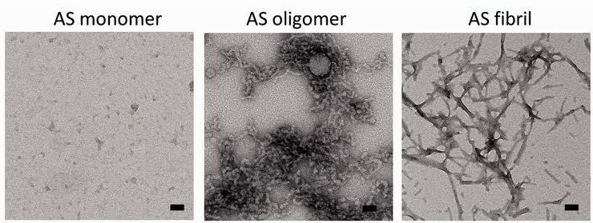
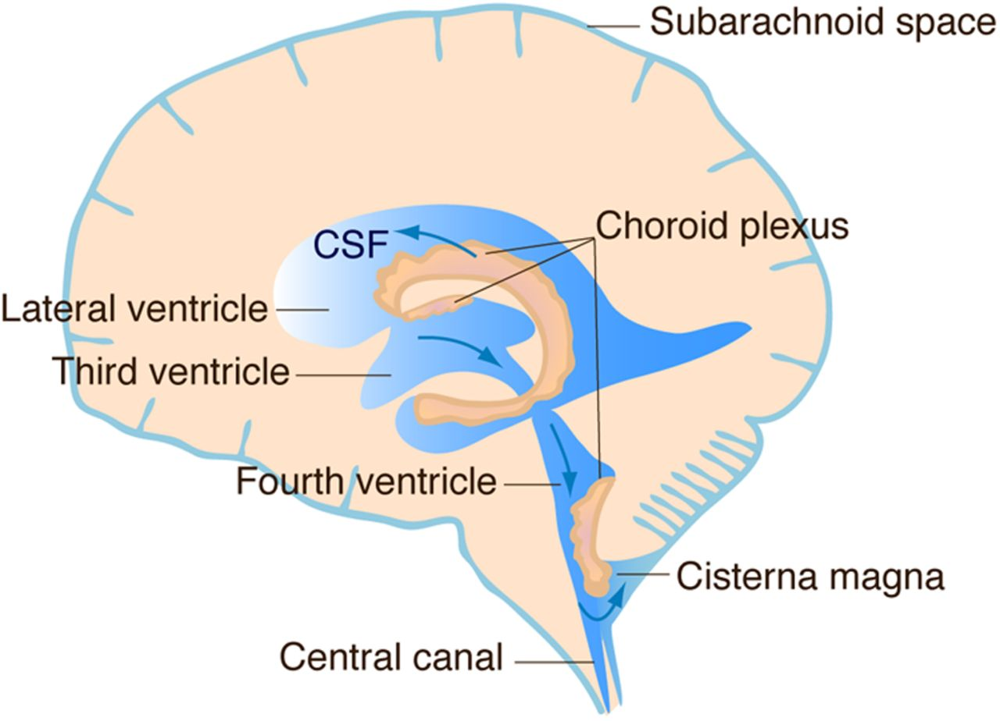
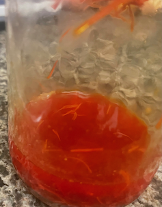
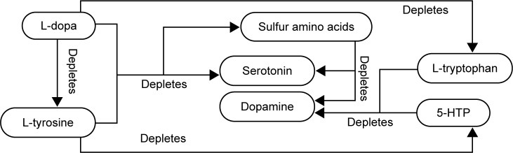
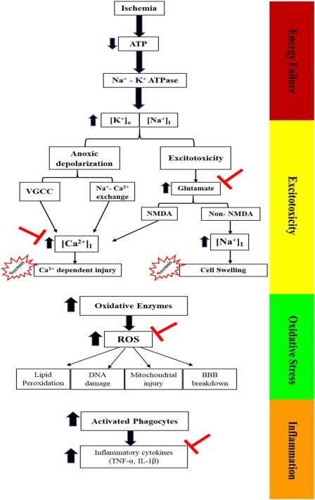
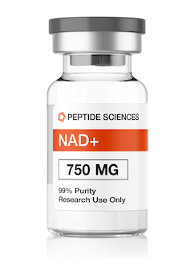
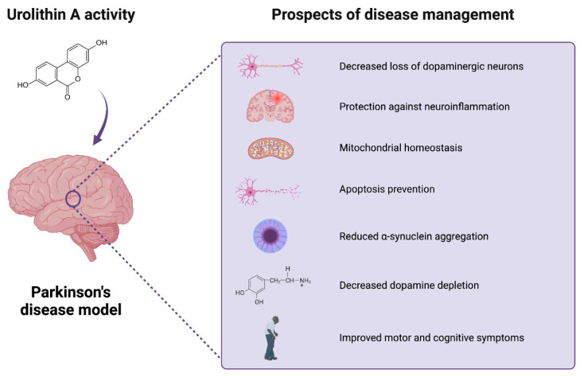

This guide is crafted to empower individuals with Parkinson's Disease (PD) to optimize their health using the latest scientific evidence. It covers disease etiology, medication, exercise performance, diet and supplementation, care providers, photobiomodulation, and more, offering practical strategies for effective management and enhanced well-being.
Started in 2021, this guide was inspired by a relative with PD who chose to eschew evidence-based strategies rather than investigate their veracity and incorporate them into her program. Her condition deteriorated due to complications of autonomic nervous system (ANS) failure, with gastrointestinal and heart problems. This guide reflects core principles of volition, self-ownership, evidence-based practice, informed decision-making, first principles, and critical thinking, aimed at helping others make proactive, informed choices to improve their health outcomes.
How to Use This Guide
This guide is meant to be explored at an individual pace. Parkinson's Disease is complex, and oversimplifying it would leave many questions unanswered. Understanding the disease is a fundamental step toward improvement; however, it isn't necessary to grasp every technical detail immediately. Solutions, such as those in How to Build a Supplement Plan, can be applied right away, with gaps in understanding revisited later through sections like Causes, which covers the deep biological mechanisms and etiology necessary for comprehending PD.
The guide is designed as a resource that can be revisited as the reader's knowledge grows, supporting gradual understanding and informed decision-making. If the material becomes overwhelming, focus on actionable sections like supplements or diet, and return to other parts when ready. Taking breaks or breaking the information into smaller steps can also aid comprehension.
Introduction to Parkinson's Disease
Parkinson’s Disease (PD) is a neurological condition characterized by tremor, muscle stiffness, impaired balance, and coordination. These symptoms are driven by the aggregation of the pre-synaptic protein α-synuclein, which disrupts multiple neurotransmitter systems. This disruption leads to damage in the dopaminergic system, oxidative stress, mitochondrial dysfunction, and weakening of protective brain barriers, all of which broaden the range and severity of symptoms.
PD primarily affects the central nervous system (CNS), with overlapping symptoms haphazardly categorized by mainstream medicine into "motor" and "non-motor" symptoms. Neurological problems may spread to the autonomic nervous system (ANS), parasympathetic nervous system (PNS), and enteric nervous system (ENS), contributing to GI issues, low blood pressure, urinary dysfunction, renal issues, and orthostatic hypotension.
Mitochondrial dysfunction is a fundamental problem in PD, impairing cellular energy production, promoting oxidative damage, and disrupting calcium regulation. These dysfunctions create harmful feedback loops that exacerbate α-synuclein aggregation and neuronal damage.
Although dopamine loss remains a central focus in conventional PD treatment, GABAergic dysfunction is a more fundamental causative factor, as has been well-documented since the 1980s, with research showing alterations in receptor binding and transmission (Rinne et al.). Despite this established evidence, there is no standard treatment specifically targeting GABA or mitochondrial dysfunction in PD. Instead, mainstream treatments focus predominantly on dopamine replacement, overlooking the problem of GABA system failure.
Comprehensively addressing the multiple cellular problems of PD predicts better outcomes than the standard of care, and that is the approach taken in this guide.
Causes and Risk Factors
PD involves abnormal clumping of α-synuclein, a protein that regulates neurotransmitter release to help neurons communicate. In PD, α-synuclein misfolds, disrupting brain function.
Alpha-synuclein is abundant in the brain, but also exists in small amounts in the heart and muscles. It moves between the brain and body via the blood-brain and cerebrospinal fluid barriers, both affected in PD. Y. Sui
In PD, α-synuclein misfolds, forming clumps called oligomers. Oligomers can grow into fibrils, larger, more harmful aggregates, eventually forming Lewy bodies, driving senescence. Similar α-synuclein misfolding occurs in related disorders, such as dementia with Lewy bodies (DLB) and multiple system atrophy (MSA), whose research on α-synuclein misfolding is relevant.
Aging, environmental hazards, and genetics interact pathologically, leading to neuronal death and neurotransmitter imbalances, α-synuclein aggregation, and mitochondrial dysfunction—another major factor in disease progression, causing oxidative damage, apoptosis, and neuroinflammation, driving disease progression. K. Burton
Alpha-Synuclein Pathology
Mutations in α-synuclein increase its tendency to clump, particularly in familial PD cases V. Ruf, J. Li. Misfolded or mutant forms resist breakdown, leading to toxic buildup, cellular stress, inflammation, waste accumulation, and Lewy body formation. Over time, these damaged cells become senescent, releasing toxic compounds that fuel neurodegeneration.
Alpha-Synuclein Aggregation
α-synuclein aggregation leads to formation of oligomers, which can then form fibrils (see figure below). As oligomers and fibrils accumulate, they create Lewy bodies—dense, toxic protein clusters in nerve cells.

Depiction of α-synuclein monomer, fibril, and oligomer. α-synuclein fibrils are long, insoluble fibers made of smaller protein units (monomers and oligomers).
Alpha-Synuclein Clearance Mechanisms
Healthy cells clear small misfolded proteins with the ubiquitin-proteasome system (UPS) and larger aggregates with the autophagy-lysosome pathway (ALP).
In PD, the structure of misfolded α-synuclein and its sheer volume hinder its degradation and clearance. Misfolded α-synuclein aggregates are not efficiently broken down by the proteasome, leading to their buildup and overwhelming the UPS. When the proteasome fails to degrade these aggregates, they are directed to the ALP, where α-synuclein fibrils further resist lysosomal breakdown. This resistance disrupts both clearance pathways, contributing to extracellular waste and increasing neuronal stress. While these processes are explored further in this guide, they remain outside conventional treatment approaches.
Intracellular α-Synuclein Accumulation Diagram
α-synuclein Misfolds
α-synuclein misfolds, forming toxic oligomers.
UPS Overload
UPS overwhelmed by excess misfolded α-synuclein. Larger oligomers block the proteasome or inhibit its activity, preventing efficient degradation.
Cellular Stress
Cellular stress from protein buildup triggers autophagy.
Autophagy Overload
Autophagy overwhelmed as misfolded α-synuclein aggregates block autophagosomes formation and impair fusion with lysosomes.
Cellular Damage
Mitochondrial stress, oxidative damage, and inflammation from misfolded α-synuclein aggregates further impair UPS and ALP function, creating a vicious cycle.
α-synuclein Misfolds
A toxic cellular environment perpetuates α-synuclein misfolding, ER stress, and glial activation, causing formation of toxic α-synuclein oligomers.
Alpha-Synuclein Clearance Mechanisms
As shown in the diagram above, small misfolded proteins like α-synuclein are cleared by the ubiquitin-proteasome system (UPS), which tags unwanted proteins for degradation. Larger aggregates are managed by the autophagy-lysosome pathway (ALP), which transports them to lysosomes for breakdown.
In PD, autophagosomes (structures that deliver cellular waste to lysosomes) try to clear away α-synuclein aggregates but become overwhelmed, leading to buildup of these aggregates that worsens cellular dysfunction.
In PD, misfolded α-synuclein overwhelms both systems, resisting degradation and leading to toxic buildup. These and other waste clearance mechanisms of the brain are explored in greater detail in the section Brain Waste Management Systems (BWMS).
What Causes Alpha-Synuclein Misfolding?
This raises a natural question: What causes α-synuclein misfolding in the first place?
Aside from genetic mutations, multiple things can contribute to alpha-synuclein misfolding, including a toxic cellular environment caused by problems resulting from the misfolding α-synuclein itself — a recursive chicken-and-egg quandary.
Propagation from Gut to Brain: The Braak Hypothesis
Misfolded α-synuclein propagating from the enteric nervous system (ENS), aka "the gut", to the brain, known as the Braak hypothesis, explained later, is one such causal pathway. This dysfunction is exacerbated by excess calcium in dopaminergic neurons, which rely on precise calcium signaling to maintain normal firing patterns. The hypothesis holds that the misfolding begins in the gut. However, PD is more complex, and as mentioned throughout, it is induced in rodents through rotenone and paraquat administration, which indicates that this phenomenological condition may come about in different ways.
Calcium Dysregulation
Calcium dysregulation is a fundamental problem that contributes to α-synuclein misfolding. This can result from elevated parathyroid hormone (PTH), menopause, deficiencies in vitamin D, or magnesium imbalance. Emmanouilidou
Calcium dysregulation may promote the spread of misfolded α-synuclein along the gut-brain axis via the vagus nerve, providing a mechanistic link to Braak’s hypothesis, which would implicate calcium dysregulation as a driver of PD.
While elevated PTH can contribute to calcium dysregulation, addressing nutrient deficiencies and hormonal imbalances may better support neuronal health than pharmacological suppression of PTH, as drugs like cinacalcet, alendronate, and calcitriol carry significant side effects.
When a nerve impulse (or "action potential") reaches the presynaptic terminal (the end of the neuron), it triggers calcium channels (VGCCs) to open, letting calcium into the neuron. Synaptic vesicles, specialized organelles responsible for storing and releasing neurotransmitters at chemical synapses, fuse with the presynaptic membrane, releasing their neurotransmitter contents into the synapse through a process called exocytosis, a form of active transport whereby neurons transport neurotransmitters out of the cell (exo — "outside" + cytosis — "cell").
In healthy neurons, VGCCs precisely regulate calcium influx, triggering neurotransmitter release only when a signal arrives. In PD, this regulation is disrupted, particularly in dopaminergic and GABAergic neurons, which depend on tight calcium control. These imbalances create an excitatory bias in neural networks, increasing neural stress.
Impact on Cellular Functions
Elevated calcium levels stress neurons, disrupt mitochondrial function, increase endoplasmic reticulum (ER) stress, and impair the clearance of misfolded proteins. Together, these disruptions heighten neuronal vulnerability, exacerbate α-synuclein aggregation, and contribute to PD pathology.
Testing Calcium Dysregulation
Standard blood tests measure total and ionized calcium, along with other electrolytes like magnesium and phosphate, but these don’t reveal intracellular calcium levels.
Flow cytometry with calcium-sensitive dyes can assess intracellular calcium levels. Although calcium dysregulation is common, testing is expensive and rare. Patients can ask their providers; it might be available through a specialist or in research settings.
Medical systems tend to focus more on symptom management than on detecting fundamental issues like calcium dysregulation, as preventive care doesn't align with the predominant healthcare focus on symptomatic treatment. This approach can leave patients without access to meaningful insights on calcium imbalances, complicating targeted intervention.
Most patients lack direct information about their intracellular calcium levels, and this complicates targeted intervention. The supplement guide includes several categories of compounds that, while often safe when used appropriately, require careful attention to dosage, interactions, and individual health profiles to avoid unintended effects on calcium homeostasis. See: Solution: Calcium Dysregulation and consult your provider about these interventions.
Senescent cells stop dividing but release harmful, pro-inflammatory molecules called senescence-associated secretory phenotypes (SASPs). These secretions damage neighboring cells, promoting their dysfunction and driving them into a senescent state.
Senescent cells contribute to mitochondrial dysfunction, neuroinflammation, and the spread of α-synuclein aggregates. By impairing autophagy, increasing oxidative stress, and perpetuating inflammation, they create a cycle disrupts calcium homeostasis, and accelerates disease progression across neurotransmitter systems.
Multiple Neurotransmitter Systems Damage
In 2016, Janusz W. Błaszczyk challenged established beliefs, proposing that PD is a multisystem disorder, where GABAergic decline contributes to dopaminergic depletion in the progression of motor and non-motor symptoms. Numerous studies have since expanded on his claims. Błaszczyk
PD affects multiple neurotransmitter systems beyond dopamine. Dysfunctions in the GABAergic, serotonergic, noradrenergic, and cholinergic systems leads to non-motor symptoms such as depression, anxiety, and cognitive decline. Standard care fails to address this multisystem damage, resulting in poor management of both motor and non-motor symptoms. Instead, a holistic approach that targets all these systems is necessary.
A comprehensive metastudy published in 2024 confirmed that GABAergic dysfunction disrupts calcium homeostasis, leading to mitochondrial dysfunction and oxidative stress. Restoring GABA activity may preserve mitochondrial health and protect dopaminergic neurons, alleviating both motor and non-motor symptoms in PD. Alharbi
Błaszczyk observed nearly a decade prior that calcium/GABA dysregulation lead directly to dopaminergic neuron loss and neuroinflammation, weakening the BBB. Subsequent research strengthens this assertion, showing this neuroinflammation extends to the glymphatic system and CSF circulation, furthering PD progression.
GABAergic Dysfunction and Calcium Dysregulation
GABAergic dysfunction disrupts motor control, exacerbating calcium dysregulation, leading to prolonged excitatory states in neurons. Excessive calcium influx overwhelms mitochondria, which absorb this excess into the mitochondrial matrix, impairing energy production and triggering oxidative stress. Dopaminergic neurons are highly sensitive to calcium fluctuations and vulnerable to this excitotoxic damage, accelerating degeneration.
DRT Impact
Dopamine Replacement Therapy (DRT) provides temporary symptomatic relief but contributes to long-term neurodegenerative damage by worsening calcium dysregulation. This calcium overload stresses mitochondria, leading to accelerated neurodegeneration. Additionally, DRT depletes vitamin B6, essential for GABA and serotonin production, compounding neurotransmitter imbalances. DRT alone—without addressing the underlying GABA imbalance—overstimulates excitatory pathways, leading to excessive calcium influx into neurons, perpetuating a harmful feedback cycle.
Solutions
To reduce reliance on DRT, treatments should aim to address GABAergic collapse and calcium dysregulation. High-dose K2 (5,000 mcg daily) can aid in calcium regulation. Supplementation with GABA and theanine can help restore GABAergic function, with theanine potentially replenishing the neurotransmitter pool of GABA in GABAergic neurons. Cacao, which contains anandamide (an NMDA receptor antagonist reduced in PD), may help mitigate excitotoxicity. Cholinergics can stabilize the plasma membrane and reduce excessive calcium influx, while mitochondrial enhancers like CoQ10, PQQ, and NAD+ boosters restore mitochondrial health and energy balance, alleviating the effects of calcium overload. For more details on DRT pitfalls, see DRT: Neurochemical and Vitamin Imbalances.
Individuals with a history of exposure to certain chemicals are at higher risk and may want to consider testing.
Pesticides and Herbicides
Pesticide and herbicide exposure causes mitochondrial dysfunction and, in certain individuals, α-synuclein overexpression. Herbicide rotenone and pesticide paraquat so reliably induce PD that they are used to induce PD in rodent model experiments Park, Pan-Montojo. Rotenone impairs the ubiquitin-proteasome system, leading to accumulation of misfolded proteins, including α-synuclein. Betarbet
Drug Use
Chronic use of cocaine and amphetamines weakens the brain’s waste management systems, making it more susceptible to damage that can lead to PD. These drugs damage the brain differently, but both create oxidative stress and damage dopaminergic neurons.
Genetic and Epigenetic Influences
Gene mutations of DJ-1, PINK1, parkin, LRRK2, and SNCA genes contribute to several cellular issues. These mutations disrupt mitochondrial function, protein degradation, and cellular stress responses, leading to increased oxidative stress, impaired autophagy, and disease progression. M. Vlag
Epigenetic Influences
Epigenetic factors can influence the expression of genes like the LRRK2 gene (LRRK2-G2019S) and SNCA, affecting the production and pathogenicity of mutant α-synuclein. Klein, alpha-synuclein-net
Vitamin B12, for example, is an external factor that prevents LRRK2-G2019S-potentiated α-synuclein accumulation in dopaminergic neurons. Schaffner
Hormonal Loss
The risk of developing PD is higher in men and in women with early menopause. Sex hormones are neuroprotective, and their loss is a risk factor in various neurodegenerative diseases, including PD. Hormonal therapies such as HRT, DHEA, and pregnenolone have shown beneficial effects in men and women. For more, see the section on HRT.
Mechanisms of Spread
Once aggregated, misfolded α-synuclein spreads between neurons and neural networks, leading to abnormalities in synaptic structure and function before neuronal loss occurs. This process contributes to the progressive spread of the disease from initially affected brain regions to others. Daley, Pérez-Acuña
Senescent Spread
As senescent cells accumulate, their inflammatory response accelerate the spread of alpha-synuclein aggregates, enhancing cellular dysfunction across interconnected brain regions, in a senescence-associated secretory phenotype (SASP). Verma
Strategies to address α-synuclein include preventing its mutation, inhibiting aggregation, improving its clearance from the brain, promoting proper refolding with chaperones, and using senolytics to remove senescent cells. A comprehensive approach to address each etiological problem is more likely to improve outcomes, steering away from PN.
Gut-Brain Axis and Alpha-Synuclein Propagation
Alpha-synuclein aggregation in the GI tract may precede motor symptoms. Misfolded α-synuclein can propagate from the enteric nervous system (ENS) in the gut to the brain via the vagus nerve, creating a direct link between the gut and the central nervous system (CNS). This pathway, part of the Braak hypothesis, suggests that α-synuclein pathology may start in the gut before reaching the brain. Braak, Chao
Braak's seminal discovery led to imaging studies showing that α-synuclein pathology affects large parts of the peripheral nervous system which may further implicate the gut-brain pathway in PD progression, and sonographic studies have confirmed vagal nerve atrophy, supporting gut-brain pathway in PD progression. schaeffer
Neurotransmitters, including dopamine, serotonin, and GABA, are also produced in the gut, affecting mood, sleep, and GI health. Impaired gut health reduces neurotransmitter production, worsening PD symptoms. Rstoring gut health may improve upon these symptoms. A preliminary 2020 study out of Nanjing Medical University found that colonic fecal (FMT) improved sleep, anxiety, and depression, showing that improving gut health can lead to improved health and symptoms in PD.
Xue
Alpha-synuclein pathology can propagate bidirectionally between the gut and brain, via the vagus nerve or the bloodstream, depending on individual factors. GI symptoms, such as constipation, often precede motor symptoms by years, indicating that the gut may be an early site of PD pathology. Klann, Arotcarena
Gut dysbiosis can exacerbate α-synuclein misfolding and accelerate PD progression. Conversely, DRT may worse gut dysbiosis, further compounding the issue. This insight into gut dysbiosis and the mutually destructive interdependent effects of poor gut health and DRT usage provides yet another reason to minimize and avoid DRT overreliance in favor of a more comprehensive program to improve gut health. Klann, Breen, Mulak
Solutions
Strategies to support gut health include reducing sugar intake, increasing fiber, and consuming probiotic foods (e.g., yogurt, kimchi, natto). Such changes may help balance the microbiome and reduce GI-related symptoms in PD. Additionally, FMT has shown promise in preliminary studies, potentially reducing inflammation and oxidative stress to improve both motor and non-motor symptoms.
Strategies to support gut health include reducing sugar intake, increasing fiber, and consuming probiotic foods (e.g., yogurt, kimchi, natto). Such changes may help balance the microbiome and reduce GI-related symptoms, improve gut health, and may help mitigate the progression of PD and improve patient outcomes. Additionally, FMT has shown promise in preliminary studies, potentially reducing inflammation and oxidative stress to improve both motor and non-motor symptoms.
The gut lining can be strengthened by first eliminating things that weaken it, including NSAIDs, gluten, alcohol, and fluoride. Consuming collagen peptides and hyaluronic acid can help strengthen the gut lining.
The vagus nerve is involved in digestion and cardiovascular function. Transcutaneous vagus nerve stimulation (VNS) is a non-invasive procedure that has shown improvement in movement in PD patients. A 2022 double‐blind randomized crossover on transcutaneous cervical vagus nerve stimulation (VNS) showed improvements in stride length, swing amplitude, gait speed, and gait time showed significant changes following treatment. Marano
The brain's waste management systems (BWMS) defined herein describes the coordinated systems of interdependent intracellular and extracellular components that protect the brain from harmful substances, clear waste, and maintain homeostasis.
Intracellular Clearance: UPS and ALP
Intracellular clearance mechanisms include the ubiquitin-proteasome system (UPS) and autophagy-lysosomal pathway (ALP) introduced previously.
Extracellular Clearance
Extracellular clearance mechanisms include brain phagocytes, the blood-brain barrier (BBB), choroid plexus, CSF, glymphatic system, perivascular spaces, extracellular matrix (ECM), basement membrane. Dysfunction in any of these subsystems leads to α-synuclein aggregation, inflammation, and mitochondrial damage, which impacts other interdependent subsystems, leading to the accumulation of junk proteins and Lewy bodies. Various interventions can improve the integrity and function of these components, with measurable effects. Solár
Impact of Dysfunction
When these systems are overwhelmed, their impairment leads to neuronal damage and overburdens interconnected systems, resulting in further dysfunction. For example, α-synuclein fibrils resist breakdown, overloading the UPS and ALP. This results in extracellular waste accumulation, which strains brain phagocytes and other clearance mechanisms.
Normally, smaller misfolded proteins (like α-synuclein) are cleared by the UPS. However, the proteasomes in the UPS can't digest larger, insoluble aggregates that α-synuclein forms over time. In PD, mutant or aggregated α-synuclein resists lysosomal degradation, disrupting autophagy and causing the toxic accumulation of cellular waste. As autophagy fails, oxidative stress and inflammation increase, leading to mitochondrial damage and cell death.
Microglia and astrocytes clear extracellular α-synuclein aggregates through phagocytosis. In PD, chronic neuroinflammation impairs this process, worsening protein clearance deficits. Increased BBB permeability compounds the problem, allowing contaminants and inflammatory substances to enter and harm the brain. These substances can accumulate in the CSF, further damaging the choroid plexus and disrupting CSF homeostasis, amplifying the strain on all of these interdependent clearance systems.
The Blood–Brain Barrier (BBB)
The BBB is a protective layer of specialized cells that line the blood vessels of the central nervous system (CNS) in the brain, controlling what enters and exits the CNS to maintain homeostasis, allowing necessary nutrients and oxygen to pass through while blocking toxins, pathogens, and other harmful substances.
Choroid Plexus and CSF
The choroid plexus is a plexus of cells, a self-contained, functional unit located within the ventricles responsible for secreting in the and forming a blood-CSF barrier. It consists of a layer of epithelial cells surrounding a core of capillaries and loose connective tissue. As CSF circulates through the brain, it transports essential substances such as nutrients, growth factors, hormones, proteins, electrolytes, and neurotransmitters, while also collecting waste products, including misfolded proteins like α-synuclein. The waste-laden CSF is then drained through specialized pathways, including the ventricles and the glymphatic system, before being filtered out by the liver and kidneys. Damage to the choroid plexus can impair CSF production, disrupt waste clearance, and reduce the transport of essential substances, potentially contributing to cognitive decline.
Damage to the choroid plexus impairs CSF production and disrupts waste clearance, allowing α-synuclein to accumulate, clog, and damage its epithelial cells. This accumulation hinders the brain's ability to clear waste and deliver essential nutrients and growth factors, exacerbating neuroinflammation. Al-Bachari, Saunders, Tadayon

Choroid Plexus — a highly vascularized tissue located in each ventricle of the brain that secretes CSF.
Ventricles
The ventricles are interconnected cavities within the brain filled with CSF. This fluid eventually moves into small structures called arachnoid granulations, tiny, finger-like extensions of the brain’s protective membrane. These granulations help reabsorb CSF into the bloodstream through the dural venous sinuses surrounding the brain, from where it is carried away by the internal jugular veins.
The ventricles circulate and hold CSF and passively drain waste-laden CSF. However, the glymphatic system actively extends through brain tissue to clear waste directly from within the brain and distribute nutrients and neurotransmitters throughout the brain.
The Glymphatic System
The glymphatic system is a dual-purpose pathway that transports nutrients and growth factors and also performs brain-specific waste clearance.
These glial cells remove metabolic waste and toxins, including misfolded proteins like α-synuclein, using CSF to flush out waste from the brain along perivascular spaces (areas surrounding arteries and veins), similar to the body's lymphatic system, hence the term "glymphatic" (glial + lymphatic). Its essential function is compromised in neurodegenerative diseases, including PD.
How it Works
The glymphatic system moves CSF from the space around the brain into brain tissue, where it mixes with interstitial fluid (fluid between brain cells) to clear waste like misfolded proteins. This waste is then carried along the spaces surrounding blood vessels and drained into the deep cervical lymph nodes in the neck for filtration and removal by the body's lymphatic system.
Protein Clearance Pathway Dysfunction
Ubiquitin-Proteasome System (UPS) Dysfunction
The UPS degrades smaller, soluble misfolded or damaged proteins by tagging them with ubiquitin and directing them to proteasomes for breakdown. In PD, UPS dysfunction leads to α-synuclein accumulation, which overwhelms other waste clearance pathways and triggers oxidative stress, mitochondrial dysfunction, and neurodegeneration.
Autophagy-Lysosomal Pathway
When α-synuclein aggregates are too large for the UPS, they are targeted for autophagic degradation. As noted earlier in the Alpha-Synuclein Clearance Mechanisms section, autophagosomes form around these aggregates, isolating them from the rest of the cellular environment. The autophagosome then fuses with a lysosome, forming an autolysosome that degrades the aggregated proteins within the autophagosome.
autophagosome — (auto — "self" + phago — "eat; consume" + some — "body") — temporary intracellular structure that engulfs damaged components and delivers them to lysosomes, which act as the cell's recycling centers.
However, in PD, lysosomal degradation becomes impacted, disrupting autophagy and causing the toxic accumulation of cellular waste. As autophagy fails, oxidative stress and inflammation increase, leading to mitochondrial damage and cell death. This accumulation contributes to extracellular waste, overburdening phagocytes and the glymphatic system, worsening neurodegeneration.
Brain Phagocytes
As mentioned earlier, the lysosomal system in autophagy helps neurons degrade internal misfolded proteins like α-synuclein. Lysosomes also assist phagocytes in clearing extracellular waste. While neurons use autophagy to clear intracellular waste, brain phagocytes, such as microglia and astrocytes, use lysosomal phagocytosis to clear external waste.
Brain phagocytes, including microglia, astrocytes, and macrophages, clear cellular debris and toxic proteins. Microglia, the primary phagocytes, engulf damaged neurons, dead cells, and toxic proteins. Astrocytes help clear apoptotic cells (cells dying in a controlled manner) and excess neurotransmitters, supporting microglia in debris removal. Macrophages, present in the perivascular space, also perform phagocytosis, though they are less involved than microglia.
Phagocytes perform the initial cleanup, breaking down harmful proteins like α-synuclein within themselves, with the remainder either recycled or expelled for further clearance. The glymphatic system helps by flushing extracellular waste from the brain via CSF.
In PD, misfolded α-synuclein accumulation triggers neuroinflammation, impairing phagocytosis and worsening α-synuclein aggregation. This neuroinflammation impairs phagocytosis, which in turn exacerbates α-synuclein aggregation. This buildup of α-synuclein leads to further aggregation, oligomerization, and fibrillization, forming Lewy bodies and advancing neurodegeneration and senescent cells. Additionally, collagen cross-linking caused by advanced glycation endproducts (AGEs) from high blood sugar, oxidative stress, or chronic inflammation further impairs phagocytosis.
Cells, impacted by this toxicity, become senescent, not functioning but failing to die and impairing phagocytic function and blocking extracellular waste clearance pathways. This leads to a feedback loop where more toxic proteins accumulate, increasing neuroinflammation and mitochondrial damage.
α-synuclein Misfolds in Neurons
Misfolded α-synuclein forms toxic oligomers and fibrils.
Impaired UPS and ALP
UPS and ALP are overwhelmed, leading to toxic buildup of α-synuclein within neurons.
Neuroinflammation & Mitochondrial Stress ⟳
Accumulated α-synuclein fibrils cause neuroinflammation and mitochondrial dysfunction, exacerbating the UPS and ALP.
↑ BBB Permeability
Chronic neuroinflammation weakens the BBB, allowing harmful substances into the brain from the bloodstream.
Choroid Plexus Damage
Choroid plexus damage reduces CSF production and waste clearance, allowing α-synuclein to accumulate and damage epithelial cells.
Impaired Glymphatic & CSF Clearance
Waste clearance systems, like the glymphatic system and CSF, struggle to remove extracellular protein aggregates.
Protein Buildup & Feedback Loop
As extracellular waste builds up, it further impairs phagocytosis and clearance mechanisms, worsening neuroinflammation and α-synuclein aggregation.
Cycle Continues
Neuroinflammation, mitochondrial stress, protein accumulation, and waste clearance create a vicious cycle, exacerbating waste buildup and neuronal damage.
Solutions
A multifaceted approach can be used to try to stop the feedback loop, including measures to prevent α-synuclein aggregation, restore choroid plexus and BBB integrity, improve UPS and ALP function, reduce neuroinflammation, and improve mitochondrial health.
Assessing BBB and Choroid Plexus Integrity
Elevated BBB permeability affects waste clearance, including the movement of α-synuclein. Contrast agents are used in DCE-MRI) to visualize changes in BBB permeability.
Strengthening the BWMS
Health strategies that promote collagen formation and support the ECM may help counteract the effects and degradation of the BBB. Promoting ECM stability and collagen synthesis contributes to maintaining the structural integrity of the BBB and reduces its permeability to harmful substances, thereby mitigating a major etiological pathway of PD.
These include HRT, DHEA, pregnenolone, Growth hormone (GH) and secretagogues (tesamorelin, CJC-1295), collagen peptides (especially collagen type IV), hyaluronic acid, vitamin C, tocotrienols, vitamin K2, vitamin D3, PQQ, beta-glucan (from mushrooms), MSCs, photobiomodulation, and last but not least, intense exercise.
Improving the Ubiquitin Proteasome System (UPS) and Autophagy-Lysosome Pathway (ALP)
Exercise, fasting, caloric restriction, and compounds like trehalose promote autophagy by enhancing cellular stress responses. mTOR inhibitors (such as rapamycin) reduce inhibitory signals on autophagy, increasing the clearance of misfolded proteins. Lithium helps stimulate autophagy and protects against neurodegeneration. Senolytics eliminate senescent cells that impair waste clearance. Mitochondrial enhancers, including Urolithin A and NAD+ boosters, support cellular energy production, further improving UPS and ALP efficiency.
Strengthening Brain Phagocytes
Addressing the root cause—α-synuclein aggregation—addresses the primary disruption in phagocytosis, which in turn reduces neuroinflammation and limits neuronal damage. Reducing α-synuclein aggregation should be considered a first line of prevention to improve brain phagocytosis.
Other health strategies to improve brain phagocytosis include reducing neuroinflammation, increasing blood flow, and increasing neurotrophins. These include supplementing DHA, beta-glucan (from mushrooms), lion's mane, cordyceps, turmeric, ginseng, creatine, EGCG (matcha), ALCAR, phosphatidylserine, tocotrienols, and senolytics. Pyridoxamine (vitamin B6) and aminoguanidine can reduce collagen cross-linking. Growth hormone (GH) and secretagogues (tesamorelin, CJC-1295) photobiomodulation and physical exercise increase neurotrophins. Mesenchymal signaling cells reduce neuroinflammation.
Increasing CSF Production
Cholinergics and related supplements can support brain function and potentially influence cerebrospinal fluid (CSF) production. Higher choline levels can improve membrane integrity and fluidity, improve BBB integrity and cellular function, and might indirectly support glymphatic system performance.
Do interventions targeting collagen/ECM strengthen the glymphatic system?
Yes, interventions that improve the health of the ECM and strengthen collagen may have a beneficial effect on the structural support around blood vessels and thus support glymphatic function. The perivascular spaces which direct CSF flow in the glymphatic system, rely on the surrounding ECM for waste clearance. In PD, these spaces enlarge, reducing waste clearance efficiency. Restoring collagen and ECM health should reduce the size of the perivascular spaces, improving glymphatic function and waste clearance of α-synuclein.
Mitochondrial dysfunction is a primary problem in PD. Disrupted energy production, increased oxidative stress, and calcium imbalances all worsen neurodegeneration. This section explores how these mitochondrial dysfunctions accelerate disease progression along with targeted strategies to support mitochondrial resilience, reduce oxidative damage, and improve cellular stability in PD.
Damage to mitochondria can cause α-synuclein aggregation by disrupting cellular processes and increasing oxidative stress. Mitochondria, the powerhouse of the cell, produce ATP, the energy currency of the cell. When mitochondria are impaired, energy production drops and oxidative stress rises, damaging neurons. This creates a cycle where disrupted cellular processes cause protein misfolding and aggregation, which worsens oxidative stress, recursively accelerating mitochondrial dysfunction and neurodegeneration. Daley
Mitochondrial Dysfunction and Waste Clearance
Mitochondrial dysfunction, coupled with impaired mitophagy, the process of mitochondrial degradation and recycling, allows dysfunctional mitochondria to accumulate, leading to cellular senescence. Senescent cells release reactive oxygen species (ROS) and inflammatory cytokines, which damage neighboring cells and promote neurodegeneration. This cycle accelerates the buildup of misfolded proteins like α-synuclein and impairs essential processes like autophagy and mitophagy, exacerbating neurodegeneration.
Mitochondrial dysfunction impairs the brain's waste management systems (BWMS), including the UPS and ALP, leading to an accumulation of misfolded proteins. Improving mitochondrial health reduces oxidative stress and supports waste clearance, helping to break the cycle of neurodegeneration.
Improving mitochondrial health decreases the amount of this waste burden and reduces the damage to the systems that remove it, thereby improving the clearance of waste from the brain.
Mitochondrial DNA Damage
Mitochondrial DNA damage further impairs function. Ineffective autophagy and mitophagy fail to remove damaged mitochondria and proteins, leading to the formation of senescent cells. These senescent cells resist lysosomal degradation due to protein aggregation, worsening cellular damage. Korolchuk
Brain Inflammation
Chronic brain inflammation, also known as neuroinflammaging, is a state of neuroinflammation and immunosenescence, a chronic, low-grade inflammatory state. This chronic, low-grade inflammatory state is both a consequence and a driver of mitochondrial dysfunction. Mitochondrial damage contributes to neuroinflammaging, while the resulting inflammation can further impair mitochondrial function, creating a vicious cycle that accelerates neurodegenerative processes.
Mitochondrial Calcium Dysregulation
Besides producing energy, mitochondria help regulate calcium levels in nerve cells by acting as a “buffer", absorbing excess calcium to maintain proper neuron function. Calcium is essential for neuron signaling; however, neurons are particularly sensitive to calcium levels, and its excess can be toxic. Learning about excess calcium can help inform options for testing and managing it, as described further in this section.
Mitochondria regulate cellular calcium to prevent mitochondrial permeability transition pore (mPTP) opening, a process that leads to to cell death, particularly in neurodegenerative diseases like PD. Calcium dysregulation in mitochondria exacerbates oxidative stress, disrupting ATP production and causing neuronal damage.
Excess intracellular calcium occurs through three main pathways. First, channels at the cell surface (VGCCs) allow calcium inside. Second, the mitochondrial calcium uniporter (MCU) regulates calcium entry directly into mitochondria for safe storage. Third, the inositol triphosphate receptor (IP3R) moves calcium from the cell’s internal stores into mitochondria. In Parkinson’s Disease, damaged mitochondria lose their ability to manage this calcium effectively, which leads to overload, energy issues, and cell death. In PD and similar conditions, mitochondrial damage (due to oxidative stress and other issues) and excess calcium disrupts the MCU’s function, leading to uncontrolled, excess calcium uptake and an opening of the mPTP, leading to neuronal death.
High calcium levels outside cells—often due to supplementation—can trigger the IP3R pathway, which further transports calcium from the ER to the mitochondria. This further overloads mitochondria, reducing ATP production and eventually triggering cell death.
Hormonal Loss and Calcium Supplementation (Warning)
Hormonal loss, often occurring with age, disrupts calcium handling in both men and women. However, postmenopausal women face an increased risk of calcium imbalance, exacerbated by the common healthcare recommendation to supplement calcium. Rather than relying on calcium supplementation, focusing on bone strength through targeted exercise and supportive nutrients that promote calcium uptake into bones may offer a safer and more effective approach.
Blood Calcium Tests and Intracellular Calcium Levels
While standard blood calcium tests measure calcium in the bloodstream, they do not indicate levels within neurons or mitochondria. Discussing options like calcium imaging with a healthcare provider can offer insight into calcium levels specific to cellular and mitochondrial health.
Solutions to Calcium Dyregulation
The understated problem of calcium dyregulation is only worsened by the dearth of solutions. Pharmaceutical VGCC blockers (L-type) have been proposed Ntetsika, however, those come with side effects and worse, clinical trials (STEADY III) results have been poor. A more comprehensive solution to addressing calcium management is in order.
Excess intracellular calcium can be managed with natural (non-pharmaceutical) VGCC (L-type) blockers, IP3R modulators, and osmolytes, as well as by reducing excess extracellular calcium, which contributes to excess intracellular calcium (via the IP3R pathway). Excess extracellular calcium can be reduced by stimulating bone uptake of calcium. See the Calcium Dysregulation solutions in the problems list for more.
Calcium AKG vs Strontium — Which to Supplement?
Calcium supplementation puts one at risk of calcium excess. Calcium alpha-ketoglutarate (Ca-AKG) assists with calcium regulation and improves mitochondrial function (it also reduces inflammation) Zimmermann, Gyanwali. In PD, where mitochondrial health is compromised, Ca-AKG at ~500 mg per day along with 250 mg strontium citrate and other aforementioned bone-supportive supplements, offers a more comprehensive and safer option. Strontium, while structurally similar to calcium, does not overload mitochondria in the same way, offering superior support without increased mitochondrial stress. Individual needs may vary, and patients should discuss this approach with their healthcare provider to determine the most appropriate dose and evaluate personal calcium needs beyond blood tests alone.
Osmolytes
Osmolytes help maintain a stable environment within cells by balancing water and ion concentrations, preventing mitochondrial overloads of calcium and other ions that can stress the cell. Common osmolytes include glycine, taurine, and betaine, as well as the electrolyte chloride, which together help stabilize cellular and mitochondrial environments by managing calcium and other ion concentrations.
Mitochondrial dysfunction, in the greater context of PD, also disrupts GABA-producing neurons, impairing GABAergic signaling. As GABA function declines, calcium influx increases, causing abnormal neuronal firing and excitotoxicity, accelerating neurodegeneration, contributing to disease progression. Matuz-Mares
Reactive Oxygen and Nitrogen Species (RONS)
Mitochondrial dysfunction and Reactive Oxygen and Nitrogen Species (RONS) can cause α-synuclein to misfold and aggregate, forming toxic mutant species. Combined with calcium dysregulation and inflammation, this toxic α-synuclein contributes to neuronal death and the pathology of PD.
Hu
Solutions
Several strategies discussed in this document can improve mitochondrial function. These include growth hormone (GH) and secretagogues, vitamin C, tocotrienols, creatine, vitamin K2, vitamin D3, PQQ, beta-glucan, NAD+ and precursors, NAC, and many others detailed in this document.
Photobiomodulation, intermittent fasting, sauna, and cold plunges all improve mitochondrial function. Toro, Hunt, Chung
An exercise routine focused on HIIT can fight neurodegeneration and increase cerebral blood flow, improving oxygen delivery, increasing neurotrophins and growth factors, and aiding the penetration of exogenous compounds into deeper brain regions where they can exert therapeutic effects. Many substances that improve health also hasten exercise recovery, further optimizing health.
Once a comprehensive health optimization protocol is established, MSCs can be used to stop neuroinflammation and induce healing.
The endoplasmic reticulum (ER) as a cellular organelle primarily responsible for protein folding, lipid synthesis, and calcium storage. The ER and mitochondria communicate closely through structures called mitochondrial-associated ER membranes (MAMs), which manage the flow of calcium between them. Normally, this interplay between the ER and mitochondria helps balance cellular energy needs and signaling.
In PD, accumulation of misfolded α-synuclein and other proteins disrupts ER function, leading to ER stress. These disruptions in normal ER function compromise protein homeostasis and destabilize MAMs, weakening the ER-mitochondria interface and promoting mitochondrial calcium overload. This overload disrupts cellular signaling and contributes to mitochondrial permeability, inflammation, and cell death. Matuz-Mares
Proteostasis and Chaperone Proteins
Proteostasis is the protein quality control mechanism of the cell, facilitated by chaperone proteins. Lautenschläger
Chaperone proteins, like heat shock protein 70 (Hsp70), help correctly fold and refold proteins, including α-synuclein, reducing misfolding which leads to aggregation. ER stress worsens when these mechanisms are overwhelmed in PD. Hu
Solutions
Chaperone function can be stimulated by heat exposure from sauna therapy and photobiomodulation, both of which stimulate the production of Hsp70 and other protective proteins. Curcumin, resveratrol, and glycyrrhizin (from licorice root), also increase the expression of chaperones like HSP70. These interventions can improve protein homeostasis, reduce oxidative stress, and aid in the clearance of misfolded proteins.
Previous studies have shown that some genetic variants increase the risk for PD after exposure to environmental factors such as pesticides. Research has also shown that patient genotype can indicate survival time and treatment approaches.
This rodent study showed that the A53T and A30P genetic mutations in α-synuclein have an increased propensity to aggregate compared with the wild-type protein, and this shows how mutant α-synuclein contributes to PD.
They note α-synuclein in PD arose from gene-linkage experiments in familial early-onset Parkinson’s disease, which revealed the A53T mutation.
This rodent model showed that pesticides can initiate the progression of PD pathology and that this progression is based on the transneuronal and "retrograde axonal transport" (that α-synuclein goes back into the cell) of alpha-synuclein. If confirmed in patients, this study would have crucial implications for strategies used to prevent and treat PD.
This rodent model showed that pharmacologically increasing SIRT3, as recommended in this article, can counteract α-synuclein-induced mitochondrial dysfunction by reducing α-synuclein oligomers and normalizing mitochondrial bioenergetics.
This 2014 paper provides compelling arguments that the identification of PD gene mutations, especially in patients with early-onset PD, can provide information on prognosis and will affect treatment choices in cases of PD that were initially suspected to be psychogenic. Why is this 10-year-old paper not the standard of care!?
Individuals who developed a triplication of the SNCA gene, as opposed to a duplication, displayed more severe symptoms including early-onset parkinsonism with dementia. This indicates a dose-dependent correlation between the progression of PD and SNCA gene dosage. alpha-synuclein-net
Upon clinical diagnosis of PD (via UPDRS score), serious damage has already been done to nerve cells of the substantia nigra. This underscores the importance of early testing and genetic testing. F. Nouri Emamzadeh
Alpha-synuclein oligomers are higher in PD patients than in healthy subjects. This can be tested with AlphaSyn-SAA salivary test or Syn-One skin biopsy.
Early Testing and Diagnosis with AlphaSyn-SAA
The AlphaSyn-SAA salivary test measures the levels of salivary alpha-amylase (SAA). The results are used to assess autonomic nervous system activity, particularly sympathetic nervous system activation. This test can, with some margin of error, identify people at risk of developing Parkinson’s disease up to ten years before symptoms appear.
Syn-One
The Syn-One skin biopsy detects the presence of phosphorylated alpha-synuclein in the skin. This is a much more accurate test than the AlphaSyn-SAA and is usually used as confirmation, rather than a preventive diagnostic.
Genetic Testing
Most cases of Parkinson's Disease are not classified as genetic. Genetic testing for PD is not routinely performed because only about 15% of cases are determined to be genetic. It's a classic absence of evidence fallacy.
Genetic testing can provide valuable information to guide treatment, as different genetic mutations may affect disease progression and response to therapies. (See also: What to Know about Genetic Testing) L. Cook
All genetic forms of PD should be considered when developing treatment strategies, with the focus varying depending on the specific mutation and its molecular pathway. Healthcare teams are encouraged to discuss genetic testing and its implications for personalized treatment.
Test Your Children
Children of PD patients should be tested before they exhibit symptoms similar to those of PD. Symptoms may take up to 10 years to present.
Testing Locations
Genetic testing for these mutations can be done at specialized medical centers and genetic testing companies. Some notable places include:
Problem: Parkin tags damaged mitochondria for degradation through mitophagy. Mutations reduce the efficiency of this process, allowing dysfunctional mitochondria to persist and exacerbate oxidative stress.
Strategy: Mitochondrial, mitophagy, antioxidant.
DJ-1 & PINK1
Problem: These proteins are involved in protecting cells from oxidative stress. Mutations impair their ability to manage mitochondrial dysfunction, leading to increased production of ROS, which can damage neurons.
A custom-tailored care plan based on the genetic type of PD will predict the best outcomes.
Effective treatment must approach PD from multiple angles. The review "Current Therapies in Clinical Trials of Parkinson’s Disease: A 2021 Update", provides a fair overview of PD.
Upon clinical diagnosis of PD, serious damage has already been done to nerve cells of the substantia nigra pars compacta. This underscores the importance of early testing and genetic testing.
In some cases, identification of PD variants may aid in the diagnosis, management, and prediction of disease course.
Etiological and Holistic Approach
This guide uses an etiological holistic approach. That is, it is comprehensive, evidence-based, and addresses the root causes of PD with care, precision, and skepticism — considerations that should be applied to the veracity of all healthcare claims.
Here are some approaches to target underlying problem areas:
Antifibrillogenic
— prevents fibril formation of α-synuclein
Phosphatidylserine, uridine, tocotrienols and tocopherols, curcumin, ginger, ginseng, PQQ, saffron.
Supplements and dietary recommendations are components of a comprehensive health program targeting total human performance at the cellular level. This approach focuses not only on physical exercise but also on non-motor aspects such as sleep, cognitive function, and overall well-being.
Brief explanations of what the supplements do accompany the plan. The etiological problems they address are detailed under Causes and Risk Factors. Details on each supplement is listed under its respective section.
First, Do No Harm
It should go without saying that, before embarking on a serious plan to improve health, other lifestyle factors must be in order. That means no smoking and no alcohol, as even 1-2 drinks per week reduce cortical thickness and grey matter. Additionally, maintaining good sleep hygiene is essential.
Exercise
Without regular, strategic exercise, supplementation will have limited benefits. Exercise increases brain blood flow, helping supplements reach targeted areas (among its many other benefits). Conversely, many supplements enhance exercise performance and recovery. (See also: Exercise)
The following general-purpose solution serves as a customizable starting point to address health with PD from multiple angles, targeting each of the underlying Etiological Problems.
Mixing and Storing Powders
The mixed powders "Pre-Workout Mix", "Cacao Mix", and "Post-Workout" powders must be made in batches and should be stored in a cool, dry place with a desiccant pack (like silica gel) inside the powder to prevent clumping and contamination (mold). Silica packs commonly shipped with raw powders and supplements can be reused.
Weighing and Mixing Powders
A sturdy gram scale or reliable, accurate food scale that measures to the nearest 0.01g (10mg) is necessary to ensure accuracy. To help ensure proper ingredient dispersal, mix the smaller ingredients first and blend in the larger ingredients.
Daily Supplements (2x daily)
Supplement
Dose
Mechanism
Ubiquinol
300mg
Mitochondrial function, Antioxidant, Improves ATP production
Prevents vascular calcification, Supports mitochondrial function
Berberine
500mg
Improves mitochondrial function, ubiquitin-proteasome function, and gut bacteria to produce L-dopa, increasing brain dopamine, and reducing DRT-induced cytotoxicity, thereby reducing overreliance of DRT and reducing its side effects.
Thiamine
50mg
Supports neurological function, Enhances mitochondrial energy production
The Daily Supplements improve mitochondrial function, support cognitive performance, and address many etiological pathways in PD. Ubiquinol and PQQ improve mitochondrial energy production and biogenesis, CDP-Choline improves dopamine release, supports phospholipid synthesis, strengthens cellular membranes and improves neurotransmitter production. The Active B Complex facilitates methylation and energy metabolism and makes up for some deficits caused by DRT. Nattokinase reduces amyloid fibrils and promotes α-synuclein ubiquitination, supporting proteasomal degradation and autophagy—a problem in PD progression—by regulating protein misfolding and enhancing cellular waste clearance. Vitamin K2 helps prevent vascular calcification and supports mitochondrial function and may indirectly improve neurological function. Berberine improves mitochondrial function, gut-derived L-dopa production, and the ubiquitin-proteasome system, reducing dependency on DRT. Thiamine further enhances mitochondrial energy production and supports neurological health.
Pre-Workout Mix Powder — 10-Day Supply
This 10-day serving can be taken daily while beginning the main workout.
Niacin — 2g
Coffeeberry Extract — 2.5g
Uridine Monophosphate (UMP) — 5g
NR — 5g
Matcha — 7.5g
Sodium Bicarbonate — 8g
NMN — 10g
Lion's Mane — 10g
Cordyceps — 10g
Glucomannan — 10g
Hydromax Glycerol Powder — 15g
Trehalose — 20g
Taurine — 25g
Inulin — 40g
Organic Greens Powder — 20g
Organic Fruits Powder — 40g
Micronized Creatine Monohydrate (CreaPure®) — 50g
Citrulline Malate — 60g
Total Weight: 340g
Pre-Workout Powder Supplement Facts
Serving Size: 34 g
Amount Per Serving
Calories
~90
Total Fat
~1 g
Total Carbohydrates
~13 g
Dietary Fiber
~8 g
Sugars
~2 g
Protein
~1.5 g
Niacin (Vitamin B3)
200 mg
NMN (Nicotinamide Mononucleotide)
1 g
NR (Nicotinamide Riboside)
500 mg
Uridine Monophosphate (UMP)
500 mg
Matcha Powder
750 mg
Sodium Bicarbonate
800 mg
Coffeeberry Extract
250 mg
Lion's Mane Mushroom Powder
1 g
Cordyceps Mushroom Powder
1 g
Trehalose
2 g
Taurine
2.5 g
Glucomannan (Konjac Root Fiber)
1 g
Inulin (Chicory Root Fiber)
4 g
HydroMax® Glycerol Powder
1.5 g
Micronized Creatine Monohydrate (CreaPure®)
5 g
Organic Greens Powder
3 g
Organic Fruits Powder
3 g
Vitamin C (from Organic Fruits)
~15 mg
Polyphenols (from Coffeeberry, Matcha, Greens)
~300 mg
Nutritional details are estimates and should be used for guidance.
Advisory
Niacin: Sensitive individuals may still experience flushing.
UMP/NR/NMN: While within safer dose ranges, users should consult healthcare providers if they take concurrent NAD+ boosters.
Taurine: High doses (≥2 g) may cause gastrointestinal discomfort in sensitive users.
Instructions for Pre-Workout Mix
Mix 28g of the powder with water. Add 1-2 tablespoons of FruitFast pomegranate or blueberry concentrate and 2 tbsp Inner Eco Probiotic Coconut Water. Stir thoroughly and consume with morning supplements before primary workout. Store in a cool, dry place to prevent clumping.
Pre-Workout Mix Benefits
The Pre-Workout Mix enhances mitochondrial function as well as cognitive and overall health. UMP improves neurotransmission and synaptic plasticity. NMN and NR increase NAD+ levels, improving mitochondrial energy production. Niacin increases NAD+ and reduces inflammation. Cordyceps boosts ATP production and is neuroprotective and anti-inflammatory. Lion’s Mane promotes neurogenesis, and Trehalose prevents protein aggregation. Taurine is an osmolyte that improves calcium regulation, improves mitochondrial dysfunction, and improves recovery. Inulin, glucomannan, polyphenols, and probiotic coconut water all support gut health, and coffeeberry extract, rich in chlorogenic acids and polyphenols, improves cognitive function through antioxidant mechanisms.
A Note on Fruits Powders
Blueberries get more cognitive research attention than other berries. This is partly due to their commercial scale and supporting agriculture and marketing. Industry-funded associations (such as the U.S. Highbush Blueberry Council) promote their cognitive benefits, which boosts consumer demand, leading to more studies, which further solidifies blueberries proven cognitive benefits.
Other berries like Maqui, Aronia, açaí, and elderberry have similar antioxidant benefits, are high in anthocyanins and other bioactive compounds, and may confer cognitive benefits, despite a dearth of research. Powders from Navitas and other reputable brands are great options that compliment effects of blueberries.
Cacao Mix Powder — 10 Day Supply
This ~10-day serving can be taken in hot water 1-2x daily, earlier in the day. Add coconut oil and organic ginger juice.
Niacin — 1g
Turmeric — 7g
Matcha — 7g
Lion's Mane — 10g
Cordyceps — 10g
Turkey Tail — 10g
Ceylon Cinnamon — 12g
Salt Mix — 15g
Ginger Powder — 15g
Trehalose — 20g
Raw Cacao — 100g
Instructions for Cacao Mix
Mix 19 g of the mixed powder to about 24 oz below-boiling water to preserve the properties of the ingredients. Add coconut oil.
Cacao Mix Benefits
The Cacao Mix provides stimulating cognitive effects for neurotransmitter balance and mitochondrial function. Raw Cacao increases PEA and catechins, boosting mood and cognitive function. Cordyceps improves ATP production and is neuroprotective. Lion’s Mane supports neurogenesis and synaptic plasticity. Niacin increases NAD+ levels for mitochondrial energy, while Turmeric is anti-inflammatory, antifibrillogenic, and anti-aggregation. Ginger improves BBB function, stimulates mitophagy, and supports gastrointestinal function.
Salt Mix
60/40 blend of Ava Jane's Colima Salt and Boulder Salt. This blend was chosen to combine the trace minerals and natural purity of Colima salt with Boulder Salt's superior potassium, magnesium, and bicarbonate levels, creating a well-rounded electrolyte profile that can be used for various culinary needs while maintaining cost-efficiency and purity with negligible levels of heavy metals and microplastics.
Salt Mix Nutrition Facts
Serving Size: 1/4 tsp (about 1.5g)
Amount Per Serving
Calories
0
Total Fat
0 g
Sodium
Sodium 490 mg
Chloride
730 mg
Potassium
62 mg
Magnesium
48 mg
Calcium
37 mg
Bicarbonate
97 mg
Trace Minerals (various)
< 1 mg
This mix combines Ava Jane's Ancient Salts and Boulder Salts (60/40) to balance sodium and trace minerals. Ideal for pre/post-workout hydration and electrolyte replenishment.
Pre-Workout Supplements
Supplement
Dose
Mechanism
ALCAR (Acetyl-L-Carnitine)
1.5g
Mitochondrial function, Enhances energy and focus, Promotes synaptic plasticity
Alpha-GPC
300-600mg
Choline source, Enhances acetylcholine production, Supports cognitive function
Vinpocetine
10-30mg
Improves cerebral blood flow, Supports memory and focus, Anti-inflammatory
Contains ergosterol (regulates membrane fluidity), Beta-glucan for ECM support, Immunomodulatory
Pterostilbene
50mg
Antioxidant, anti-inflammatory, cognitive.
FruitFast Blueberry Extract
1 tbsp
Antioxidant, anti-inflammatory, cognitive.
FruitFast Pomegranate Extract
1 tbsp
Antioxidant, anti-inflammatory, cognitive.
Pre-Workout Supplements Benefits
The Pre-Workout Supplements support cognitive function, stamina, and mitochondrial energy, complementing the broader supplement regimen with athletic performance support specifically selected and relevant to PD, with no evidence linking these enhancers to increased dyskinesias. These compounds improve mental clarity, fight fatigue, and reduce stress from exercise. ALCAR and Na-r-ALA support mitochondrial efficiency, while Alpha-GPC aids acetylcholine production without worsening dyskinesias. Vinpocetine and Ginkgo Biloba improve cerebral blood flow, and Salidroside counteracts fatigue by modulating dopamine and serotonin.
* Note: For Na-r-ALA, pairing with a carbohydrate source, like 3-5g trehalose, is recommended to optimize glucose uptake. The Pre-Workout Mix could be used as a carbohydrate source if additional trehalose is added.
Post-Workout Mixed Powder — 10-Workout Supply
This 10-day supply of powder can be pre-mixed and stored a cool, dry place.
Niacin — 1g
Cognance Enhanced Bacopa Powder — 1g
NR — 2.5g
Rhodiola Rosea — 2.5g
R-ALA Cyclodextrin Powder — 3g
NMN — 5g
Turmeric — 7g
Sodium Bicarbonate — 10g
Natto Powder — 10g
HMB — 10g
TMG (Betaine) — 10g
Lion's Mane — 10g
Tremella — 10g
Reishi — 10g
Chaga — 10g
Taurine — 10g
Glucomannan — 10g
Ceylon Cinnamon — 12g
Ginger Powder — 12g
Turkey Tail — 20g
Collagen Peptides — 30g
Inulin — 40g
Trehalose — 40g
BCAA 4:1:1 — 40g
Micronized Creatine Monohydrate (CreaPure®) — 50g
Organic Greens Powder — 30g
Organic Fruits Powder — 70g
Whey Protein Isolate — 350g
Total Weight: 815g
Mixing Instructions
Combine Small Ingredients First: Begin with the smallest quantities, like Niacin and Cognance Enhanced Bacopa Powder, and mix thoroughly. This ensures even distribution and reduces "hot spots" where one scoop might have a disproportionate concentration of these potent ingredients. Mash clumps with a spoon.
Gradually Add Larger Ingredients: Add the medium-sized amounts (e.g., NMN, Sodium Bicarbonate) and mix again.
Incorporate Bulk Ingredients Last: Introduce the largest-volume ingredients (e.g., Whey Protein Isolate, Organic Fruits Powder) and mix thoroughly. Use a large container to allow space for even blending.
Post-Workout Powder Supplement Facts
Serving Size: 81.5 g
Amount Per Serving
Calories
~300
Total Fat
~3 g
Total Carbohydrates
~25 g
Dietary Fiber
~7 g
Sugars
<1 g
Protein
~39 g
Niacin
100 mg
Cognance Enhanced Bacopa Powder
100 mg
NR (Nicotinamide Riboside)
250 mg
Rhodiola Rosea
250 mg
NMN (Nicotinamide Mononucleotide)
500 mg
Turmeric
700 mg
Sodium Bicarbonate
1 g
Collagen Peptides
3 g
Micronized Creatine Monohydrate (CreaPure®)
5 g
Inulin
4 g
Trehalose
4 g
BCAA 4:1:1
4 g
Organic Greens Powder
3 g
Organic Fruits Powder
7 g
Turkey Tail
2 g
Nutritional details are estimates and should only be used as a guide.
Instructions
Pre-mix 79 g powder with water. Add a low-sugar probiotic (plain kefir or yogurt, from whole milk) and 1-2 tbsp of FruitFast blueberry or pomegranate concentrate. Consume immediately after exercise (bring it to the gym).
Post-Workout Mix Benefits
This Post-Workout Mix aids in muscle recovery, reduces brain inflammation, and supports mitochondrial function. Whey protein is an excellent source of cysteine, which supports the production of glutathione, thereby reducing oxidative stress. BCAAs reduce brain inflammation by decreasing excess glutamate, improve exercise recovery, and increase cognitive function in older persons Caldo-Silva. NMN and NR boost NAD+ and repair mitochondria. Taurine is senolytic, improves mitochondrial dysfunction, and is an endogenous neuromodulator that acts as an inhibitory neurotransmitter, activating GABA receptors. TMG (Betaine) regulates GABA and glycine, increases glutathione activity, and lowers homocysteine. Turkey Tail, rich in beta-glucan and ergothioneine, supports cognitive function and protects neurons. Collagen peptides support ECM integrity and gray matter. Lion’s Mane stimulates neurogenesis. Sodium bicarbonate helps restore the acid-base balance in the body, following intensive exercise.
Dinner Supplements 🍽️
Fat-soluble substances are better absorbed when taken with dietary fats.
Golden Milk Recipe — Nighttime Anti-Inflammatory Drink — 10-Day Supply.
Saffron — 300mg
Cardamom powder — 5g
Lion's Mane — 10g
Tremella — 10g
Reishi — 10g
Chaga — 10g
Ceylon Cinnamon — 12g
Ginger Powder — 12g
Turkey Tail — 20g
Turmeric — 20g
Collagen Peptides — 70g
Instructions for Golden Milk
Bring 2-3 long peppers (Piper longum) to boil (enhances bioavailability) in 8 oz water. Add 8 oz milk. Add 18g of the mixed powder into warm (not boiling) water and milk. Stir thoroughly and avoid overheating to preserve the beneficial compounds. (The long peppers can be reused until they lack strength, or may be reused for cooking recipes.)
Golden Milk Benefits
This Golden Milk reduces inflammation and supports brain health and mitochondrial function. The turmeric and saffron improve sleep. Cinnamon improves blood glucose (which should not be elevated when sleeping). Turmeric is anti-inflammatory, antifibrillogenic, and prevents protein aggregation. Ginger enhances mitophagy, protects the BBB, and reduces inflammation. Tremella, Reishi, Lion’s Mane, and Chaga provide beta-glucan for ECM support and contain flavonoids such as apigenin, quercetin, and anthocyanins. Turkey Tail offers ergothioneine and beta-glucan to support cognitive function and protect neurons. Collagen peptides increase gray matter and improve memory. The long peppers improve curcuminoid absorption and are senolytic.
Certain compounds found in food and supplements help protect against neurodegeneration, with some supporting exercise performance and others improving sleep. Some are synergistic, and some require dietary fats, like eggs or coconut oil, for absorption. This section explores dietary choices, treating food as medicine for PD.
Dietary Strategies for Parkinson's Disease
A diet for PD should prioritize gut health, blood sugar control, and the inclusion of bioactives that aid disease management.
To manage blood glucose, eliminate all refined sugars, reduce starch intake, and include protein (whey protein post-workout; glycine at night). Fats rich in MCTs, like coconut oil, provide an efficient energy source for the brain and improve the absorption of fat-soluble compounds such as turmeric.
When Protein Increases Glutathione
Eliminating Sugar
Gut health can be improved by diet. Eliminating refined sugars, especially fructose and sucrose, is an important first step to improving gut health and blood glucose. Dietary sugar alters gut microbiota, leading to endotoxemia (leaky gut), low-grade systemic inflammation, metabolic dysregulation, with many downstream health effects. R. Satokari
Probiotics, Fiber, and Polyphenols
Fermented foods like yogurt and kimchi, prebiotic fibers like inulin and glucomannan, and polyphenols in foods all promote the production of beneficial short-chain fatty acids and postbiotics, which improve gut health and help regulate appetite.
Polyphenols, fermentation byproducts, bioactive peptides, and organic acids enhance gut health and short-chain fatty acid (SCFA) production through various mechanisms. These mechanisms include promoting prebiotic activity, supporting beneficial bacteria growth, and beneficial fermentation byproducts and organic acids. This synergistic effect supports a balanced gut microbiome, improves digestive health, and enhances overall well-being. X. Wang
Polyphenols and SCFAs
SCFAs are fatty acids with fewer than six carbons, produced by fermenting indigestible fibers in the gut. Polyphenols, like EGCG from green tea, increase SCFA production. This reduces gut inflammation and strengthens the colon barrier, which can help prevent enteritis. Z. Wu
SCFAs maintain the gut lining and nourish beneficial bacteria. Dietary fiber, fermented by gut bacteria, is the primary source of SCFAs. These fatty acids help regulate appetite, reduce cravings for sugary foods, and improve blood glucose and insulin sensitivity. Lower inflammation further enhances metabolic health. R. Xiong, C. de Luca
Food and the Gut-Brain Axis in Parkinson's Disease
Restoring balance to the gut microbiome through probiotics and prebiotics can improve gastrointestinal function. In PD, gut issues are common, and addressing them may slow neurodegeneration.
Recent research has explored the use of probiotics in PD, including constipation, endothelial health, and the gut-brain axis. A 2022 study titled Role of Microbiota-Gut-Brain Axis in Regulating Dopaminergic Signaling found that gut microbiota help maintain adequate concentrations of dopamine via bidirectional communication along the gut-brain axis. S. Romano, A.H. Tan, Hamamah
Insulin Resistance (IR) in PD
According to a 2018 study, nearly 60% of non-diabetic PD patients may have undiagnosed insulin resistance, despite having normal blood sugar levels. And although higher body mass index (BMI) was associated with increased IR, even lean PD patients showed a higher percentage (41%) of IR compared to healthy adults without PD.
Studies have consistently shown that individuals with PD exhibit alterations in their gut microbiome, characterized by reduced diversity and altered composition compared to healthy individuals. This dysbiosis may contribute to the development and progression of PD symptoms.
Meal Ideas for Brain Health
These meals use ingredients known for neuroprotective, anti-inflammatory, ECM, and brain health benefits.
Meal 1: Eggs with Mushrooms
Nutrition Facts
Calories: ~321-756 kcal
Protein: ~18-38 g
Carbohydrates: ~7-10 g
Fat: ~24-81 g
Min (with Wiley's 1 tsp): 24 g
Max (with Nordic Naturals 2 tbsp): 74 g
Carbohydrates: ~9-13g
Cooking Instructions
Sautée 4-6 oz organic mushrooms (3-10 shiitake, wood ear, button mushrooms) for 10 minutes with one pre-soaked long pepper (piper longum) in 2 tsp coconut oil. Add 2-5 free-range eggs with 1-2 cloves organic garlic and cook lightly on medium heat for a short duration for runny yolks, to minimize fat oxidation. Remove from heat. Add 1.5g of turmeric, 2 tbsp dried organic parsley 2 oz fresh organic broccoli sprouts, 10 threads of saffron, and 2g of powdered natto. Drizzle enough high-DHA fish oil to provide 2,000 - 5,000 mg of DHA.
For the DHA, 1 tsp of Wiley's Finest Wild Alaskan Fish Oil Summit DHA Liquid - 2140mg of DHA (providing ~2,140 mg DHA), or 2 tbsp of Nordic Naturals Children's DHA (providing approximately 2,040 mg DHA per tablespoon).
Egg Scramble with Mushrooms Benefits
This meal supports brain health through anti-inflammatory effects from every ingredient. Natto and free-range eggs support mitochondrial function. The eggs and mushrooms provide a source of protein. The fats help absorb fat-soluble compounds in turmeric, saffron, and supplements. Broccoli sprouts provide sulforaphane. Natto provides probiotic Bacillus subtilis for gut health. Alfalfa contains many bioactives, including kaempferol, quercetin, and other anti-inflammatory compounds. DHA in the fish oil supports membrane fluidity, brain structure, neurotransmission, synaptic plasticity, decreased neuroinflammation, mood, and cognitive function. The parsley provides 5-10mg of apigenin (an insufficient amount alone), a senolytic.
The caloric and fat ranges are broad due to the flexibility in ingredient choices of eggs and oil type.
Treatment strategies can be grouped into symptomatic, disease progression, etiological, and holistic categories, with some overlap.
Symptomatic Approach
addresses symptoms rather than slowing or stopping their progression
Disease-Progression Approach
manages progression of the disease once it has already developed
Etiological Approach
targets the underlying causes of disease with thorough investigation and research
Holistic Approach
patient-centered care that targets underlying causes and addresses them more comprehensively
Symptomatic Approach
Gold Standard: Dopamine Agonism
The gold standard for managing PD is symptomatic management via dopamine agonism (LD/DDC inhibitors, MAO-B inhibitors, and COMT inhibitors). Unfortunately, that leads to other neurological imbalances, causes other nutrient deficiencies, and leads to PN.
Maintaining dopamine levels in the brain helps alleviate motor problems and can reduce fibrillization. However, unilateral dopamine replacement therapy creates some problems. This is because DRT does not address the root cause and in fact contributes to dyskinesias, as discussed further herein.
Some doctors may attempt to enhance dopamine function by suppressing the cholinergic system using anticholinergics, but this approach leads to adverse effects.
Disease-Progression Approach
Doctors tend to discount the idea of slowing the progression of the disease. Some off-handedly discount supplements and nutrition as "complementary" care without examination. Many of these same doctors once prescribed anticholinergics. (If the doctor falls into that category, finding a new doctor may be advisable.)
Etiological Approach
Etiological treatments target the underlying causes of disease. These providers address the root causes with scientific rigor however, some may rely on conventional medicine and focus on the disease itself, rather than individual factors and health optimization.
Holistic Approach
The holistic approach is patient-centered care that aims to address the underlying causes of disease and promote overall health. However, some holistic providers use implausible or disproven strategies (e.g. homeopathy, reiki, "mind, body, spirit", etc).
Detailed Treatments
Medications
Standard of Care Medications
Conventional medicine treats PD with symptomatic management. This includes dopamine replacement therapy (DRT) using Levodopa/Carbidopa (dopamine precursors), COMT inhibitors and MAO-B inhibitors that prevent dopamine breakdown, and anticholinergics.
Criticism of Standard of Care
Standard pharmacological treatments offer short-term relief of motor symptoms but exacerbate neurotransmitter imbalances, leading to permanent damage. We’ll explore why these limitations persist in healthcare and how to address the underlying problems more comprehensively.
Shortcomings of Standard Pharmacological Treatments
DRT, the gold standard, offers short-term relief of motor symptoms but overlooks multiple problems and underlying etiological pathways.
Non-motor symptoms, including cognitive decline, sleep disturbances, and autonomic dysfunction, indicate deeper systemic dysfunction that requires careful attention. Ignoring these symptoms accelerates disease progression, making neurodegeneration a self-fulfilling outcome of DRT-focused treatment.
Mitochondrial dysfunction—a major pathology of disease progression—along with neuroinflammation, cellular senescence, α-synuclein pathology, and failure of the brain's waste management systems are all ignored by standard treatments.
Aside from temporarily addressing decreased dopamine levels, standard treatments largely overlook these mechanistic issues. Worse, DRT's interaction with α-synuclein contributes to cellular damage and the development of LIDs, further complicating the patient's condition.
Educational and Industry Bias
Medical school bias towards conventional treatments persists with pharmaceutical influence over leadership, faculty, curricula, and culture Anderson. Students, unaware of this bias, adopt industry-supported ideologies while rejecting other approaches, forming the basis for provider bias.
According to BioPharma Dive, twelve of the 19 largest pharmaceutical and biotech companies in the world had at least one director simultaneously serving in a leadership position at a nonprofit healthcare organization. Researchers who point out such conflicts of interest on corporate boards risk job security and alienation by colleagues.
Peer Pressure and Not Invented Here (NIH) Syndrome
Peer pressure in the healthcare community influences medical decision-making. Cultural and professional norms, pharmaceutical influence, and perceived lack of evidence lead to conformity over critical evaluation. Healthcare providers are embedded in a culture that emphasizes adherence to established protocols and guidelines influenced by institutional norms and the broader medical community. This creates a reluctance to deviate from conventional practices, even when proven ineffective or harmful, or when alternative approaches are supported by emerging evidence.
Government policies and regulations shape medical practice, creating conflicts of interest that favor pharmaceutical interests over patient needs. For example, the FDA’s accelerated approval of Aduhelm in 2021, despite mixed trial results, was influenced by Biogen's lobbying.
For example, NICE guidelines discourage the use of all over-the-counter supplements, specifically mentioning CoQ10, Creatine, and Vitamin E—which have neuroprotective effects. Simultaneously, they recommend anticholinergics, despite their well-documented negative impact on cognitive function and neuronal integrity Campbell, Yasumasa. This shows institutional preference for pharmaceutical solutions over patient-centered care, pushing symptom management through reliance on drugs and missing opportunities for neuroprotection through non-pharmaceutical means.
Although DRT is the standard of care used to manage motor symptoms, its over-reliance leads to permanent damage and complications such as motor fluctuations and dyskinesias, which will be discussed further below. These examples show the limitations of standard treatment approaches and the need for strategies that address underlying pathologies, minimize harmful effects, and optimize health.
Genetic Testing
Moreover, identifying PD gene mutations, especially in early-onset cases, can provide valuable information for prognosis and can influence treatment decisions, particularly in cases initially suspected to be psychogenic. Despite this, genetic testing is not part of the standard of care.
There is Hope!
There is hope! Understanding the problems is necessary for informed action to address the underlying etiological pathways. The right knowledge and strategy is the key to regaining control over personal health. This guide addresses the etiological pathways overlooked by healthcare with scientific evidence, providing specific approaches to address them.
First, we'll cover DRT and its limits. Next, we'll dive deeper into the multisystem dysfunction of PD, including GABA, serotonin, and cholinergic imbalance. Finally, we'll discuss broader therapeutic approaches (holistic strategies that address neurotransmitter imbalance, mitochondrial health, neuroprotection, etc.)
Dopamine Replacement Therapy (DRT)
Introduction to DRT
DRT includes levodopa with a decarboxylase inhibitor (LD/DDC inhibitor) to increase dopamine levels in the brain, alleviate motor symptoms, and improve quality of life. This is the gold standard for PD; however, it misses the broader problem of neurotransmitter dysfunction, which ultimately causes more problems.
This is because PD involves the failure of multiple neurotransmitter systems, including GABA, serotonin, and acetylcholine—not just dopamine. Addressing just the dopaminergic system while neglecting these other systems leads to neurotransmitter imbalance and worsening symptoms over time.
Produodopa — Improved DRT
Foslevodopa-foscarbidopa (Produodopa) provides continuous 24-hour DRT infusion via a portable pump for more stable dopamine levels and reduced side effects. This approach decreases cellular stress and dysfunction associated with traditional DRT methods. Ask your doctor about this DRT option. Rosebraugh
Impact of DRT
DRT, while incomplete on its own, does improve PD symptoms and can provide some other benefits initially. We'll cover some of its benefits before examining its shortcomings.
Fibrillization Inhibition
Dopamine initially reacts with α-synuclein to inhibit its fibrillization. This is good, as fibrils contribute to Lewy bodies, cellular damage, senescent cells, and neurodegeneration. Dorszewska
Although DRT initially improves motor symptoms, focusing solely on dopamine replacement overlooks broader PD complexities, leading to more problems.
DRT Problems — Is a Multisystem Approach Better?
PD affects multiple neurotransmitter systems, not just the dopaminergic system. Disruptions in the GABAergic, serotonergic, and cholinergic pathways contribute to non-motor symptoms such as depression, anxiety, and cognitive decline. Failing to address these systems leads to imbalanced treatment outcomes.
DRT-induced Dyskinesias
Although DRT raises dopamine levels and alleviates symptoms, it fails to restore GABAergic inhibition within motor circuits. Without proper GABAergic control, excitatory signals persist, leading to motor pathway hyperactivation and dyskinesias.
Cholinergic overactivity worsens rigidity and postural instability in PD, while the loss of GABAergic inhibition exacerbates this imbalance. Treatments targeting both the GABA and acetylcholine pathways are necessary to restore neurotransmission balance.
DRT-induced Gut Dysbiosis
DRT can contribute to gut dysbiosis by altering the gut microbiota's composition and function. In turn, gut dysbiosis can affect dopamine synthesis and breakdown and, worse, exacerbate α-synuclein misfolding, accelerating PD progression Keshavarzian. This is yet another reason to minimize and avoid DRT overreliance over a more comprehensive program that includes gut health.
Solutions
Addressing multisystem neurotransmitter dysfunction requires a comprehensive approach. Solutions to the GABAergic, cholinergic, and seratonergic systems failures, along with other etiological pathways will follow the discussion of those problems.
Dietary solutions for gut dysbiosis are discussed under the section titled food.
Delaying DRT vs Holistic Neurotransmitter Balance
Some patients delay DRT to avoid early dyskinesias. However, early intervention targeting GABAergic dysfunction can help manage both motor and non-motor symptoms, providing better symptom control in early-stage PD and greater longevity.
Neurochemical and Vitamin Imbalances
The overreliance on DRT to increase dopamine levels without addressing GABAergic dysfunction can result in dyskinesias. Without proper GABAergic inhibition, excitatory signals persist in motor circuits, leading to involuntary movements. For a more detailed discussion of neurotransmitter imbalance and its broader impact, see Multiple Neurotransmitter Systems Damage.
Dopamine agonists also deplete active vitamin B6 levels in the body. They do this by irreversibly binding to and permanently deactivating pyridoxal 5’-phosphate (P5P), the active form of vitamin B6. This leads to various side effects and exacerbates the progression of the disease, as B6 is essential for dopamine synthesis and is involved in other metabolic pathways.
Progressive Neurodegeneration
Dopamine is but one of many neurochemical systems in the midbrain. Focusing solely on the dopaminergic system without considering other neurotransmitter systems leads to progressive neurodegeneration (PN) exacerbating motor and non-motor symptoms.
DRT Neurodegeneration Cycle Diagram
Dopamine Agonists
Dopamine agonists initially inhibit fibrillization by interacting with α-synuclein.
Fibrillization Inhibition
Reduces the formation of Lewy bodies.
Problems
Dopamine interacts with α-synuclein forming toxic non-fibrillar oligomers, cell damage, and neurodegeneration. Lee, Mor2
Harmful Cycle
The cycle continues with increased dopamine use leading back to cell damage and neurodegeneration.
Senescence and Cellular Dysfunction from SATB1 Inhibition
DRT fails to address cellular senescence and mitochondrial dysfunction, and it may contribute to the inhibition of SATB1, a transcription factor that prevents cellular dysfunction.
SATB1 represses p21, a protein that promotes the survival of senescent cells, even with persistent DNA damage, contributing to senescence. Riessland
In PD, SATB1 inhibition increases levels of p21, reduces CDKs activity, and leads to the accumulation of senescent cells, driving PN. DRT exacerbates the cellular conditions that contribute to SATB1 inhibition. Riessland
SATB1 Pathway Diagram
SATB1 Inhibition
↑ p21
↓ CDKs
↑ Senescent Cells
SATB1 Inhibition
Senescent cells cease to function and divide, damaging healthy neighboring cells by secreting inflammatory factors and contributing to further tissue dysfunction and senescence.
Interruption of Progressive Neurodegeneration (PN)
PN may be slowed or mitigated using senolytics, mitochondrial support, antioxidants, and other neuroprotective approaches discussed throughout this document.
Mitochondrial Dysfunction
Mitochondrial dysfunction is a major factor of disease progression, making it a critical target for intervention. Solutions to mitochondrial dysfunction are addressed with respective proportion herein.
Solutions
For GABA dysfunction, GABA and theanine supplements strengthen inhibitory signaling and support the brain’s waste management systems, including the BBB and CSF circulation. DHEA and, for women, Estrogen replacement therapy (ERT) increases GABA receptor density, and high-dose vitamin K2 can help reduce calcium levels, protecting against calcium-induced neurodegeneration.
The serotonergic system can be supported by 5-HTP, which helps alleviate mood disturbances and fatigue, and improves sleep—common non-motor symptoms in PD.
Cholinergics like CDP Choline or Alpha-GPC help the cholinergic system, as well as phospholipid synthesis for membrane repair. They should be part of an integrated approach rather than viewed as alternative or adjunctive therapies to DRT.
Solutions for issues with the brain's waste management systems are discussed in detail in the relevant section.
Mitochondrial dysfunction is addressed in its own section. Neuroinflammation, cellular senescence, α-synuclein pathology (fibrillization, aggregation, and Lewy bodies) are discussed throughout the document.
Senolytics are substances that induce apoptosis (programmed cell death) in senescent cells, removing them and preventing their harmful effects on surrounding tissues.
DRT Summary
Although DRT can significantly improve PD symptoms by raising dopamine levels, overreliance on it without addressing other affected neurotransmitter systems and other etiological factors leads to imbalances and complications, and worsening non-motor symptoms. DRT is powerful but incomplete when used in isolation.
Instead, a comprehensive treatment strategy addressing these systems in conjunction with a more conservative DRT approach can offer better symptom control, particularly in early-stage PD, leading to improved long-term outcomes and longevity. Mor, Thompson
DRT should be used at the minimum effective dose (MED). This can be done using a holistic approach to address neuroprotection, neurorestoration, antioxidation, and mitochondrial health. Consider Produodopa for even, continuous dopamine levels with reduced side effects. Also, explore strategies to address multiple neurotransmitter systems and minimize DRT with your care team.
Highlights: Moreover, we found that SATB1 directly represses the expression of the pro-senescence factor p21 in dopaminergic neurons. Our data implicate senescence of dopamine neurons as a contributing factor in the pathology of Parkinson's disease.
COMT Inhibitors
Extend the action of levodopa by inhibiting the enzyme catechol-O-methyltransferase (COMT), which breaks down catecholamines, including dopamine, norepinephrine, and epinephrine. This results in sustained levels of these catecholamines.
Tolcapone, a COMT inhibitor, has been associated with a higher risk of liver damage, which can be severe in some cases.
Entacapone, another COMT inhibitor, has been linked to an increased risk of dyskinesias and other dopaminergic side effects.
MAO-B Inhibitors
Increase dopamine levels by blocking the enzyme monoamine oxidase B. Problems with MAO-B Inhibitors, such as side effects, dietary restrictions, and potential interactions with other medications, have contributed to a decline in their use.
Amantadine
Amantadine may help reduce dyskinesias and offer modest symptomatic relief with anticholinergic and serotonergic effects Rascol. However, Amantadine reduces GABA levels in the brain, which is implicated in the pathogenesis of PD Walia.
SynuClean-D and Minzasolmin are in the research phase. There are outlets for research chemicals, and there are ongoing clinical trials.
https://sciencebeta.com/synuclean-d-parkinsons/
SynuClean-D Can Revert Neurodegeneration Caused By Parkinson's
SynuClean-D inhibits α-synuclein aggregation, disrupts amyloid fibrillization, prevents degeneration of dopaminergic neurons (reference), and inhibits α-synuclein aggregation.
SynuClean-D is available as a research chemical. It is being studied in a Phase 2 clinical trial of 450 early-stage PD patients with an expected completion date in mid-2024.
Minzasolmin
Minzasolmin is a misfolding inhibitor, whereas SynuClean-D is an aggregation inhibitor. While Minzasolmin is in clinical development for Parkinson’s disease, SynuClean-D is primarily mentioned as a research compound.
Patients with Parkinson’s disease can apply to participate in clinical trials for Minzasolmin. The clinical trial information is available on ClinicalTrials.gov (ID: NCT04658186; EudraCT Number 2020-003265).
Summary
Minzasolmin and SynuClean-D both seem promising in inhibiting the misfolding and aggregation of α-synuclein aggregation respectively. Ask your team about clinical trials or apply to participate directly with those trials' clinicians.
Hormonal Interventions
Hormone replacement therapy (HRT) may offer neuroprotection to improve mobility and mood, cognitive function, and quality of life in both men and women. Risk of developing PD is twice as high in men but is also elevated in women with early menopause. Estrogen and testosterone are both neuroprotective. Cerri
Collagen Degradation, BBB Permeability, and α-synuclein
Estrogen directly affects collagen synthesis and integrity, including connective tissues, including the extracellular matrix (ECM). Loss of estrogen accelerates collagen degradation, weakening the ECM of the BBB and choroid plexus, making the junctions of these barriers more permeable, and allowing harmful substances, including α-synuclein, to aggregate, form fibrils, and enter the brain.
Disease progression might involve distinct pathogenic mechanisms (or the same mechanism but in a different way) in male and female patients, and HRT for men and women may offer benefits. Alternatively, DHEA can also be used in conjunction with or independently of HRT, which, at least for women, may present a lower risk of cancer compared to steroid hormone therapies.
Protocols that promote collagen formation and support the ECM may help counteract the effects of estrogen loss on the brain waste management system, which includes the BBB, choroid plexus, CSF, glymphatic system, and perivascular spaces.
Hormone Replacement Therapy (HRT) for Women
HRT for women may include estrogens (17 beta-estradiol, estrone, and estriol), progesterone, pregnenolone, and DHEA.
Early Menopause: PD and HRT — Estrogen and Progesterone
Early menopause is statistically more common in women with PD. Several studies have associated postmenopausal HRT with a reduced risk of PD. Research indicates that women with PD are less likely to have used HRT compared to those without PD. The neuroprotective effects of estrogen replacement have shown positive results in animal models of PD and in early menopausal women with PD. L. Currie, D. Brann
Women's HRT is primarily aimed at alleviating vasomotor (VMS) and vaginal symptoms, but can also address osteopenia. VMS, related to thermoregulation, involves neuroendocrine, autonomic, and somatosensory systems, and is influenced by serotonergic and noradrenergic neurotransmitter pathways —systems often associated with depression. Dysfunction in these interconnected neurotransmitter systems may contribute to PD development.
A 2020 meta-analysis titled The Effect of Estrogen Replacement Therapy on Alzheimer's Disease and Parkinson's Disease in Postmenopausal Women: A Meta-Analysis, presented evidence supporting ERT for the treatment of AD and PD, regardless of age, sample size, hormone therapy ascertainment, duration of the treatment, or route of administration.
Researchers determined that the beneficial effects of estrogen on dopamine receptors can delay the progression of PD. Yu-jia Song
A 2023 study published in Alzheimer's Research & Therapy found that hormone replacement therapy (HRT) is linked to better memory and increased size of brain areas involved in memory and emotions, but only in people with the APOE4 gene. Since APOE4 is also associated with more α-synuclein buildup in PD, these findings could open new research paths for HRT’s effects on memory and brain structure in PD patients with the APOE4 gene. R. Saleh
A retrospective chart review of a computerized patient database was performed at Columbia-Presbyterian. The review included only women who had symptoms of presumed PD for less than 5 years and who had not yet been on L-dopa. This research found a positive association between estrogen use and lower symptom severity in women with early PD who were not yet taking L-dopa. This indicates that estrogen therapy may be beneficial for women with early PD who also entered menopause early and have not yet started DRT. R Saunders-Pullman
In a rodent model of PD, estrogen replacement reduced dopaminergic neuron loss, promoted maturation of autophagy, improved motor function and other symptoms, and slowed disease progression. X.Z. Li
Estrogen and progesterone replacement for early menopausal women with PD may offer neuroprotective benefits, given the observed positive effects and known beneficial effects of estrogen on dopamine receptors in delaying the progression of PD.
Osteocalcin — Estrogen's Effects on Osteoblasts
Estrogen stimulates osteoblasts, which produce osteocalcin (OCN). OCN is partially modified by vitamin K into carboxylated OCN, while the rest remains undercarboxylated (ucOCN). Carboxylated OCN improves bone strength.
Undercarboxylated OCN acts as a hormone in the body and brain. OCN crosses the blood-brain barrier and has been shown to reach the midbrain and brainstem and influence brain functions such as memory and cognition. A. Obri
Decreased production of osteocalcin, including its undercarboxylated form, during menopause can reduce neuroprotection and cognitive function.
Risks of HRT in Women
Estrogen replacement carries risks such as vascular disease and certain cancers, requiring careful medical supervision. Alternatives to increasing osteocalcin levels include high-impact and weight-bearing exercise, and supplementation of vitamin K, magnesium, strontium, collagen, sleep, and vitamin D.
Progesterone: A Neuroprotective Steroid of the Intestine
A 2023 study explored how progesterone might protect nerve cells in the enteric nervous system (ENS) ("the gut"), which can be affected early in Parkinson’s Disease (PD). Researchers tested nerve cells from rats to see if they had the receptors needed to respond to progesterone. Then, they damaged these cells using MPTP, a toxin that mimics the damage seen in PD. Progesterone treatment reduced cell death by 45%, indicating a significant protective effect linked to a specific progesterone receptor. The impressive results require further human trials to confirm progesterone's effectiveness in reducing ENS dysfunction in PD. Stegemann
Combining DHEA with HRT (ERT + progesterone) may offer overall hormone balance, including testosterone and the estrogen to progesterone ratio. This combination may improve bone health and brain function by increasing estradiol and IGF-I, stimulating osteoblasts to release neuroprotective osteocalcin.
Adding pregnenolone as a DHEA precursor might help optimize hormonal balance, as progesterone is a precursor to many other hormones, including DHEA, progesterone, estrogen, and cortisol, providing more raw material to convert into these hormones as needed.
Managing HRT requires collaboration with an endocrinologist to balance PD symptom relief with potential risks.
TRT for Men
Testosterone
Testosterone has neuroprotective effects. Beyond sexual function, androgens maintain mood and cognition, and also brain efficiency (the brain’s ability to optimize its functioning, processing, and energy consumption), reducing the incidence of dementia. Conversely, its absence may contribute to neurodegenerative processes (Wahjoepramono, et al, cited in Bianchi).
Testosterone stimulates neuronal differentiation, thereby maintaining neuronal plasticity, promoting synaptic density, increasing connectivity of hypothalamic neurons, and stimulating neurite outgrowth. V.E. Banchi. A portion of testosterone (~5-10%) is converted to estradiol via aromatase, which contributes to its neuroprotective effects. Raising testosterone to optimal levels (e.g., ~600-800 ng/dL) through TRT may enhance these benefits by increasing estradiol production.
A 2020 review concluded that TRT offered dose-dependent neuroprotection, reducing neuroinflammation and neurodegeneration. The researchers noted that testosterone improves the survival of human neurons and astrocytes, acting directly on the mitochondrial membrane, inhibiting the generation of RONS, as well as sirtuin-1 expression.
Poor results in some studies can be attributed to flawed designs, particularly the use of testosterone enanthate administered at intervals that exceeded its eight-day half-life, leading to wide fluctuations in testosterone levels. In contrast, stable elevation of total testosterone in men with low testosterone showed improvements in motor and non-motor symptoms of PD. Okun
Under endocrinologist supervision, raising testosterone levels to the mid-to-upper range of normal (600-900 ng/dL), based on individual needs, may offer neuroprotective and neurological benefits, including improved mood and cognitive function.
This review paper concluded that exogenous 17β-estradiol and/or progesterone treatments show neuroprotective properties against nigrostriatal dopaminergic toxins while androgens fail to induce any beneficial effect.
DHEA, produced by the adrenal glands, ovaries, and brain, converts into hormones such as estrogen, testosterone, and cortisol, which influence various physiological processes like sleep, memory, and stress response.
DHEA's conversion to cholesterol regulation may help manage PD symptoms.
Blood-Brain Barrier (BBB)
DHEA is fat-soluble, allowing it to cross the BBB easily, and is available as a dietary supplement.
Hormonal Effects in Women
IGF-I Levels
A 2020 review concluded that estrogen, particularly in women, may help PD by increasing IGF-I levels and activating its signaling pathways, possibly inhibiting aggregation and fibrillization of α‐synuclein. Another 2020 review found that DHEA supplementation may raise IGF-I levels in women and older adults, which could benefit women in early menopause. Castilla-Cortázar, Xie
Testosterone and Estradiol Levels
A 2021 meta-analysis found that DHEA administration significantly increased testosterone levels and decreased BMI in elderly women, suggesting its hormonal effects. Y. Hu
Another 2021 meta-analysis found that postmenopausal women 60 years and above on 50 mg/day DHEA for at least 26 weeks had a more pronounced elevation of the circulating estradiol levels. Y. Zhu
A 2016 review found a positive correlation between DHEA-S levels and global cognition in both sexes. DHEA-S correlated with working memory, attention, and verbal fluency in women, possibly due to its effects on menopausal cognitive decline. DHEA supplementation increases DHEA-S levels, so it can be expected to have these effects. K. Menezes, S. Vale
Contradicting Symptomatic Evidence
A 2006 Cochrane study found no improvement in memory or cognitive function in non-demented older adults from DHEA supplements. Subsequent studies, including those mentioned above, however, have shown more promising results. J. Evans
Osteoblast Stimulation
A second mechanistic action of DHEA involves its effects on the bone-brain axis. As discussed in the section on IGF-I levels, DHEA's metabolism into estradiol (E2) and other hormones may influence osteoblasts and chondrocytes, contributing to its overall effects.
A 2020 study found that DHEA improved UPDRS scores in MPTP monkeys, a model of PD, indicating potential benefits for PD management. Bélanger
These results may be partly explained by DHEA signaling osteoblasts and chondrocytes directly and through its metabolites, including E2 and dihydrotestosterone (DHT). Osteoblast stimulation increases osteocalcin levels, which may affect the bone-brain axis and enhance cognitive function. D. Kirby
Osteocalcin promotes spatial learning and memory and prevents anxiety-like behavior. This complex interplay between the bones and the central nervous system, influencing each other's function and behavior, is elaborated on under the section on K2 supplementation and elsewhere in the document.
Supplementation
Supplementing with 50-100 mg DHEA may alleviate age-related hormonal declines, improving bone density (especially in older women), skin aging, and mild to moderate depression. It may also help manage menopausal symptoms by raising estradiol levels. Though DHEA was once thought to increase breast cancer risk, recent evidence suggests it may actually inhibit breast cancer cell proliferation and migration. Consult a knowledgeable provider to discuss DHEA supplementation. Colín-Val
Safer HRT Alternative
DHEA and pregnenolone can also be used independently of HRT, which may present a lower risk of cancer compared to steroid hormone therapies.
Despite the misspelling in the title, dehydroepianrosterone (WRONG), this study shows DHEA supplementation may increase serum IGF-I levels especially in women and older subjects.
Pregnenolone is a neurosteroid and precursor to various hormones, including cortisol, DHEA, and progesterone. It has been explored as a potential candidate for hormone replacement therapy (HRT) in female reproductive disorders targeting estrogen receptor beta (ERβ) and may improve cognitive function where it has been impaired by elevated blood glucose (in diabetics). Shin
A 2022 study on a rodent model of insulin resistance concluded that a short-term diet high in processed foods, refined sugars, and unhealthy fats impairs memory, but this is reversible by pregnenolone, which mediates memory function via the hippocampus. Ramírez
Cholesterol is converted into pregnenolone. Pregnenolone can then be converted into progesterone or DHEA, and DHEA can further be converted into androgens and estrogens.
Pregnenolone and DRT
Pregnenolone reduces levodopa-induced dyskinesias (LIDs) without compromising L-DOPA's motor benefits. The mechanism could be DHEA-S or PREG-S agonism on NMDA receptors to exert an antagonistic activity on GABA-A receptors. Corsi
Pregnenolone Dosage
Pregnenolone is available as a dietary supplement and is typically safe in doses ranging from 10 to 50 mg per day.
Pregnenolone is fat-soluble and crosses the BBB. Once in the brain, pregnenolone can be converted into other neurosteroids, such as allopregnanolone, which have various effects on neuronal function and behavior.
Several clinical studies have investigated pregnenolone as a treatment for Parkinson’s disease. One study found that pregnenolone dose-dependently countered LIDs without affecting L-DOPA-induced motor improvements.
Human growth hormone (GH) stimulates growth, cell repair, and metabolism, and reduces inflammation. Masternak
GH, IGF-1, and MGF
GH increases levels of Insulin-like Growth Factor 1 (IGF-1), which can then be further metabolized into Mechano Growth Factor (MGF) in response to mechanical stimuli, such as intense exercise. Mechano-growth factor is neuroprotective. (GH stimulates the liver to produce IGF-1. IGF-1 is further metabolized into MGF through alternative splicing of IGF-1 mRNA by lactate and other stress signals.)
Brain Waste Management System (BWMS), Collagen, and IGF-I
IGF-1 promotes collagen synthesis by fibroblasts, which strengthens connective tissues, including those in the BBB and choroid plexus. Increased collagen production enhances the function and structural integrity of the brain waste management system (BWMS), reducing permeability and improving waste clearance through several coordinated mechanisms of the BWMS.
IGF-1 increases the synthesis of ECM proteins beyond collagen, such as proteoglycans and glycosaminoglycans, which contribute to the structural framework of tissues.
Growth and repair of the choroid plexus, where CSF is produced, improve its functioning. Increased CSF production enhances waste clearance by increasing the volume of fluid available to remove metabolic byproducts and harmful substances from the brain.
Lower inflammation may improve the function of the choroid plexus and its ability to produce CSF.
Gh Secretagogues CJC-1295 and Tesamorelin
Growth hormone secretagogues, such as tesamorelin and CJC-1295, are peptides that stimulate the secretion of GH. The increase in GH levels from these secretagogues is generally less pronounced compared to direct GH injections.
Side Effects
Blood glucose control and hyperglycemia are known side effects of growth hormone. Potential side effects at higher doses may include joint pain, insulin resistance, and swelling. It is important to monitor for these effects and consult a healthcare provider. Sigalos
Deep Brain Stimulation (DBS) uses electrodes implanted in the brain to deliver electrical impulses to the globus pallidus internus (GPi). This helps to regulate brain activity.
LRRK2-G2019S and DBS
LRRK2-G2019S mutations tend to have relatively good outcomes with DBS compared to other genetic types.
DBS of the globus pallidus internus (GPi) primarily targets the GABAergic output neurons of the basal ganglia, influencing motor output and reducing motor symptoms in PD. However, the therapeutic effects of GPi stimulation in PD extend beyond modulating GABAergic transmission within the basal ganglia circuitry and can indirectly impact cortical glutamatergic input to the basal ganglia.
While GPi stimulation primarily targets the GABAergic output of the basal ganglia, the dopaminergic system remains a core problem in PD pathology and treatment. Dopamine depletion in the basal ganglia is a hallmark feature of PD and leads to motor symptoms such as bradykinesia, tremors, and rigidity, and DBS helps treat these problems.
Other neurotransmitter systems affected by DBS include the serotonergic, cholinergic, noradrenergic, and glutamatergic systems. Due to the delicate balance between all these systems stimulation of the entire GPi can more easily achieve a positive, balanced effect, compared to medication and supplementation with l-dopa/carbidopa and supplements like 5-HTP and GABA.
This normalizes basal ganglion activity resulting in reduced excitotoxicity, better neuronal function, and greater cell longevity.
Medication alone leads to PN. DBS reduces the need for medication, thus mitigating PN. Supplementation further reduces the need for medication, and thus PN. A team of specialists to craft a program with DBS, medication,
and supplementation may offer the best possible outcome with the least PN and greater longevity.
Crafting a personalized treatment program that incorporates DBS, medication, and supplementation requires the expertise of a multidisciplinary team of specialists, including neurologists, movement disorder specialists,
neurosurgeons, pharmacists, dietitians, and other healthcare professionals. This team can collaborate to tailor treatment to the individual patient's needs, optimize therapy, and minimize PN.
Gene Therapy
Gene therapy is designed to repair the dopamine system. The procedure involves injecting a gene into the brain.
Cell Therapies
Cell replacement is the injection of dopamine cells into the brain to replace those that are lost or dying.
Systemic injection of mesenchymal stem cells helps restore dopaminergic neurons. Park
The concomitant use of cell therapy and photobiomodulation therapy can improve the symptoms of PD. Ahrabi
Induced Pluripotent Stem Cells (iPSCs)
Induced pluripotent stem cells (iPSCs) are generated by reprogramming adult somatic cells, such as skin or blood cells, to express the same genes as embryonic stem cells in a process called induced pluripotency. iPSCs can differentiate into any cell type in the body, similar to embryonic stem cells, but they are generated from adult cells, which makes them a promising source for regenerative medicine and tissue engineering.
When injected into the striatum and substantia nigra, iPSCs may promote the regeneration of lost dopaminergic neurons. However, this practice is not well-established and carries potential risks, including tumor formation. Shastry, Bin Song
Few clinics use iPSCs. Stemaid is one of them. Stemaid is located in San José del Cabo, Mexico. Cynata in Victoria, Australia is another. Please note that no endorsement or evaluation of these clinics is being provided.
Stable cell sources, such as Embryonic stem cells (ESCs) and induced pluripotent stem cell (iPSCs), are far more suitable for clinical application than hfVM- and embryonic or fetal brain-derived NSCs.
Maintaining a high degree of athleticism will have a positive impact on neurodegeneration by increasing blood flow to the brain, promoting neuroplasticity, and improving mood, sleep, and cognitive function.
Becoming an athlete requires maintaining a strong mindset to apply consistency with nutrition, lifestyle, exercise, supplementation. Focus on relative progress over current state. You can get better.
Physiological Response in the Brain
HIIT, more than any other type of exercise, has been shown to fight neurodegeneration. It simultaneously stimulates multiple pathways and increases cerebral blood flow. Moderate and lower intensity cardiovascular exercise. "Zone 3" and "Zone 2" respectively, and active recovery provide supplementary benefits. Lenhart, S.E. Lucas
HIIT, high-intensity cardiovascular training, resistance training, and endurance training are respectively the most effective at increasing neurotrophins such as BDNF, NGF, GDNF, FGF2, and NT-3. These neurotrophins help protect neurons and glial cells.
Such higher-intensity exercise increases the production of neuropeptides (NPY, Substance P, Enkephalins) and signaling hormones (IGF-I, VEGF, Cortisol).
IGF-I Benefits
IGF-I supports dopaminergic neuron survival by activating its receptors and inhibiting apoptosis. It also improves insulin sensitivity and glucose uptake, a problem that often accompanies disease progression.
By upregulating creatine transporters, IGF-I optimizes cellular energy metabolism, supporting neuronal health and cognitive function. Its anti-inflammatory and antioxidant properties reduce oxidative stress and inflammation, preserving cerebrovascular integrity and protecting the blood-brain barrier and choroid plexus.
These combined effects promote autophagy, which removes dysfunctional proteins and organelles, improve mitochondrial function through ATP synthesis, and reduce neural apoptosis. This can improve ischemic conditions and sleep.
Lower-intensity Exercise (Zone 2)
Lower-intensity exercise, such as "Zone 2", is moderately low-intensity aerobic exercise, such as fast walking or hiking, that occurs just below the lactate threshold and can be sustained for a long period without strain or heavy breathing. Although low-intensity exercise may not boost neurotrophic factors as acutely as high-intensity workouts, it supports overall brain health and helps maintain a baseline level of these factors for improved endurance, enhanced recovery, increased mitochondrial production, and reduced overtraining, making it an excellent addition to any fitness routine.
Proprioceptive Activities
Complex motor activities that require significant proprioception, such as dancing, have been shown to be beneficial and may increase blood flow to the midbrain. Further research is needed to clarify their precise effects on GDNF. Baudet, Aman
Peak Performance
Increasing exercise intensity, VO2 max, duration, and frequency leads to greater benefits. Contrary to the "minimum effective dose" approach in medicine, with exercise, more is better. Improving the limits of exercise tolerance through supplementation and recovery strategies can improve physiological performance and decrease recovery times, allowing for more exercise to be performed, conferring more neurological and physical benefits.
Limits to Exercise
Intense exercise, while beneficial, is physically and mentally taxing, increasing Reactive Oxygen and Nitrogen Species (RONS) and creating metabolic waste. To maximize the benefits of exercise, incorporate active recovery strategies such as mobility work, supplementation, and red light therapy to enhance exercise tolerance.
Supplementation and Recovery
Timing supplementation around exercise is beneficial as it enhances nutrient delivery to the brain due to increased cerebral blood flow. Pre- and intra-workout supplementation can boost performance, while post-workout supplementation aids in recovery and improves subsequent performance. Protein intake immediately after exercise can increase satiety and reduce energy intake, which helps regulate blood glucose levels. Querido, D. Clayton, A. Monteyne
For example, creatine monohydrate supplementation increases brain creatine levels. During stress or trauma, such as intense exercise, creatine helps reduce oxidative DNA damage and restores normal brain and body creatine levels.
Types of Exercise
The categories of exercise that elicit a physiological effect on the brain include:
HIIT — High-Intensity Interval Training
short periods of high-intensity effort, followed by brief periods of rest or low-intensity activity. This alternating pattern is repeated until exhaustion to maintain heart rate throughout the workout.
HIT — High-Intensity Training
strength training with high intensity and brief workouts. This improves cognitive function and brain health by increasing cerebral blood flow, BDNF, IGF-1, and osteocalcin. Browne
Zone 4 cardio
High-intensity exercise zone, 80-90% of maximum heart rate (HRmax), Typically 2-10 minutes with a maximum sustained duration of around 15 minutes. Also known as "lactate threshold" or redline training.
Zone 3 — Moderate-intensity cardiovascular training (70-80% of HRmax)
Enhances cerebral blood flow, metabolic, and cardiovascular health with a reduced risk of injury.
Zone 2 — Low-intensity cardiovascular training
Boosts aerobic endurance and promotes recovery with minimal injury risk.
Active Recovery
Active recovery elevates heart rate, enhancing blood flow to deliver nutrients, remove waste from tissues, and hasten recovery. It can address mobility issues such as tight hips and a weak core or glutes, reducing injury risk.
Exercise increases brain blood flow, delivering oxygen and nutrients to brain cells. This triggers processes like neurogenesis, increased neurotransmitter production, and improved stress tolerance. Additionally, it boosts BDNF, promotes autophagy, reduces proinflammatory cytokines, and lowers blood sugar. These effects enhance memory, cognition, and mood, helping to counter neurodegeneration.
This results in better memory and cognition and improved mood, countering or staving off neurodegeneration.
Mitochondrial Benefits
Regular exercise enhances NAD+ biosynthesis, activates AMP-activated protein kinase (AMPK) and sirtuins, and stimulates mitochondrial biogenesis. It also promotes mitochondrial turnover and mitophagy, supporting healthy mitochondrial function.
Sample Exercise Plan
Day 1: HIT + Zone 2 Cardio
Day 2: Zone 3 Cardio (40 min ergometer)
Day 3: HIIT + Active Recovery
Day 4: Zone 3 Cardio
Day 5: HIT + Zone 2 Cardio
Day 6: Zone 3 Cardio
Day 7: HIIT + Active Recovery
Summary
Intense exercise counteracts neurodegeneration and enhances neurological health by increasing cerebral blood flow, promoting neurogenesis, boosting neurotransmitter production, and reducing inflammation. Different exercise types, including HIIT, HIT, Zone 3, and Zone 2, offer distinct benefits. Balancing intense exercise with active recovery helps reduce injury and hasten recovery to improve exercise tolerance and maximize the results.
Photobiomodulation (PBM) is a non-invasive, low-risk treatment that improves cellular function using specific wavelengths of light. It can be done in clinics using high intensity lasers and at home using consumer devices, offering flexibility for patients seeking ongoing treatment.
Despite the large body of experimental and early clinical evidence, there is still much resistance to the use of photobiomodulation by patients and health professionals.
Enhances mitochondrial function and ATP production. Michael Hamblin1
Protects cells from misfolded protein accumulation via ROS production and ATP generation.
W. Fu
PBM inhibits oxidative stress-related damage in the hippocampus and elevates BDNF levels, effectively treating nerve damage and neuroinflammation. J.C. Heo
Ischemia and Blood Flow
Ischemia can affect the delivery of therapeutic agents to the desired target in the midbrain. During ischemic events, blood flow to affected brain regions can be significantly compromised, limiting the delivery of oxygen, nutrients, and therapeutic compounds like mesenchymal cells (as mentioned elsewhere), melatonin, or any substance entering the brain.
Effects on Parkinson’s Disease
Red Light's Impact on Motor Cortex and Stem Cells
Red light reaches the motor cortex, influences stem cell function, offers neuroprotection, restores functional activity, improves motor behaviors and reduces clinical signs, reduces gliosis, and induces expression of trophic growth factors.
C. Hamilton
Impact on Kidney Function
Parkinson’s disease impairs renal function due to α-synuclein aggregation, inflammation, autonomic nervous system (ANS) dysfunction, and dopamine depletion (dopamine influences renal blood flow, blood pressure, and kidney function). Although the effects are less pronounced until the later stages of the disease, the damage begins earlier. Bozic
Red light improves renal function by improving renal blood flow for healing and waste clearance. Bian
Near-Infrared (NIR) vs Red Light Therapy
Although numerous positive results have been observed in humans, depth penetration of the light waves is a concern. NIR light penetrates deeper than NIR, and coherent NIR (laser) even deeper. Cellular effects observed in rodents with NIR light can't be extrapolated to the much larger head thickness (and midbrain depth) of humans. Y. Lampl
Near-infrared (NIR) light has a deeper penetration depth than red light, allowing it to reach deeper tissues and organs, including the brain, without overstimulating the skin. T.A. Henderson
Red light can also be effective but the longer duration and stronger intensity required for efficacy may overstimulate the skin. Consumer LED devices that allow blending NIR and red frequencies should use lower intensity for the red frequencies to avoid burning or overstimulating the skin. This strategy can take advantage of their dermal benefits without damaging the skin while getting more intense NIR for the deep regions of the brain.
Practical Applications of PBM
Timing and Frequency
The timing of PBM, in conjunction with the administration of substances like melatonin, may help improve delivery by mitigating the effects of ischemic inhibition on nutrient delivery to the midbrain. Whole body irradiation with red light improves sleep quality. Using it before sleep may offer better sleep effects. Jiexiu Zhao
Frequency
Alzheimer’s and Parkinson’s disease models require daily treatments to show benefits. In-home devices offer convenience, comfort, and affordability. Hamblin
Our study confirmed the effectiveness of body irradiation with red light in improving the quality of sleep of elite female basketball players and offered a nonpharmacologic and noninvasive therapy to prevent sleep disorders after training.
This review discussed the highly effective use of PBMT in treating Alzheimer’s and Parkinson’s disease models using repeated daily exposures and the mechanisms that affect the mitochondria.
This placebo-controlled, randomized, double-blinded human study examined 6 min, twice daily eight weeks transcranial near-infrared (tNIR) light NIR light with wavelength of 1060-1080nm and 15,000mW, irradiance or power density= 23.1mW/cm2, ~650cm2 per treatment area compared with a sham placebo.
The study group showed significant improvements in cognitive functions in several tests and showed less anxiety, improved mood, energy, and positive daily routine after ~14-21 days of treatment.
Patients with sham treatment did not demonstrate significant changes
This small study showed PBM was safe and effective for symptoms of PD including mobility, cognition, dynamic balance, and fine motor skills. Improvements were maintained for as long as treatment continued, for up to one year.
These data demonstrate that PBMT inhibits hippocampal damage induced by oxidative stress and increases the expression of BDNF in the hippocampus, a part of the brain used for learning and memory, located deep in the temporal lobe.
To examine the cellular process in the hippocampus, mice were used. Although the data are impressive, the problem with extrapolating data to humans is the size of the human head is much larger, thereby damping the intensity of the NIR waves as they aim toward the deep brain regions. A possible workaround is to direct the light towards the back, to target the CSF.
The NeuroThera Laser System therapeutic approach involves infrared laser technology and has shown significant and sustained beneficial effects in animal models of ischemic stroke.
This study found photobiomodulation penetrates the motor cortex, modulating stem cell activity, offers neuroprotection, restores functional activity, improves motor behaviors, reduces clinical signs of PD, reduces gliosis, and induces expression of trophic growth factors.
How to Build a Care Team
Introduction
Optimizing health is complex, and a PD diagnosis increases that. Conventional medicine fails to adequately address peripheral and autonomic nervous system (ANS) dysfunction, which typically manifests as GI issues, loss of bladder and bowel control, sleep problems, and ultimately, heart failure and death.
Seeking 'alternative' approaches without critical analysis is equally flawed. The only true alternative to effective treatment is ineffective treatment, and that raises the problem of determining efficacy.
Many medical professionals, whether conventional or alternative, fall short. Trusting them may lead you to take medications that do not improve health and may hasten disease progression. In PD, this may include beta-3 agonists, anticholinergics, or fludrocortisones. Worse, they may also offer "mind-body-spirit" treatments lacking scientific support or clear mechanisms of action.
It is the patient's responsibility to audit his medical team. Begin by consulting independent specialists and exploring reputable integrative medicine practices. Seek out patient communities for recommendations on doctors who prioritize a comprehensive approach.
The onus of responsibility to learn, assess claims, and take actions for your health is on you. This involves understanding the science behind treatments and engaging in self-advocacy to actively participate in the decision-making process. Skepticism isn’t just healthy; it’s essential for survival and well-being.
Hypothetical Care Team
This is a structured, customizable framework designed for self-directed health optimization in Parkinson's Disease.
Neurologist for planning, diagnosis, and oversight.
Functional and Integrative Medicine Specialist for personalized, holistic approach.
Movement Specialist.
Physical Therapist.
Research involvement for cutting-edge options.
Biomarker Testing Laboratory for personalized testing to monitor disease progression, treatment response, and optimization.
How to Interview Neurologists
Doctors may be limited by institutional protocols.
Assessing provider competence requires a more thorough approach than just checking credentials, affiliations, and years of experience.
Approach the interview from a position of informed knowledge without revealing too much. When given the opportunity to speak freely, how do they err?
The effectiveness of that strategy depends on one's knowledge and comprehension — specifically the depth and breadth of understanding and the ability to evaluate and scrutinize the accuracy of the interlocutor's information.
Better results are achieved by preparing detailed questions that delve into the neurologist's expertise in the specific area of concern.
Q & A
Below are example questions from the perspective of an active participant. These questions should be critically examined and may be used as the basis for better questions.
In your initial assessment of a patient suspected to have Parkinson's Disease, what tests and evaluations do you conduct?
Listen for:
Diagnostic imaging with DaTscan (Dopamine Transporter Scan) and fMRI to map dopamine distribution in the brain and assess broader brain function, respectively.
Syn-One skin biopsy
— and that is beyond the very basic fundamentals of:—
Detailed medical history and symptom review.
Thorough examination of motor symptoms.
Evaluation of non-motor symptoms such as sleep disturbances, autonomic dysfunction, and mood disorders.
Be cautious of:
Not mentioning genetic testing without providing context or justification. Preferring simpler imaging over more detailed fMRI and DaTscan — techniques to detect changes in dopamine transporter density and inform broader strategies, including supplementation. Generalization without specifying the detailed steps of the neurological examination and symptom review.
Why do you include or exclude genetic testing in your initial assessment for Parkinson's Disease?
What to expect:
Acknowledgment of the importance of genetic factors in (1) creating custom-tailored solutions and (2) testing one's offspring for inherited traits.
Be cautious if:
The doctor says that genetic testing does not lead to more effective therapies or disease modification. Evidence to the contrary is provided throughout this document (See also: genetic factors).
How do you address non-motor symptoms in the management of Parkinson's Disease?
Pay attention to:
How the doctor explains non-motor symptom management, such as sleep or mood disorders. Ideally, they should be able to discuss conventional and less common treatments in simple terms.
Be cautious of:
Generalizations about 'alternative' treatments that show bias or knowledge gaps.
If the doctor can't explain the mechanisms of action (e.g., of turmeric, photobiomodulation) in simple terms, he likely doesn't understand them well himself.
Can you provide an example of how you adapted a treatment plan based on new research findings in Parkinson's Disease?
What to listen for:
A good response should include a recent example of implementing new research-based treatment, with evidence, rationale, and measured results.
Summary
These questions and expected answers help ensure doctors follow a comprehensive, current approach to PD but also demonstrate critical thinking and a nuanced understanding of the disease. Doctors are not immune to common mental errors.
Tips for Selecting Providers
Referrals typically come from a PCP or neurologist, but some patients also seek input from functional medicine specialists. The goal is to assemble a comprehensive care team, regardless of the initial referral source.
Institutional protocols often influence treatment approach. It's important to have a neurologist who is willing to consider evidence-based treatments beyond the conventional standard of care.
Patient-centered care addressing root causes and individualized needs predicts the best results. Starting with a Functional and Integrative Medicine Specialist can be great. However, to avoid unqualified practitioners, it's essential to be well-informed.
During your initial consultation with a neurologist, discuss the side-effects of DRT. Ask about specific treatments such as HRT, PBM, and 5-HTP, and how they might interact with DRT. If the doctor cannot explain their benefits or potential interactions, it may be worth seeking another opinion.
“It is better to know some of the questions than all of the answers.”
— James Thurber
Creating a health optimization plan is difficult, especially for PD, which requires specialized expertise. Those who approach this with seriousness and understanding can expect to achieve a better quality of life and longevity.
Lymphocyte subsets and tracking using the COSTIM bioassay and Antibody Response Exam (ARE) via ELISA).
If you are not your own doctor, you are a fool.
— Hippocrates
Supplements
Supplements complement food and help manage PD by addressing specific mechanisms involved in its progression. They also enhance exercise performance, aid in recovery, support better sleep, and improve overall health and well-being. An overview of each supplement is provided following the legend below.
Warning on Supplements
Dietary supplements have limited safety and purity regulation.
Supplement manufacturers commonly and legally use titanium dioxide (TiO₂) as a coating in supplements. The problem is that it can harm cellular function and brain health. A 2021 BioNanoScience review and supporting studies have shown review published in BioNanoScience, have shown TiO₂ nanoparticles induce oxidative stress, cause cellular inflammation, disrupt mitochondrial function, and cause genetic damage. In the brain, TiO₂ can damage neurons via oxidative stress, impair spatial memory, disturb neurotransmitter balance, and has potential to accumulate in brain tissues. While many excipients are harmless in the amounts used in supplements, some—especially TiO₂—are not. Additionally, many artificial food colorings, such as Red #40, Yellow #5, and Blue #1, have been linked to potential health concerns. The US FDA does not require safety testing for supplement coatings, including TiO₂, which puts the onus on the consumer to stick to reputable brands and formulations and read the ingredients label. shabbir, Herrera-Rodríguez
Nutrition
Nutritional Impact on Parkinson’s Disease
Some nutritional deficiencies can exacerbate PD symptoms and may be misinterpreted as progressive neurodegeneration, leading to inappropriate management if not addressed.
Others can trigger cascading effects and hasten neurodegeneration. For example, deficiencies in vitamins B6, B12, folate, and D3 impair mitochondrial function, increase oxidative stress, and affect neurotransmitter synthesis, impacting neurological and overall health. These deficiencies can be caused by diet, lack of sun exposure, metabolic loss, or medications.
Comprehensive Treatment Plans
A comprehensive, individualized treatment plan around nutrition and supplements involve everyone on the patient's team, encompassing exercise specialists and doctors. Regular testing and monitoring of symptoms and biochemical markers should be conducted to assess the effectiveness of interventions and make adjustments as needed. The patient must take an active role and own the treatment plan, rather than relying solely on his doctor.
Antifibrillogenic Compounds
Antifibrillogenic compounds mitigate fibrillogenesis, the formation of α-synuclein fibrils from aggregates, a fundamental pathology in PD.
Delayed Causality
Although evidence for these compounds is limited and their effects not be immediately noticeable, this does not mean they are ineffective. Just as the development of PD often goes unnoticed for years before diagnosis, reventing fibrillogenesis won't produce immediate, noticeable effects. Both the disease and its counteraction aren't noticeable through daily symptom monitoring. Fibrillization is harmful, and stopping it is beneficial, even if not immediately apparent.
Preventing Fibril Aggregation
Preventing fibril aggregation: These treatments focus on inhibiting the aggregation of α-synuclein fibrils into Lewy bodies, potentially slowing the spread of pathology and neurodegeneration.
The effects of antifibrillogenic interventions cannot be measured in laboratory settings. Regular neurological evaluations and symptom monitoring can offer some indirect evidence of changes in disease progression or symptom management but cannot establish any effect on fibrillization. Until laboratory assessments become available, combining clinical assessments with research insights remains the best approach for evaluating the potential impact of antifibrillogenic interventions.
Choosing Effective Treatments and Practitioners
Doctors who prioritize effective treatments should be favored, and those who dismiss claims without examination avoided. Focus should be placed on facts and evidence, risk versus reward, and health optimization.
GlyNAC (Glycine-N-Acetyl Cysteine) is a combination of two separate amino acids, glycine, and N-acetylcysteine (NAC), both non-essential amino acids, administered together in a 1:1 ratio to promote the body's synthesis of glutathione, the master antioxidant. In addition to enhancing glutathione synthesis, GlyNAC offers several other physiological benefits.
A 2021 clinical trial showed GlyNAC improves glutathione levels, mitochondrial function, and insulin sensitivity while reducing oxidative stress and inflammation.f NMDARs showed pro-cognitive and antidepressant effects. Premranjan Kumar
Glycine, Collagen, and NAC
While the effects of the 1:1 ratio of glycine to NAC is proven, glycine and NAC can be taken independently for a fraction of the cost, with the same benefits.
Collagen is about 20% glycine, making its supplementation a substantial contributor to glycine intake, shattering the patented "GlyNAC" 1:1 ratio formula. Nighttime collagen supplementation was shown to improve sleep in physically active males with sleep complaints, possibly due to its glycine content Thomas. Collagen's high glycine content, however, does not necessarily obviate its benefits on bone and connective tissue, including CSF production and barrier support in the brain, choroid plexus, basement membrane, dura mater, and structural support in neurons.
Sleep-Promoting Effects
Glycine supplementation has been shown in multiple studies to improve sleep quality both subjectively and objectively. The mechanism seems to be via peripheral vasodilatation through the activation of NMDA receptors in the hypothalamus, which has the effect of increasing peripheral blood flow and lowering core temperature. These effects can also explain how it improves ischemic conditions. Kawai, Quintanilla-Villanueva
Supplementation
GlyNAC supplementation up to 7.2g per day is safe and well tolerated in older adults. GlyNAC is best taken at night. A cost-effective alternative approach would be to take 10g collagen peptides, 1g glycine powder, and 3g NAC.
The half-life of NAC in the body is about 6 hours, and the half-life of glycine is anywhere from 25-250 minutes, so taking it at night allows for optimal utilization of the amino acids. P. Kumar 2
Side Effects
N-acetyl cysteine (NAC) can cause next-day lethargy. If experiencing this, the dose should be reduced, taken earlier in the evening, and bedtime adjusted accordingly.
This double-blind RCT investigated supplementation with glycine and n-acetylcysteine (GlyNAC) at three different daily doses for 2 weeks (low dose: 2.4 g, medium dose: 4.8 g, or high dose: 7.2 g/day, 1:1 ratio) in a randomized, controlled clinical trial in 114 healthy volunteers.
This clinical trial showed GlyNAC improves glutathione levels, mitochondrial function, and insulin sensitivity while reducing oxidative stress and inflammation.
This placebo-controlled rodent study showed that GlyNAC supplementation improves age-associated cognitive decline and supports brain health in aging by improving/correcting brain GSH deficiency, elevated oxidative stress, mitochondrial dysfunction, abnormal mitophagy and autophagy, inflammation, impaired glucose transport/uptake, elevated genomic damage, and reversing the decline in brain neurotrophic growth factors.
Collagen makes up 30% of the body's protein and supports the extracellular matrix (ECM), the physical scaffolding that surrounds and supports cells throughout various tissues in the body. In the brain, the ECM also maintains neuronal structure and synapse function. This can be compromised in PD.
Collagen peptide (CP) supplementation increases glycosaminoglycan (GAG) production, which maintains tissue flexibility and moisture. It also influences gene expression related to collagen and elastin, promoting ECM stability and tissue repair. When combined with exercise, CP may improve joint health and mobility, addressing some of the physical challenges faced by PD patients.
CP is comprised of amino acids, with glycine making up roughly 20-22% of their total weight. Glycine is one of the three amino acids necessary for glutathione (GSH) synthesis, an important antioxidant in the body.
Sleep Benefits
A 2024 RCT showed collagen peptides reduced sleep interruptions and improved cognitive function in athletic males. Thomas
Relevance to PD
CP supplementation was correlated with increased gray matter, improved memory, standard verbal paired associate learning (S-PA) tests, and changes in the physical, mental, and role/social component summary scores, reflecting improved brain health. Koizumi
In PD, tissue repair and resilience are weakened. Collagen peptides supplementation strengthens the ECM and related structures such as the BBB and choroid plexus. This could help protect against neurodegenerative damage.
Research shows that ECM pathways are dysregulated in dopaminergic neurons from PD patients, impacting synaptic activity and neuronal function Rosh. Collagen peptides can improve ECM health and might help mitigate some of the neurodegenerative effects seen in PD.
Research indicates that glycine supplementation can increase glycine levels in cerebrospinal fluid (CSF), potentially offering neuroprotective effects. Bannai
A 2019 study gave collagen hydrolysates (CH) to 30 healthy people, aged 49 to 63 years, once a day for 4 weeks. This resulted in a positive effect on gray matter volume, brain structure, and cognitive language ability. Koizumi
Collagen Peptides, The Choroid Plexus, and CSF Production
CP strengthens the choroid plexus and BBB and supports CSF production. CSF.
The choroid plexus produces most of the CSF and serves as a barrier between the blood and CSF, regulating the exchange of substances between the two. 50-60% of the choroid plexus is loose connective tissue, which supports the production and regulation of CSF. CP improves connective tissue health, so probably improves the choroid plexus.
When the choroid plexus is weakened, the damage to the barrier it creates leads to neuroinflammation and impaired clearance of toxic metabolites. In PD, mutant α-synuclein spreads into the CSF, and this is proportionally facilitated by choroid plexus dysfunction. Mutant α-synuclein may also accumulate in the epithelial cells of the choroid plexus and be transported into the CSF, potentially disrupting its clearance between the brain and CSF. CP supplementation improves neurological health and strengthens the ECM, and strengthening the choroid process is likely part of the mechanism of action. This could aid in mitigating neuroinflammation and facilitating protein clearance in conditions like PD. Rosh, Koizumi
Collagen, especially types IV and XVII, is a major structural protein in the BBB that supports the basal lamina, a layer anchoring and separating epithelial cells from the underlying connective tissues such as blood vessels and nerves. Supplementing collagen types I and IV can increase type XVII (COL17) production, and IGF-I may further enhance this.
Hyaluronic acid (HA) retains moisture in the ECM and helps maintain tight junctions between endothelial cells. These tight junctions are essential for the BBB’s selective barrier, preventing harmful substances from entering the brain. Together, collagen peptides and HA support the BBB’s strength and flexibility.
Supplementation
Taking 7-10 grams of collagen peptides at night may promote relaxation, lower core temperature, reduce awakenings, and improve cognitive function. Bannai, Thomas
Collagen with NAC
Taking collagen peptides with N-acetylcysteine (NAC) helps increase glutathione (GSH) levels, reduces inflammation, and supports mitochondrial function. This combination can be an effective alternative to GlyNAC. 1.5g of NAC combined with 7.5g of CP should provide benefits similar to 3g of GlyNAC. CP is approximately 20-22% glycine, so 7.5g of CP contains roughly 1.5g of glycine.
Measuring Efficacy
Measure GAG levels before and after the intervention to directly assess changes in ECM health. Non-invasive techniques, such as ultrasound, can evaluate soft tissue or joint health. Additionally, motor tests assessing joint flexibility and movement may provide useful insights.
Procollagen Type I and III tests assess new collagen production, indicating connective tissue and ECM health. This provides a useful indicator of ECM health.
Creatine is a naturally occurring amino acid that the body produces and obtains from diet. It stores and supplies energy to muscle, brain, and cardiac cells. Creatine helps regenerate ATP, the primary energy source for cells, in what is called the phosphagen or ATP-PC (Adenosine Triphosphate-Phosphocreatine) system, for rapid energy production during high demand.
Creatine reduces oxidative stress by lowering mitochondrial workload and scavenging free radicals, thereby minimizing mitochondrial damage, protecting cells, and reducing their death. C. Rae, A.C. Passaquin, H. Arazi
Creatine and Exercise
Creatine improves muscular strength and exercise recovery, supporting health optimization when combined with physical activity. H. Chang
Cellular Mechanism of Action
Understanding the ATP-PC system—how its energy production helps cognitive and neural health—can inform supplementation. However, this knowledge isn't required to benefit from creatine use.
Mitochondria generate energy primarily through the citric acid cycle and oxidative phosphorylation (OXPHOS). The citric acid cycle converts acetyl-CoA into energy intermediates like NADH, which fuel OXPHOS to produce ATP, the main energy source for cells. During this process, CO2 is released, and RONS are produced. In the cell, creatine (CM) is converted by creatine kinase (CK) to creatine phosphate (CP), which quickly replenishes ATP during high-energy demands, alleviating stress on OXPHOS and reducing RONS production. This supports cellular function and mitochondrial health.
Creatine as Cellular Energy for Synapses
The brain is highly glucose-dependent, accounting for roughly 20% of the body’s total energy expenditure despite its small size. Neuronal synapses require a lot of energy to release neurotransmitters, which need ATP. Inside neurons, creatine is bound to phosphate as CP, just as it does in skeletal muscle cells. Creatine donates a phosphate to ADP to form ATP, which then supplies the energy needed for synaptic function.
Creatine supplementation increases brain creatine levels. During stress or trauma, such as intense exercise, creatine supplementation improves oxidative DNA injury and normalizes brain and body creatine levels. S. Forbes
A 2023 review study published in Sports Medicine found long-term high-dosage creatine supplementation increases brain creatine stores, improves cognition and memory, especially in older adults or during times of metabolic stress (e.g. sleep deprivation), improves aspects of recovery from traumatic brain injury in children, and has the potential to reduce symptoms of depression and anxiety. D. Candow
Creatine and PD
Creatine has shown neuroprotection in PD patients with cognitive decline via creatine transporter uptake. In a rodent model, high-dosage creatine was shown to exert anti-inflammatory, antioxidative, and anti-aggregant effects on α-synucleinopathy. Y. Leem, H. Chang
A long-term, multicenter, double-blind, parallel-group, placebo-controlled, 1:1 randomized efficacy trial for 10g of creatine in PD patients showed benefit to the UPDRS both at 1 year and at 18 months but eventually terminated early with no determined harm or benefit. K. Kieburtz
These results are not entirely disappointing. The study's lack of focus on pairing creatine with intensive exercise may have limited its ability to detect potential benefits.
HIIT significantly mitigates and may partially reverse progressive neurodegeneration. However, high-intensity exercise also depletes brain creatine, which impacts neurological function.
Had the patients in this study been assigned to a HIIT regimen, they would have benefitted from the exercise. HIIT depletes creatine levels and may deplete brain creatine levels. Creatine supplementation might result in less exercise-induced depletion of creatine, less oxidative damage caused by the exercise, and better exercise recovery (allowing for more frequent training). Such a design might have revealed a more significant benefit to the 10g ED creatine supplementation. However, despite the study's design, beneficial effects were observed at 1 year and at 18 months. B. Laat
Supplementation
Taking creatine with food improves absorption. Eating stimulates insulin-like growth factor-1 (IGF-1) production, which helps increase creatine uptake. Because dosages recommended for neurological function tend to be much higher, in excess of 20g per day, those with impaired kidney function might consider a more moderate dose as a compromise.
Safety and Efficacy
Creatine is commonly used with minimal adverse effects reported in clinical studies.
Creatine supplementation alone may not significantly slow the progression of Parkinson's disease, especially not in the later stages. But its neuroprotective and antioxidant effects contribute to overall disease management when used as part of a comprehensive treatment approach, particularly in combination with exercise, to stave off disease progression in the early stages of the disease. Because creatine helps with exercise recovery, its use allows for more frequent training to enjoy the benefits of exercise.
Creatine supplementation had a significant positive effect on both working memory (backward digit span) and intelligence (Raven's Advanced Progressive Matrices), both tasks that require speed of processing.
This review study concluded creatine supplementation had neuroprotective effects in animal models and in vitro studies of certain neurodegenerative diseases, but that clinical trials failed to reproduce favorable outcomes.
This study found creatine supplementation in mice improves muscle health and may provide a scientific basis for its use as adjuvant therapy in Duchenne muscular dystrophy.
This review study concluded creatine's antioxidant mechanisms include reduced ROS and RNS, and that creatine can maintain mitochondrial integrity, increase creatine phosphate (CP) resources, act as a cellular energy buffer, and protect two important cellular targets, mtDNA and RNA, from oxidative damage.
These authors found that creatine supplementation with exercise has anti-inflammatory, antioxidative, and anti-α-synucleinopathy effects, thereby reducing necroptotic cell death in a PD mouse model.
This researchers of this RCT found 10g creatine daily was not harmful, and showed benefits at 12 months and 18 months, but then concluded that this did not support the use of creatine monohydrate in patients with Parkinson disease.
Taurine is a naturally occurring non-essential amino acid found in meat, fish, and eggs, with benefits for cardiovascular and neurological health, mitochondrial function, antioxidant protection, bone and cartilage formation, and calcium regulation. Taurine acts as an antioxidant and osmolyte, helping to regulate intracellular osmotic pressure and maintaining cellular homeostasis, helping to protect against DNA damage and prevent cell death.
Taurine and Aging
A 2023 study on taurine in various animals found that circulating taurine levels decreased with age. Supplementation with taurine slowed markers of aging, including DNA damage, telomerase deficiency, impaired mitochondrial function, and cellular senescence. Loss of taurine in humans was associated with aging-related diseases, and concentrations of taurine and its metabolites increased in response to exercise. Taurine supplementation improved lifespan in mice and healthspan in monkeys.
For one of their experiments, the researchers gave 14-month-old mice—middle-aged mice—500 or 1000mg taurine per day for 10-12 months. This supplementation increased median lifespan by 10 to 12%. When they investigated the health of taurine-fed middle-aged mice, they found an improved functioning of bone, muscle, pancreas, brain, fat, gut, and immune system, indicating an overall increase in health span. Singh
Calcium-Regulating Effects
Taurine helps the body use and regulate calcium, both intracellularly, by preventing its excessive entry into neurons and systemically, by helping shuttle extracellular calcium into bones.
Taurine's functioning as an osmolyte helps to prevent calcium overload, counteracting the adverse effects of glutamate toxicity, reducing endoplasmic reticulum stress, and sparing mitochondrial function. Under excitotoxic conditions (e.g., excess glutamate), intracellular calcium can increase due to NMDA receptor hyperactivity. Taurine’s osmoregulatory effect helps buffer against these sudden ionic shifts and subsequent calcium influx that would otherwise contribute to ER stress and mitochondrial overload.
Baliou, Schaffer
Taurine influences calcium, including voltage-gated calcium channels and the NMDA receptor channel, by stabilizing membrane potential, or difference in the concentration of electrolytes between the intracellular and extracellular environments, and reducing excitability. This moderates excessive calcium entry into the cell without directly acting as a strong agonist of GABA receptors. Schaffer
Taurine also uses calcium to help promote differentiation of neural progenitor cells (NPCs), leading to neurite outgrowth (neurogenesis), part of a regulated process in progenitors that allows for beneficial calcium entry without overstimulation, beneficial to the brain and cognitive health. Gutiérrez-Castañeda
Effects on Bone and Cartilage
Taurine stimulates osteogenesis (bone formation) and chondrogenesis (cartilage formation), improving bone density, development, and remodeling. It stimulates osteoblasts and inhibits osteoclasts, favoring osteocalcin production, signaling calcium uptake into bone. Taurine helps cartilage maintenance by increasing the synthesis of ECM components, such as glycosaminoglycans and collagen, in chondrocytes. Pérez-Hernández
Taurine's osteogenic effects draw calcium from the blood, reducing excess extracellular calcium from damaging neurons or calcifying arteries. Because excess extracellular calcium can contribute to neuronal intracellular calcium overload, taurine's effects on intracellular and extracellular calcium strongly support mitochondrial protection and neuronal health in PD. W Q Chen
Ergogenic Effects
Taurine's calcium-regulating effects in both skeletal muscle and cardiac tissue significantly improve several performance metrics, including muscle force, lipid metabolism, and insulin sensitivity. A 2020 review found taurine supplementation improved anaerobic and aerobic performance metrics, including VO2 max, time to exhaustion, muscle damage, peak power, and recovery. Kurtz
Taurine's osmolytic effects stabilize cell membranes and regulate electrolyte balance, which helps restore muscle cells to their resting state after intense physical activity. This stabilizing effect reduces muscle fatigue and oxidative stress post-exercise, improving exercise recovery.
Supplementation
3 grams of taurine pre-workout safely improves performance, reduces cellular damage, and improves recovery. The high dose used on rodents in the Singh study (1000mg/kg/day for mice), translates to a higher, but still safe human dose of about 5.6g for a 70kg person (1000mg/kg×0.081 = 81mg/kg/day for humans).
Citrulline malate is a 2:1 compound of L-citrulline, a non-essential amino acid, with malic acid to enhance absorption. It promotes vasodilation and circulation, exercise recovery, and is an intermediary in the urea cycle.
Pre-Workout Benefits
Citrulline malate works best when used as a pre-workout supplement, due to its ability to increase nitric oxide production, delay muscle fatigue, improve oxygen delivery, increase energy production, and help workout performance and recovery.
Anti-Oxidant Effects
In a 2021 RCT on diabetic patients, L-citrulline supplementation increased the activity of antioxidant enzymes SOD and catalase, which neutralize reactive oxygen species (ROS). Azizi
Cognitive Effects
A three-month study on mice with Alzheimer's found that males given citrulline showed improved memory performance in maze tests, possibly due to higher arginine levels in cerebrospinal fluid. This suggests a nitric oxide-related benefit for cognitive function. Martínez-González
Oral administration of L-citrulline was shown to prevent hippocampal neuron loss and capillary damage after brain ischemia in mice, likely due to restored expression of eNOS, nitric oxide synthase, in endothelim, the layer of cells that line blood vessels and lymphatic vessels. This finding may have implications for neuroprotection in PD. Yabuki
Supplementation
A pre-workout dose of 4-8 grams of citrulline malate effectively improves blood flow and recovery for most individuals without adverse effects. Start with a lower dose, adjusting based on body size and workout intensity. Vårvik
✅ (Theobromine, caffeine, and flavonoids are somewhat fat-soluble. The Fatty Acids and Phytosterols are very fat-soluble)
🩸🧠 BBB
✅
Safety
Very Safe
Efficacy
Somewhat Effective
Raw Cacao vs Cocoa (Processed Chocolate)
Raw cacao is made from cold-pressed, unroasted cocoa beans, preserving the nutritional content, in contrast to cocoa, which is heavily processed, roasted at high temperatures, and often has added sugar.
Health Benefits
Raw cacao contains polyphenols and stimulants that contribute to its neuroprotective, cognitive, and physical performance-enhancing effects. Cacao's flavonoids improve blood flow, reduce inflammation, and provide antioxidant neuroprotection. Catechin and epicatechin may enhance neurotransmitter function. Stimulants like theobromine, caffeine, phenylethylamine (PEA), theophylline, tyramine, and anandamide, a natural endocannabinoid, all improve neurotransmitter function, alertness, and mood. Together, these compounds synergistically protect neurons to support cognitive function and physical performance, providing multifaceted benefits for conditions like PD.
Stimulants and Neurotransmitters
While cacao contains several stimulants, its overall effects are generally milder and more sustained compared to caffeine. Theobromine, in particular, has a slower onset and longer duration of action than caffeine. Phenylethylamine, tyramine, and anandamide are all endogenously produced neurotransmitters, also present in cacao, and are all significantly lowered in PD, which may contribute to disease progression. Consuming cacao improves these levels, and catechin and epicatechin may help prolong their effects. Zhou
Phenylethylamine (PEA)
Phenylethylamine (PEA) is a naturally occurring neurotransmitter also present in cacao, but is significantly decreased in PD. PEA affects mood, attention, and motivation, and reduced levels seen in PD might contribute to the non-motor symptoms of mood, depression, and cognitive decline. miura
Anandamide
Anandamide, a known endocannabinoid also present in cacao, is decreased in PD. By reducing NMDA receptor-mediated calcium influx through cannabinoid receptor-dependent mechanisms, anandamide might reduce the excitatory pathways that lead to calcium influx and damage dopaminergic neurons, which are calcium-sensitive and thus particularly vulnerable to excitotoxic damage in PD and exacerbated by DRT (see also: Impact of DRT). hampson
GABAergic dysfunction in PD impairs inhibitory signaling, contributing to prolonged nueronal excitatory states. This leads to unregulated NMDA receptor activity and subsequent calcium overload. Anandamide helps this by modulating NMDA receptor activity and reducing calcium influx via cannabinoid receptor activation, helping to dampen glutamate-induced excitotoxicity, possibly reducing neuronal damage associated with GABAergic dysfunction and prolonged excitatory states.
Cognitive Benefits
Studies on raw cacao show cognitive improvement in healthy individuals of various ages. A 2024 single-blind study from Japan examined the cognitive effects of high versus low polyphenol cacao. The high polyphenol group showed improvements in mental and physical fatigue, stress, boredom, sleepiness, motivation, healing, enjoyment, relaxation, concentration, and willingness after two sets of cognitive performance tests. R. Lalonde, A. Sasaki
Preparation
To maximize the health benefits of cacao, it should be consumed in its raw or minimally processed form, such as raw cacao paste or powder. Heat processing degrades beneficial flavonoids and other nutrients, so should be minimized during preparation. Additionally, added sugar not only diminishes the potential health benefits but also contributes to the formation of advanced glycation end-products (AGEs), which are associated with aging and various chronic diseases. Unsweetened, high-quality cacao is best for optimal health.
Cacao powder contains fat-soluble compounds but can be dissolved in hot water as a beverage with fats like coconut oil added.
Stimulatory Effects
Cacao contains theobromine (dimethylxanthine), a stimulant similar to caffeine but less methylated. Both bind to adenosine receptors in the brain, increasing activity and alertness, and can interfere with sleep. Therefore, it is advisable to avoid consuming cacao later in the day.
✅ (Cinnamaldehyde and eugenol are moderately fat-soluble)
🩸🧠 BBB
✅
Safety
Very Safe
Efficacy
Somewhat Effective
Cinnamon is a spice obtained from the inner bark of several species of trees. Ceylon cinnamon is preferred, as it contains no coumarin, a natural carcinogen. Cinnamon contains both water-soluble and fat-soluble compounds. Cinnamon's fat-soluble compounds include cinnamaldehyde and epicatechin and its water-soluble compounds include procyanidin type-A trimer, cinnamic acid, and various flavonoids.
Antidiabetic Effects
Cinnamon exhibits anti-hyperglycemic properties, with the most significant effects observed in Ceylon cinnamon. These effects are species-specific. N.J. Hayward
It does this by mimicking insulin receptor kinase, increasing glucose uptake, and glycogen synthase activity, and increasing GLP-1 concentrations. n-Kizilaslan, J. Hlebowicz
In a 2006 randomized, placebo-controlled, double-blind study, an aqueous solution of cinnamon found improvements on fasting blood glucose and systolic blood pressure, and improvements in body composition in men and women with metabolic syndrome. T. Ziegenfuss
Neuroprotective Effects
Glucose metabolism is impaired in PD. Improved glucose response and blood glucose levels from cinnamon's antidiabetic effects may benefit PD patients. A. Marques
Ingested cinnamon metabolizes to sodium benzoate (NaB). Both cinnamon and NaB upregulate neuroprotective molecules (Parkin and DJ-1) and protect the nigrostriatum in a mouse model. S. Khasnavis
Supplementation
Translating the mouse dosage used in the Khasnavis study to a human dosage, using the study's 100 mg/kg to a 12x k-factor results in 1.2 g/kg. For a 50 lb human, this equates to 60 grams of cinnamon daily — an impractical amount. Consuming 3g daily is only 5% of the suggested dose, offering minimal neuroprotection. This small dose can be achieved by adding cinnamon to premixed powders such as the cacao mix, post-workout protein mix, and golden milk. Consuming CinnulinPF can achieve more optimal levels. Patel
Ingestion of 3 g cinnamon reduced postprandial serum insulin and increased GLP-1 concentrations without significantly affecting blood glucose, GIP, ghrelin concentration, satiety, or GER in healthy subjects. The results indicate a relation between the amount of cinnamon consumed and the decrease in insulin concentration.
(GIP, is a glucose-dependent insulinotropic polypeptide, an incretin hormone secreted by K cells in the upper small intestine in response to nutrient ingestion, particularly glucose.)
Glucose control is impaired in moderate to advanced non-diabetic PD patients, due to impaired adaptive insulin response which may be a novel non-motor consequence of PD-associated dysautonomia.
In this mouse model of MPTP-induced PD, mice were treated with either cinnamon or NaB dissolved in 0.5% methylcellulose at individual doses (100 mg/kg, orally) once daily for 7 days, and following behavior analysis the mice were sacrificed for biochemical studies.
Carvacrol (TODO)
Carvacrol is a a volatile oil present in mint, basil, oregano, thyme, and other herbs, exhibiting various biological activities that may help neurodegenerative conditions with anti-inflammatory, antioxidant, and anticholinesterase effects. Azizi, Ciulla
✅ hericenones and erinacines are fat-soluble; beta-glucan is water-soluble
🩸🧠 BBB
✅
Safety
Very Safe
Efficacy
Moderately Effective
Lion’s mane is a white, edible mushroom that grows on hardwood and has neuroprotective effects. It contains fat-soluble bioactive compounds, hericenones and erinacines, and water-soluble beta-glucans, which are found in the cell walls of various mushrooms, including lion's mane.
Beta-glucans
Beta-glucans, found in the cell walls of many mushrooms, including lion's mane and cordyceps, are potent immunomodulators that improve synaptic plasticity, provide neuroprotective effects, and enhance cognition and behavior. These effects are particularly relevant in PD, where cognitive decline and synaptic damage are common issues. c-cerletti
A 2022 study on mice found that mushroom-derived β-glucans significantly increased synaptic thickness in the prefrontal cortex (PFC), but β-glucans from oats and curdlan did not. BDNF and the post-synaptic protein 95 (PSD95) increased in the PFC of all groups. hu
A 2015 rodent study demonstrated a decrease in α-synuclein levels in the substantia nigra of Parkinson’s disease rat models following beta-glucan administration. Rahayu
A pilot clinical trial involving children with autism spectrum disorder (ASD) found that beta-glucan supplementation (Nichi Glucan) improved behavior and sleep patterns, along with increased melatonin levels. Raghavan
Beta-glucans improve gut microbiota and integrity, leading to a saccharolytic shift and increased short-chain fatty acids (SCFAs). This may have implications for PD, as alterations in gut microbiota have been linked to the condition. bhardwaj
Hericinones and Erinacines
Hericenones and erinacines increase BDNF and NGF levels, promote neurite outgrowth, support neuronal survival, and enhance memory and cognitive function. Mori, Docherty
However, in some studies, hericenones failed to promote NGF gene expression in human astrocytoma cells while erinacine A successfully upregulated them in rats. Li
A 2022 RCT found that lion's mane supplementation improved cognitive performance in elderly patients with mild cognitive impairment, potentially due to its positive effects on blood biomarkers and reduced brain structural deterioration in regions associated with memory. Li
Lion's Mane in PD
Lion’s mane promotes neurogenesis through increased BDNF and NGF activity, which helps regenerate neurons and improves cognitive function. Mori, Li, Docherty, Lai
Supplementation
Lion's mane is generally safe and well-tolerated at doses between 1-3 grams per day. When selecting reputable lion's mane supplements, look for brands that provide Certificates of Analysis (CoA) to ensure product quality and authenticity. Some well-regarded brands known for their quality and CoA include Nammex, Real Mushrooms, Host Defense, and Mushroom Science.
This double-blind, parallel-group, placebo-controlled RCT found that elderly men and women with mild cognitive impairment who took Lion's mane mushroom extract for 16 weeks showed significant improvements in cognitive function compared to the placebo group.
The extract contained neuroactive compounds that induced the secretion of extracellular NGF in NG108-15 cells, thereby promoting neurite outgrowth activity.
Cordyceps
Mechanisms
Anti-inflammatory, Mitochondrial
Dose
1-3g ED️ pre-workout ☀️🏋️
Fat-soluble
❌ cordycepin, adenosine, and beta-glucan are all water-soluble
🩸🧠 BBB
✅
Safety
Moderately Safe
Efficacy
Moderately Effective
Cordyceps militaris is a parasitic fungus used in traditional Chinese medicine (TCM). It has gained attention in Western countries for improving exercise tolerance and performance. It is neuroprotective, anti-inflammatory, and has mitochondrial benefits. Its main bioactive components include cordycepin, adenosine, and beta-glucans (see discussion under lion's mane). Tuli
A systematic review on cordycepin, analyzing 192 studies, found strong, consistent evidence for its therapeutic potential for reducing tumor growth, protecting brain function, improving respiratory and cardiac health, and alleviating metabolic disorders. Cordycepin's demonstrated ability to reduce inflammation, improve mitochondrial function, and promote cell survival makes it a promising candidate for drug development, especially for age-related diseases. However, questions about its mechanism, toxicity, and biodistribution remain. Radhi
Cordycepin
Cordycepin, one of the bioactive components of cordyceps, reduces neuroinflammation by regulating cytokine production. Cytokine dysregulation is an etiological pathway of PD, whereby pro-inflammatory cytokines are upregulated and anti-inflammatory cytokines are downregulated. This imbalance exacerbates neuroinflammation, leading to increased tissue damage and neurological dysfunction. By modulating this cytokine balance, cordycepin helps mitigate inflammation and its associated damage in neurodegenerative conditions like PD. Lazarro, Radhi
A 2021 study published in The Journal of Neuroinflammation demonstrated that cordycepin provides long-term neuroprotection, preserves blood-brain barrier (BBB) integrity, and shifts the inflammatory response of brain immune cells (microglia and macrophages) from pro-inflammatory to anti-inflammatory. This study also found that cordycepin and adenosine modulate macrophage activity and enhance immune responses through mechanisms like phagocytosis (a process by which a cell engulfs a particle, such as a bacterium, dead cell, or foreign substance, and digests it). These findings present cordycepin and adenosine as promising candidates for brain inflammation. Wei
Relevance to PD
A 2020 study found that cordycepin protects brain cells in a PD mouse model by reducing inflammation and preventing certain types of harmful cell death. Cordycepin was again shown to block pathways that trigger the release of inflammatory chemicals known to damage neurons in PD. These findings suggest cordycepin could have potential as a treatment reduce to neuroinflammation in PD. Sun
Cardiovascular Performance
A 2016 double-blind, placebo-controlled study found that supplementing with a Cordyceps militaris mushroom blend improved exercise performance over time. While one week of supplementation slightly improved time to exhaustion, three weeks led to significant gains in VO2 max, time to exhaustion, and ventilatory threshold, suggesting chronic use enhances exercise capacity and recovery.
Given the benefits of high-intensity exercise for PD, improved exercise tolerance enables more frequent and intense sessions, for greater neuroprotective and physical benefits over time. hirsh
BBB
Cordycepin is a small molecule (MW ~251 Da) that can cross the BBB and improve its tight junction. Yuan
Immunomodulation
Cordycepin and adenosine work together to regulate inflammation by modulating the immune response, balancing inflammatory and anti-inflammatory to reduce excess inflammation. Shin, Jung
Supplementation
Typical Dosage Range: 1,000 to 3,000 mg per day of Cordyceps extract, divided into two or three doses, taken pre-workout, in the morning for energy, exercise performance, and neurological benefits. To prevent potential sleep disturbances, it's best to avoid taking Cordyceps in the late afternoon or evening.
When selecting reputable Cordyceps supplements, look for brands that provide Certificates of Analysis (CoA) to ensure product quality and authenticity. Some well-regarded brands known for their high-quality Cordyceps supplements with CoA include Host Defense, Four Sigmatic, Real Mushrooms, Life Extension, and Mushroom Wisdom.
Turmeric, the rhizome of Curcuma longa, contains curcumin as its primary active compound along with other bioactives. Turmerones enhance the bioavailability of curcumin Yue, while the curcuminoids bisdemethoxycurcumin and demethoxycurcumin complement its anti-inflammatory and antioxidant effects. Together, these compounds synergistically reinforce the therapeutic benefits of turmeric.
Curcumin crosses the blood-brain barrier to reach deep brain structures, including the midbrain, to exert beneficial effects directly.
How Turmeric Helps PD
Turmeric promotes neuroprotection and neurogenesis, prevents α-synuclein aggregation, reduces neuronal iron deposition, and decreases oxidative stress. S Mishra
Curcumin Improves Gait in PD Models
A 2022 rodent study on curcumin oil formulation found that it improved gait, providing evidence closely related to clinic practices on gait analysis. X. Geng
Curcumin and α-Synuclein Aggregation
A 2012 study examined how curcumin affects α-synuclein aggregation. The researchers found that curcumin binds strongly to the protein, increasing its flexibility and movement, making it less likely to aggregate. By weakening the internal interactions within α-synuclein, curcumin allows the protein to reconfigure more quickly, preventing the formation of harmful clumps like oligomers and fibrils, which can eventually form into Lewy bodies. Curcumin mitigates this problem by preventing misfolding. B. Ahmad
A 2017 study on rats found other mechanisms by which curcumin improves upon α-synuclein aggregation. They found curcumin significantly improved inflammation, replenished GSH, and prevented iron deposition and α-synuclein aggregation in dopaminergic neurons. N. Sharma
Challenges with Curcumin Absorption
Curcumin pills are convenient but poorly absorbed and rapidly metabolized. Frequent turmeric consumption throughout the day with fatty foods, black pepper or long pepper, and phosphatidylserine, fixes these problems.
Supplementation (Eating Turmeric)
Turmeric contains turmerones, which improve curcumin absorption. Consuming turmeric is generally safe at 1-10 g daily. However, very high doses may cause stomach upset or kidney strain, while lower doses may not be effective.
Self-Emulsifying Drug Delivery Systems SEDDS
Self-emulsifying Drug Delivery Systems (SEDDS) are lipid-based formulations that create emulsions to improve the oral bioavailability of lipophilic substances found in turmeric. The increased bioavailability means that a greater effect can be achieved without increasing the dose, thereby reducing the risk of side effects from overconsumption.
Enhancing Absorption with Food
Food formulations offer better absorption by acting as a SEDDS. Turmeric is good in curries with coconut oil, eggs, and in the cacao mix, when blended with coconut oil or butter. Turmeric can be added to other dishes, like soups, or blended into warm milk as "golden milk" with saffron, cinnamon, and other spices, or mixed into mustard as a garnish.
Piperine and piper longumine, from black pepper and long pepper, respectively, also increase curcumin bioavailability, and the latter is also senolytic. K. Kesarwani
Supplementation Recommendations
Turmeric powder provides a convenient way to add turmeric to food and, as mentioned above, contains turmerones which improve curcumin's bioavailability.
Safety Concerns
Turmeric thins the blood, which may increase the risk of bleeding, especially in individuals taking blood-thinning medications or those with bleeding disorders or who are planning surgery. It may interact with blood thinners, diabetes medications, and medications that reduce stomach acid production.
This rodent study provided comprehensive strong evidence regarding the effect of a novel curcumin oil solution on preventing movement disorders. This confirmed n vivo that the curcumin oil solution has higher bioavailability than curcumin alone.
Curcumin had a greater protective effect on dopaminergic neurons in the compact part of the substantia nigra along with the PD process according to pathological evaluation.
✅/❌ Partially (safranal is fat-soluble; crocin and picrocrocin are water-soluble)
🩸🧠 BBB
✅ crocetin has therapeutic effects on neurodegenerative diseases due to its ability to penetrate the BBB Y. Bian
Safety
Very Safe
Efficacy
Moderately Effective
Saffron is a spice made from the red stigmas or "threads" of the Crocus flower used in South Asian and Middle Eastern medicine as an emmenagogue, general tonic, aphrodisiac, and nerve stimulant in low doses either in tea or in meals.
Saffron has antioxidant, anti-inflammatory, and neuroprotective effects. Scientific research shows its beneficial effects on improving mood and sleep, enhancing cognitive function, and supporting cardiovascular health. The primary active components, such as crocin and picrocrocin, are water-soluble, while safranal, responsible for saffron's aroma, is fat-soluble.
Sleep
A 28-day, parallel-group, double-blind RCT recruited sixty-three healthy adults aged 18–70 with self-reported sleep problems who were randomized to receive either saffron or a placebo. Results showed that saffron was associated with greater improvements in the Insomnia Severity Index (ISI), Restorative Sleep Questionnaire (RSQ), and the Pittsburgh Sleep Diary (PSD) and was well-tolerated with no reported adverse effects. A. Lopretsi
Saffron in Neurodegenerative Disease
Saffron has been proven to alleviate the symptoms of AD and its effects on PD are of continuing research, particularly for its antidepressant and anxiolytic effects. Y. Bian
A 2024 review found that saffron's compounds inhibit neuroinflammation and excitotoxic pathways, modulate autophagy and apoptosis, attenuate oxidative damage, and activate defensive antioxidant enzymes, providing neuroprotection against neurodegenerative diseases. S. G.-Hamedani
A 2019 rodent model study found saffron had a neuroprotective
effect and could be recommended as a possible therapeutic agent to prevent neurotoxicity allied to heavy metals and related neurodegenerative disorders like PD. L. Tamegart
Saffron inhibits damage and inflammation to astrocytes, a type of glial cell, through multiple pathways. Its active compounds modulate oxidative stress, reduce pro-inflammatory cytokine production, and support the maintenance of cellular integrity, thereby protecting astrocytes from injury and dysfunction. Maqbool
Glial cells, and specifically astrocytes, support the function and survival of neurons. Astrocytes can release neurotransmitters, such as glutamate and ATP, which can influence neuronal activity.
Glial scar formation is a common pathological feature in various central nervous system (CNS) diseases, including PD. In PD, the glial scars form around damaged dopaminergic neurons, blocking their repair.
Antifibrillogenic Effects
A few in vitro studies found that saffron dose-dependently inhibited α-synuclein aggregation and dissociated α-synuclein fibrils. Although the antifibrillogenic evidence is preliminary, daily consumption of saffron might help with this. Given its other more established beneficial effects and the mild to no side effects in moderate doses, there’s really no good reason not to enjoy this delicious, beautiful spice. Saffari, Inoue
Supplementation
Some of the compounds in saffron are fat-soluble, while others are water-soluble. Saffron can be drunk with turmeric and cinnamon in golden milk. Excessive amounts may cause bloating and gas and gut microbiota may positively affect the gut-brain axis, therefore, it's a good idea to consume saffron with prepared food.

DIY Saffron Extract
Place dry saffron in a jar and add water for an easy and convenient aqueous ready for daily use.
This review study discussed the neuroprotective effects of crocin and crocetin, and that both could provide neuroprotection by reducing Aβ aggregation.
This rodent study showed that movement disorder caused by Pd (lead)-induced damage to dopaminergic and noradrenergic systems in the midbrain was reversed by saffron (crocus sativus).
This 28-day, parallel-group, double-blind, randomized controlled trial included sixty-three healthy adults aged 18-70 with self-reported sleep problems. Subjects were randomized to receive either saffron extract (saffron; 14 mg twice daily) or a placebo.
Conclusions: Saffron intake was associated with improvements in sleep quality in adults with self-reported sleep complaints.
This drosophila model of parkinsonism study showed the neuroprotective effects of saffron and crocin. It concluded that these effects may be largely attributable to its antioxidant action and recommended saffron be exploited as a supplementary therapeutic agent in PD and other oxidative stress-mediated neurodegenerative conditions.
✅ (coconut oil itself does not cross the BBB, but MCFAs from its digestion do)
Safety
Very Safe
Efficacy
Moderately Effective
Coconut oil is extracted from the meat of mature coconuts. It is high in saturated fats and commonly used in cooking and food preparations.
Rich in lauric acid and MCTs, coconut oil supports heart health by increasing HDL and providing antimicrobial effects. Lauric acid, a 12-carbon variety, may contribute to its positive effects on HDL. MCTs boost energy and enhance metabolic health, which can improve brain function and aid conditions like AD, PD, and MS. Additionally, coconut oil supports fat loss, nutrient absorption, and gut health.
Metabolic Health Effects
A 2018 double-blind RCT investigated the effects of various vegetable oils, including coconut, safflower, chia, and soybean (placebo) oils, on obese women following a hypocaloric diet.
The coconut oil group showed significant improvements in cardiovascular risk factors, including reduced abdominal adiposity, decreased waist circumference, decreased waist-to-height ratio, lower blood glucose and glycated hemoglobin levels, reduced body fat, and increased lean mass. Oliveira de Lira
The increase in lean mass was likely due to MCTs, which provide quick energy, enhance exercise performance, and stimulate muscle growth without promoting fat storage. Maintaining or increasing lean mass supports metabolic health and cardiovascular outcomes. The quick energy boost also makes coconut oil a good pre-workout option.
Mitigating PD
A 2022 review study found that coconut oil improves PD through multiple pathways, mediating oxidative stress, neuroinflammation, mitochondrial dysfunction, apoptosis, and excitotoxicity in various in vitro and in vivo models. Dietary intake of coconut oil has also been associated with a reduced incidence of PD. During digestion, coconut oil is broken down into smaller molecules, such as ketone bodies (KBs). These KBs can cross the BBB and serve as an alternative energy source for the brain, making coconut oil a significant natural remedy for neurodegenerative conditions. deepika
Coconut oil has been shown to reduce obesity, improve insulin resistance, and support metabolic health. These improvements can reduce inflammation, enhance mitochondrial function, and increase cerebral blood flow. These effects may help explain how coconut oil potentially benefits neurodegenerative disorders such as AD, PD, and MS. Oliveira de Lira, Ibrahim
Mitochondrial Effects
Although progressive damage to dopaminergic neurons in the substantia nigra is a primary etiological pathway in PD, mitochondrial dysfunction and oxidative stress contribute substantially to its pathogenesis. Coconut oil's MCTs are metabolized into glycerol and medium-chain fatty acids, which support mitochondrial ATP production and may enhance mitochondrial biogenesis. Ying Wang
A 2020 rodent model study even showed that coconut oil helped neural function and mitigated the effects of L-dopa supplementation, lending its use as a potential strategy to reduce reliance on DRT. Shehata
BBB Dysfunction (improves BBB protection), Antifibrillogenic , Anti-aggregant, Calcium Dysregulation (VGCC blocker, type L), Anti-inflammatory (via NF-κB inhibition), Antioxidant (via Nrf2 pathway activation), Mitochondrial (enhances mitogenesis and mitophagy via AMPK and PGC-1α pathways), Gastrointestinal (improves gut function and reduces inflammation via gut-brain axis).
Dose
Estimated human equivalent dose (HED) for ginger: 2–4 grams/day with specific bioactive concentrations of 6-shogaol and 6-gingerol contributing to the efficacy. This HED synthesizes the general use of fresh ginger and supplements, with whole ginger typically consumed in 1–2 grams per meal or as supplementation for medicinal purposes.
Fat-soluble
Yes
🩸🧠 BBB
Crosses the BBB based on demonstrated neuroprotective effects in vivo using MPTP and 6-OHDA PD models, particularly from bioactives like 6-shogaol and 6-gingerol.
Safety
Strong
Efficacy
Moderate
Ginger, a rhizome, contains healthful bioactive compounds with neuroprotective and anti-inflammatory effects that are beneficial for PD.
Heated, Dried, or Cooked?
Fresh ginger contains gingerols, gingerone, trace amounts of kaempferol, quercetin, apigenin, naringenin, and the protease zingibain. Dried ginger contains no gingerone, which contributes to its flavor, and and less gingerols, which convert into shogaols and zingerone during drying, yielding greater antioxidant and anti-inflammatory effects. Heat degrades zingibain and gingerone, losing the health effects of these compounds present in small quantities in fresh ginger.
For neuroprotective and anti-inflammatory effects, dried ginger's concentrated shogaols and zingerone may be better. Although fresh ginger offers broader health benefits.
Benefits in PD: 6-Shogaol
A 2022 review study titled Elucidating the Beneficial Effects of Ginger (Zingiber officinale Roscoe) in Parkinson’s Disease, conducted in Greece, analyzed the impact of ginger's bioactive compounds on PD. The study found that compounds such as 6-shogaol and 6-gingerol effectively prevent α-synuclein fibril aggregation and reduce oxidative stress, leading to less cellular damage in neurons and improving mitochondrial function, promoting energy production.
Gastrointestinal and Digestive Help
Ginger supports gastrointestinal health and reduces systemic inflammation, which is neuroprotective. Angelopoulou
Calcium Dysregulation
Ginger extract has been shown to lower blood pressure through mild L-type VGCC blocking, which improves vasodilation and reduces excess calcium influx. This can benefit brain blood flow and neuronal health, as excessive calcium entry into neurons and their mitochondria is is a problem in PD. Ghayur
Kaempferol's Effects in PD Models
Antioxidant and Neuroprotective Effects
Kaempferol is anti-inflammatory, antioxidant, neuroprotective, anti-diabetic, cardioprotective, and antifibrillogenic, all of which are beneficial for PD. Ginger contains approximately 0.1% to 0.4% kaempferol, while capers contain significantly more; around 2%.
A 2020 study examined kaempferol's effects in a rat model of PD with four groups: a control group, 10 mg/kg of kaempferol, 20 mg/kg, and a positive control receiving levodopa. After treatment, apomorphine (used in advanced PD during "off" phases) was administered to assess rotational behavior.
The study found that kaempferol significantly and dose-dependently improved antioxidant markers—catalase, glutathione (GSH), glutathione peroxidase (GPX), and superoxide dismutase (SOD)—indicating a strong causal relationship. Additionally, kaempferol reduced rotational dyskinesia in PD rats. Pan
Another study on kaempferol, this one out of Japan, published in 2021, revealed potent antifibrillogenic effects, providing significant protection against α-synuclein-related neurotoxicity and induced autophagy through an increase in the biogenesis of lysosomes, reducing the accumulation of α-synuclein and preventing neuronal cell death. Inden
Supplementation
The human equivalent of the minimum 10 mg/kg kaempferol in rats is approximately 0.81 mg/kg, or 56.7 mg for a 70 kg person, which corresponds to about 35 g of fresh ginger or 3.5 g of dry ginger. This dose should also confer very mild cellular calcium-regulating effects and slight vasodilation with reduced blood pressure.
L-theanine can bypass the BBB’s natural barriers and reach the brain, where it is believed to have a positive impact on sleep, focus, learning, and symptoms of anxiety.
Safety
Moderately Safe
Efficacy
Moderately Effective
Bioactive Compounds
Matcha is a finely ground Japanese green tea powder rich in bioactives, including lutein, vitamin K, and polyphenols, particularly catechins like epigallocatechin gallate (EGCG), and caffeine. EGCG exhibits potent antioxidant and neuroprotective effects that help mitigate oxidative stress, neuroinflammation, and neurodegeneration.
Cognitive Effects
A 2020 randomized, double-blind, placebo-controlled trial over 12 weeks on 15 men and 39 women found that Matcha improved cognitive function (MoCA test), with the effects being more pronounced in women than in men, especially in the cognitive domain of language. Researchers speculated that this may be associated with physiological changes that accompany estrogen loss and menopause in elderly women, attributing the potential effects to matcha's EGCG, vitamin K, and lutein content. Sakurai
Metabolic Effects
A 2017 review found that EGCG exhibited a wide range of therapeutic properties including anti-atherosclerosis, anti-diabetes, anti-inflammatory, and antioxidant effects. The reduction in plasma glucose and inflammatory markers and the inhibition of ROS generation have multiple benefits to cardiopulmonary and neurological health. Eng
Low-dose EGCG and caffeine, two components of matcha, elicit substantial synergistic anti-obesity effects by improving gut microbiota and enhancing short-chain fatty acid (SCFA) production. The gut microbiota regulates obesity and metabolic disorders through various physiological pathways, including SCFAs and their receptors. These effects on the gut microbiota may help explain the metabolic and cognitive benefits associated with matcha consumption. Zhu
Anti-aggregant and Antifibrillogenic Effects
EGCG has been shown to inhibit the effects of preformed oligomers of α-synuclein and other proteins from damaging vesicle membranes and causing cytotoxicity in rat brains. Lorenzen, Zhao
A few in vitro studies have explored EGCG's antifibrillogenic potential with positive results. EGCG has been shown to prevent the formation of amyloid plaques and the misfolding of disease proteins and prions. Researchers demonstrated that EGCG inhibits α-synuclein and amyloid-β fibrillogenesis and can disaggregate amyloid fibrils of α-synuclein in a dose-dependent manner. bieschke, Xu
EGCG's anti-aggregant and antifibrillogenic effects in humans are not supported by clinical trials, primarily due to the difficulty and cost of such studies. However, positive evidence from in vitro and rodent studies suggests that regular consumption might have a dose-dependent effect, potentially slowing disease progression. Considering the minimal mild side effects, there is no strong reason not to include matcha or an EGCG supplement in a PD regimen.
Ceremonial-Grade Matcha
Ceremonial-grade matcha is made from the youngest tea leaves with higher concentrations of chlorophyll and lower fluoride content compared to culinary-grade matcha made from older leaves, which accumulate fluoride from the soil as they grow.
Fluoride and Oxalates Warning
Matcha also has moderate levels of oxalates with younger leaves having higher oxalate concentrations than older leaves. Oxalates can contribute to inflammation and kidney damage. Moderate amounts of quality ceremonial-grade matcha are safe for drinking (10 g of matcha contains approximately 60 mg of oxalate). Those seeking a much higher dose of EGCG and lutein without the fluoride and oxalate can consider supplemental EGCG.
Matcha Preparation
Grade: Use ceremonial-grade matcha for higher polyphenols and less caffeine and fluoride.
Timing: Consume in the morning or early afternoon to avoid nighttime caffeine effects.
Water Temperature: Heat water to 160–175°F (70–80°C; well below boiling) to preserve polyphenols.
Milk: Avoid milk to maintain polyphenol effectiveness.
Reducing LIDs vs Too Much Caffeine
Caffeine was shown to reduce the risk of LIDs in a large-scale clinical trail and its cohort Willis. However, higher doses can increase the production of ROS, which exacerbates oxidative stress.
Dose and Supplementation
For caffeine-sensitive individuals, lower doses of matcha (1–2 g), paired with supplemental EGCG and theanine, offer a more balanced neuroprotective strategy. This combination allows for beneficial polyphenol intake while theanine mitigates caffeine’s stimulating effects, reducing the risk of excessive caffeine-induced ROS production and the potential exacerbation of LIDs. Higher doses (up to 5 g) earlier in the day may provide increased pre-workout energy without affecting sleep.
✅ Ginsenosides can cross the blood-brain barrier, but transport may be poor. Zhao
Safety
Very Safe
Efficacy
Moderately Effective
Ginseng is a traditional herbal medicine used for energy and vitality, metabolic (BG) and cardiovascular health, stress relief, sexual dysfunction, and cancer protection. Its ginsenoside components, primarily Rb1 and Rg1, and saponins have shown neuroprotective effects, alleviating PD symptoms and slowing disease progression.
Ginseng and Physical Performance
In a placebo controlled trial, panax ginseng administered 1 hour before endurance performance increased lipolysis, eased heart rate, and reduced plasma lactate concentrations. Wong
A 2022 review assessed dose responses of ginseng at low (<300 mg/day) and high (>300 mg/day), and found that ginseng showed significant short-term effects (up to 4 weeks) at high dosage for vertical jump. Khan
Mitochondrial Mechanism of Action?
A 2020 rodent study found that red ginseng improves exercise endurance. Rats were fed ginseng and subjected to a swim test, testing time to exhaustion. Rats fed RG had significantly longer swimming endurance. Analysis showed RG treatment enhanced ATP production levels in myoblasts and RG increased mRNA expressions of mitochondrial biogenesis regulators, suggesting mitochondrial energy-generating capacity, which would also explain the improved exercise performance. Shin
Intracellular Calcium Reduction
Ginseng was shown to protect mitochondria by reducing intracellular calcium through increased phosphorylation of IP3R Kwon. This is helpful, because in PD, excess intracellular calcium damages mitochondria, exacerbating oxidative stress, disrupting ATP production, and causing neuronal damage. Ginseng helps this by reducing excess intracellular calcium, thereby protecting mitochondria and the neurons they function in.
Secondarily, ginsenoside Rb1 extract has demonstrated inhibition of L-type calcium channels (LTCCs) in rodent studies. LTCC blocking helps keep excess calcium from entering the cell, thereby preventing excess intracellular calcium. However, significant calcium channel blocking from ginseng alone would require a human dose of ginseng thirty times that of typical supplementation, which may contribute to ginseng's neuroprotective effects, and can complement other mild calcium channel blockers, like ginger. Zhi-ying Lin
Ginseng in PD
Ginseng improved motor function and increased dopamine levels in PD models. These neuroprotective effects are explained by reduced oxidative stress, neuroinflammation, α-synuclein aggregation, and neuronal apoptosis, with no significant toxicity observed in most studies. He, Ong, Song, Zaafan, van-kampen, Choi
Ginsenoside Rb1 inhibits fibrillation, oligomerization, and toxicity of α-synuclein, and disaggregates preformed fibrils. Heng, Ardah
Supplementation
Ginseng's energizing effects make it suitable for pre-workout or earlier in the day. Fermented ginseng offers significantly better absorption with higher ginsenoside concentration, compared to the low oral absorption of non-fermented ginsenosides (0.1 – 3.7%). Ryu Start with 200-400 mg of 10% ginsenoside powder daily, gradually increasing the dose as needed. Select a high-quality product with clear labeling.
Side Effects
Side effects may include a mildly elevated heart rate, increased blood pressure, and insomnia if consumed in the evening. Ginseng may enhance the activity of MAOIs, which could allow for reductions in medication dosage. Consult a healthcare professional for potential interactions and monitoring. l-liu
✅ ALCAR can easily cross the blood-brain barrier, which allows it to target brain cells more effectively than free L-carnitine. akihiro-inano
Safety
Moderately Safe
Efficacy
Moderately Effective
Acetyl-L-Carnitine (ALCAR) is a modified form of L-Carnitine, an amino acid that transports fatty acids into the mitochondria for energy.
Blood-Brain Barrier
ALCAR’s acetyl group allows it to cross the blood-brain barrier more effectively than L-carnitine, enhancing brain energy metabolism and cognitive function.
How ALCAR Works
ALCAR facilitates the transport of fatty acids into mitochondria, boosting energy production decreases and reducing oxidative stress. This helps boost brain energy and neurotransmitter activity. Therapeutic benefits may include improved cognitive function, potential support for depression, reduced oxidative stress, and fat loss.
Performance and Recovery
Forms of l-carnitine, including ALCAR, improve exercise performance and recovery. A 2018 study published in the Journal of Exercise Nutrition and Biochemistry found that L-carnitine supplementation enhances exercise performance while attenuating blood lactate and oxidative stress responses to resistance training. Koozehchian
A comprehensive 2018 review in Nutrients analyzed multiple studies across various populations, concluding that l-carnitine intake improves recovery after exercise, alleviates muscle injury, and reduces markers of cellular damage and free radical formation accompanied by attenuation of muscle soreness. Studies in older adults further showed that l-Carnitine supplementation can lead to increased muscle mass accompanied by a decrease in body weight and reduced physical and mental fatigue. Fielding
Fat Loss
Two other meta-analyses of high-quality RCTs found that 2 g l-carnitine supplementation improved body weight and fat mass, especially in overweight subjects. These results can be explained by carnitine's effects on energy production. Askarpour, Talenezhad
Metabolic Health
A 2021 review study investigated the effects of L-Carnitine, ALCAR, and Propionyl-L-Carnitine (PLCAR) on body mass in type 2 diabetes mellitus (T2DM) patients. After reviewing several studies, they concluded that 2 g/day l-carnitine for at least 2 weeks affects body mass in T2DM patients, and no differentiating effects were found in acetyl-l-carnitine or propionyl-l-carnitine groups. Wang
Neurological Effects
ALCAR protects dopaminergic neurons by reducing neuroinflammation, apoptosis, astrogliosis (damage to astrocytes (glial cells)), and oxidative stress. ALCAR has shown neuroprotective effects in rodent models of PD, both in vitro and in vivo, protecting cells against the accumulation of alpha-synuclein. Majd, S Burks
A 1990 study on PD patients showed that 2g of ALCAR improved the H-reflex and enhanced sleep architecture, including spindle activity, in non-placebo subjects.
Researchers found that the 2 g of supplemental ALCAR improved the H-response, sleep stages, and spindling in test (non-placebo) subjects. The H-response, or Hoffmann reflex, is a muscle reflex response to specific nerve stimulation, measured by latency and amplitude. Spindling refers to brain wave activity occurring during NREM sleep, particularly in stages N2 (lighter sleep) and N3 (deeper sleep). Puca
A later 2018 multicenter, randomized double-blind, placebo-controlled 28-day clinical trial studied the efficacy of 1500 mg ALCAR per day in patients with cerebrovascular dementia. Although the study excluded patients with PD, researchers found that 1.5g of ALCAR significantly improved cognitive assessment. ys-yang
A 2022 randomized, observational, double-blind, placebo-controlled study on ALCAR scheduled prefrail elderly patients. 92 patients received 3 months of treatment with ALCAR at 1.5 grams or placebo, twice daily, and then 3 months of follow-up. They found that ALCAR treatment delayed the incidence and severity of onset of degenerative disorders of the elderly in prefrail subjects with improvement in memory and cognitive processes. Malaguarnera
ALCAR supports exercise performance and recovery, mitochondrial health, cognitive function, and fat loss via its energy-producing effects in the mitochondria. Cognitive function is improved in the elderly, likely due to ALCAR's ability to stimulate mitochondrial energy production.
Supplementation
Taking 1.5 - 2 g ALCAR pre-workout enhances exercise performance. Intense exercise increases cerebral blood flow, potentially enhancing ALCAR uptake in the brain. It is avoid taking ALCAR before sleeping, as its stimulating effects may interfere with sleep.
✅ ALCAR can easily cross the blood-brain barrier, which allows it to target brain cells more effectively than free L-carnitine. J. Liu
Safety
Moderately Safe
Efficacy
Moderately Effective
Alpha-Lipoic Acid (ALA) improves mitochondrial function and reduces oxidative damage. J. Liu
Supplement Forms: s- and r-Enantiomers, and Binding
Most research on ALA uses both s- and r-isoforms. The naturally-occurring r-form has higher absorption and bioavailability than the synthetically produced s-form. B. Salehi
Na-r-ALA — Increased Absorption
Despite its advantages, free-form r-ALA is still prone to polymerization. Na-r-ALA (sodium-bound r-ALA) is comparatively more stable, less prone to polymerization, and has better absorption compared to free-form r-ALA. Lysine R-lipoate may offer greater absorption compared to r-ALA. D.A. Carlson
How R-ALA Works
R-ALA activates AMPK which stimulates mitophagy. This leads to mitochondrial biogenesis and improved mitochondrial function. It increases glucose uptake and decreases glucose production in the liver, resulting in enhanced insulin sensitivity and reduced oxidative stress. Y. Wang, W. J. Lee
R-ALA in Parkinson's Disease
Insulin resistance (IR) is commonly associated with an increased risk of developing Parkinson’s disease. IR leads to elevated brain glucose, which damages brain cells and accelerates neurodegeneration. E. Hogg
Iron in Parkinson's Disease
Alpha-synuclein pathology disrupts iron homeostasis in PD. High iron levels harm dopaminergic neurons, inducing cell death and leading to more severe motor deficits with mutant α-synuclein. f-jia, p-lingor
ALA's mitochondrial and antioxidant benefits are ideal for PD. J. Liu
R-ALA decreases intracellular ROS and iron levels. S. Tai
Overexpression of α-synuclein inhibits AMPK activity, contributing to the neurodegenerative process in PD. ALA increases AMPK, which improves mitochondrial function — a problem in PD. A rodent model experiment showed that treatment with acetyl-L-carnitine or α-lipoic acid improved motor performance, reduced oxidation, and improved ATP production. W. Bobela, S. Zaitone, H. Zhang
Synergy: Na-r-ALA, Creatine, ALCAR, and Carbohydrates
R-ALA, an antioxidant, helps protect the mitochondria from damage, allowing them to function more efficiently. H. Zhang
Combining ALCAR, r-ALA, and creatine amplify each other's effects, making this combination a potent pre-workout mitochondrial activator. D.G. Burke
Side Effects
Gastrointestinal upset can occur. Some individuals experience this when taking Na-r-ALA on a full stomach, but not when taking r-ALA in the morning with water and fruit.
This review study found ALA improves upon the age-associated decline of memory, mitochondrial structure and function, age-associated increase of oxidative damage, and antioxidation.
The also found that co-administration of LA with other mitochondrial nutrients, such as acetyl-L-carnitine and coenzyme Q10, appears more effective in improving cognitive dysfunction and reducing oxidative mitochondrial dysfunction …
Na-r-ALA is less prone to polymerization, completely soluble in water, and displays significantly higher Cmax and AUC values and decreased time to maximum concentration (Tmax) and T1/2 values than RLA or rac-LA.
This study suggests that ALA-induced improvement of insulin sensitivity is mediated by activation of AMPK and reduced triglyceride accumulation in skeletal muscle.
The study revealed nearly 60% of the non-diabetic study participants may have undiagnosed insulin resistance — despite having normal blood sugar levels.
These results suggested high dietary iron supplement could induce nigral dopaminergic neuron lesions in A53T mice, which might be due to the vulnerability of SN to accumulate iron.
This short review focuses on two disease mechanisms: alpha-synuclein pathology and dysfunction of iron homeostasis, as well as their intricate interaction.
This PD-induced rodent model showed that ALA could provide significant protection from 6-OHDA-induced cell damage in vitro by decreasing the levels of intracellular reactive oxygen species and iron.
Treatment with acetyl-L-carnitine or α-lipoic acid improved the motor performance and reduced the level of lipid peroxides in rat brains as compared to rotenone group. Further, ATP production was enhanced along with acetyl-L-carnitine treatments (p≤0.05).
This small human trial found that co-ingestion of alpha-lipoic acid with creatine and a small amount of sucrose can enhance muscle total creatine content as compared to the ingestion of creatine and sucrose or creatine alone.
Trehalose (TODO)
GABA, 5-HTP, and Melatonin
GABA, 5-HTP, and melatonin can help PD patients through multiple neurological pathways. They're grouped because they all promote sleep and should all be taken at night.
Dopaminergic, Serotonergic, and GABAergic Systems
PD affects the dopaminergic, serotonergic, and GABAergic systems, which are interdependent. Doctors typically focus on the dopaminergic system, leading to imbalances in other systems, nutrient deficiencies, and progressive neurodegeneration (PN).
Addressing only the dopaminergic system without considering the broader neurochemical landscape results in inadequate management of PD symptoms, exacerbates non-motor symptoms, and leads to treatment-related complications.
Comprehensive PD Management
A comprehensive approach to PD must consider not only the direct effects of medications but also their broader implications for nutritional status and metabolic function for improved outcomes and quality of life.
Medical Team Awareness
All medical team members must understand the broader implications of PD treatments to prevent nutrient depletion and exacerbation of neurodegeneration.
GABA
Mechanisms
Sleep, Dopaminergic side-effects
Dose
1000 mg 💤
Fat-soluble
❌
🩸🧠 BBB
❌
Safety
Moderately Safe
Efficacy
Moderately Effective
GABA is an inhibitory neurotransmitter that regulates dopaminergic neuron activity in the brain.
GABA and Sleep
GABA supplementation improves sleep by interacting with neurotransmitter systems in both the enteric nervous system (ENS) of the gastrointestinal tract and peripheral nervous system (PNS) receptors in the brainstem. This interaction influences the vagus nerve, leading to relaxation and better sleep quality.
GABA and L-Theanine Synergy
A 2019 rodent model study found that a GABA and L-theanine mixture has positive synergistic effects on sleep quality and duration compared to either intervention alone. Kim
A 2021 review study published in Neuroscience discussed how some clinical manifestations (such as cognitive dysfunctions, attention deficits, etc.) emerge after abnormalities in the GABAergic system are accompanied with concomitant neurological diseases, including PD. Zhang
GABA and Dopaminergic Side Effects
In PD, the loss of GABAergic neurons in the substantia nigra contributes to motor symptoms.
Dyskinesia is a common side effect of long-term treatment with levodopa in Parkinson’s disease. GABA supplementation at 1000mg daily has the potential to help regulate dopamine release and likely ameliorate dyskinesia.
Non-pharmacological approaches, such as physical therapy and deep brain stimulation (DBS) targeting GABAergic circuits, may also help manage motor complications.
This small double-blind RCT shows that treatment with 300mg unpolished-rice-germ-derived GABA improved both subjective sleep quality and objective sleep efficiency in patients with insomnia, with no severe adverse events.
GABA reduces amyloid toxicity by downregulating amyloid-β (Aβ) endocytosis, improving cognitive impairment. High levels of GABA decrease Aβ-induced cytotoxicity in wild-type mice through the receptor for advanced glycation end-products.
In this comparative study, researchers concluded that stimulating the vagus nerve increased GABA(A) receptor density. GABAergic activation affects the vagus nerve, contributing to the regulation of sleep and relaxation.
5-HTP (5-Hydroxytryptophan)
Mechanisms
Sleep, Dopaminergic side-effects
Dose
50 - 100 mg 💤 (at night)
Fat-soluble
❌
🩸🧠 BBB
✅
Safety
Moderately Safe
Efficacy
Moderately Effective
5-HTP (5-Hydroxytryptophan) is an amino acid that converts to serotonin (5-HT) and then to melatonin, a hormone that helps regulate sleep and relaxation.
Serotonin signaling changes occur early in Parkinson's. Addressing this system early, before gastrointestinal symptoms appear is important.
DRT Side Effect Counterbalance
DRT can cause involuntary movements called L-DOPA-induced dyskinesia (LID). 5-HTP supplementation helps restore serotonin levels and modulate dopamine release, which can reduce the severity of symptoms associated with LID.
DRT depletes vitamin B6, which is necessary for nerve health and neurotransmitter synthesis, leading to neuropathy and neurotransmitter system failure. Vitamin B12 deficiency can also contribute to neuropathy.
Mitigating Serotonergic Damage in PD
PD affects not only the dopaminergic system but also other neurotransmitter systems, including the serotonergic system, by the same mechanisms that affect the CNS (mitochondrial dysfunction, α-synuclein aggregation, etc.). This leads to the degeneration of serotonergic terminals, non-motor symptoms, and complications such as gastrointestinal dysfunction and, in some cases, visual hallucinations.
Neurotransmitter metabolic pathways are complex. These interactions, illustrated in the figure Competitive Neurotransmitter Inhibitors, function normally in healthy individuals but are disrupted in PD and further affected by DRT. a-munoz, m-hinz
A randomized, double-blind, placebo-controlled crossover study with 12 PD patients with LIDs and motor fluctuations was conducted over 4 weeks. Participants received either a placebo or 50 mg of 5-HTP daily. Significant improvements in LIDs were observed with 5-HTP, as measured by the UDysRS and UPDRS-IV scores. Meloni
A follow-up RCT crossover study compared placebo and 50 mg of 5-HTP daily over 4 weeks. Results showed significant improvements in motor function (UPDRS Part II), increased REM sleep without a rise in REM sleep behavior disorder (RBD), and enhanced global clinical impression with 5-HTP. The study demonstrated 5-HTP’s safety and efficacy in improving sleep stability and overall sleep quality in PD. Meloni 2
The discussed pathways, including dopamine, norepinephrine, epinephrine, glutathione, SAMe, methionine, cysteine, tryptophan, serotonin, and vitamin B6, interact to influence neurological function, oxidative stress regulation, mood, and overall health.
Reducing DRT while supporting other neurotransmitter systems helps manage neurotransmitter balance more effectively.
A balanced approach involving diet, exercise, supplementation, and regular monitoring is essential for slowing disease progression.

Competitive Neurotransmitter Inhibitors: 5-HTP is converted into serotonin in the brain, where it inhibits glutamate release, reduces oxidative stress, and modulates dopamine release.
The impact of PD on the serotonergic system is significant and often overlooked by conventional medicine approaches. Several studies have shown serotonergic dysfunction in Parkinson's disease is associated with the development of motor and non-motor symptoms and complications. Politis
5-HTP has demonstrated neuroprotective effects in humans and in animal models of neurodegenerative diseases, including PD. It reduces oxidative stress, inflammation, and mitochondrial dysfunction, which are primary etiological pathways in progressive neurodegeneration (PN).
Supplementation
A 50 mg dose of 5-HTP is typically safe and well-tolerated. PD patients should consult their care team, as DRT and 5-HTP dosages may require careful adjustment. Taking it nightly is a conservative approach to improve sleep, depression, and constipation, reduce LIDs, provide neuroprotection, and balance neurotransmitter systems.
Contraindication
5-HTP elevates serotonin levels without the body's typical feedback mechanisms. Serotonergic imbalance affects other neurotransmitters like dopamine and norepinephrine that share precursor pathways (tryptophan and tyrosine, respectively). The magnitude of this risk depends on dosage, medications, and individual factors. Moderate caution should be exercised. Individuals who take SSRIs or MAOIs, or have a history of serotonin-related disorders should communicate this with their healthcare providers.
In rodent studies, high doses of 5-HTP (150 mg/kg) have compromised the blood-brain barrier (BBB). In humans, this would roughly translate to 850 mg/day for a 70 kg individual, though this is purely hypothetical and not clinically recommended. A. Sharma
This study confirms the lack of any autoregulatory feedback control in serotonergic neurons to regulate L-DOPA-derived dopamine release contributes to L-DOPA-induced dyskinesia (LID).
PD is characterized by the progressive loss of dopaminergic neurons in the substantia nigra. However, other non-dopaminergic neuronal systems such as the serotonergic system are also involved. Serotonergic dysfunction is associated with non-motor symptoms and complications, including anxiety, depression, dementia, and sleep disturbances.
The lack of any autoregulatory feedback control in serotonergic neurons to regulate L-DOPA-derived dopamine release contributes to the appearance of L-DOPA-induced dyskinesia (LID).
Melatonin is a hormone produced by the pineal gland, a small endocrine gland located in the midbrain between the two hemispheres.
Neuroprotective
Melatonin protects neurons against oxidative stress, a problem exacerbated by PD. It interacts with nuclear receptors and signaling pathways to regulate gene transcription. This causes an increase in the production of superoxide dismutase (SOD), glutathione peroxidase, and glutathione reductase.
Neuroinflammation leads to increased ROS production. Increased ROS production contributes to neuronal damage which perpetuates further neuroinflammation. Melatonin reduces inflammation, thereby reducing oxidative stress.
Antioxidant Effects
Melatonin easily crosses the BBB and stimulates a variety of antioxidative enzymes including superoxide dismutase (SOD), glutathione peroxidase and glutathione reductase, which scavenge free radicals, reducing the oxidative burden on cells and allowing antioxidant enzymes to function more efficiently. Reiter
SOD is one of the most important antioxidant enzymes inside and outside cell membranes. However, in PD, SOD levels decline, and melatonin's restorative effects may help counteract this deficit. Bostantjopoulou, Yang
Melatonin receptors MT1 and MT2 in the substantia nigra are reduced in PD patients, however supplementing it helps amend this deficit. Shin
Vasodilation Effects
Brain ischemia, a common problem in PD, occurs when blood flow and oxygen supply are restricted to various parts of the brain. Worse, ischemia to the substantia nigra exacerbates the problem of decreased dopamine output. This impairs mitochondrial function, leading to energy depletion and cell death. Melatonin is vasodilatory effects, relaxing blood vessels, and improving blood flow. This may help improve perfusion to ischemic brain regions, potentially reducing tissue damage and promoting recovery.

Ischemia pathophysiology at four stages: energy failure, excitotoxicity, oxidative stress, and inflammation. Represents the site of melatonin action
Mitoprotective
Melatonin protects mitochondrial function and integrity, mitigating cellular damage caused by ischemia.
A 2005 review concluded that melatonin preserves mitochondrial homeostasis, reduces free radical generation by enhancing mitochondrial glutathione levels, and safeguards proton potential and ATP synthesis by stimulating complex I and IV activities. Srinivasan
Supplementation
Melatonin is safe to take. Excessive doses over 10-15mg may cause next-day tiredness and headache.
Time-released formulations help maintain melatonin levels for a longer period. The reduced peak concentration helps maintain sleep throughout the night.
L-theanine, an amino acid found in green tea, has neuroprotective, mood-improving, and sleep-promoting effects that can help PD.
Cognitive Effects
A 2021 double-blind, randomized, placebo-controlled study in Japan evaluated the effects of 100.6 mg of L-theanine taken daily for 12 weeks in participants aged 50–69 years.
The theanine group showed improved attention, reaction times, working memory, and executive function–higher-level cognitive skills for decision-making, problem-solving, and adapting to new situations. Baba
Another double-blind, crossover RCT in Japan investigated the effects of 200 mg/day of L-theanine over four weeks on stress and cognitive function in healthy adults.
In a double-blind, crossover RCT, 200 mg/day of L-theanine for four weeks improved cognitive function, verbal fluency, and executive function in healthy adults aged 36–60. Cognitive function, verbal fluency and executive function scores improved after L-theanine administration. The study's crossover design and methodologies supports their findings that L-theanine can promote mental health in the general population with stress-related cognitive impairments. Hidese
Effects on Sleep
Another crossover RCT from Japan investigated chronic L-theanine administration on stress-related symptoms and cognitive function in a non-clinical population.
Subjects were randomly assigned to L-theanine (200 mg/day) or placebo tablets for 4 weeks. After a 2 week wash-out, the crossover study was continued for 4 weeks. Results showed the L-theanine group experienced shorter sleep latency, reduced sleep disturbances, and decreased reliance on sleep medication. Kunugi
Mechanism of Action
L-theanine has been found to inhibit the NMDA receptor pathway, thereby preventing excessive glutamate-induced calcium influx and subsequent neuronal damage (Di et al., 2010). Theanine has potential competitively bind to glutamate receptors in the nervous system and may increase GABA levels. Nathan
Supplementation
L-theanine is considered very safe, with a recommended dose of 100–200 mg taken about 30 minutes before bedtime. An additional daytime dose may enhance mental clarity or counterbalance the stimulating effects of caffeine. Theanine can be taken with GABA for their combined effects on sleep.
TMG (trimethylglycine), also known as betaine, is a natural compound in the body and found in various foods. It helps convert homocysteine into methionine, a process that may reduce inflammation linked to PD. Sleeman, Murray, Bhattacharjee
High homocysteine levels contribute to oxidative stress and inflammation, damaging neurons and blood vessels, including those in the brain.
DRT Elevates Homocysteine
Levodopa metabolism in the liver raises homocysteine levels, potentially worsening neurological and vascular risks in PD. Lowering homocysteine may help mitigate these risks in patients on DRT. Kocer
TMG or B Vitamins?
TMG supports methylation alongside B6, B12, and folate by lessening B-vitamin demand, particularly in individuals with high methylation demands, like those on DRT. Machek
TMG Raises Glutathione
TMG indirectly supports glutathione synthesis, as methionine produced from TMG can convert to SAMe, a precursor to glutathione, an important antioxidant. Zhao
Glycine Support
When TMG donates a methyl group to homocysteine, a small amount of glycine is released, which helps promote relaxation by acting on NMDA receptors in the brain.
Osmotic Balance
TMG helps cells maintain a healthy balance of water and solutes, potentially protecting neurons from stress. As a stabilizing osmolyte, TMG supports the maintenance of native protein structures, helping to reduce cellular stress and the likelihood of protein misfolding—a process linked to neurodegenerative diseases like PD. However, these osmolytic effects are not unique to TMG. Other osmolytes, such as taurine, creatine, glycerol, and glycine, contribute to cellular stability in similar ways. By stabilizing proteins and maintaining cellular hydration, osmolytes like these may collectively support brain health by reducing the conditions that lead to protein aggregation and cellular dysfunction. Knight & Knight, Kushwah
Supplementation
A split dose of 1g post-exercise and 1g before bed may enhance antioxidant support and improve sleep.
Mitochondrial Quinones (PQQ, CoQ10) and Vitamin K2
PQQ and CoQ10 promote mitochondrial biogenesis, improving ATP production and reducing oxidative stress. Their combined supplementation can have synergistic effects, enhancing mitochondrial efficiency, reducing fatigue, and improving overall cellular health. Vitamin K2 supports mitochondrial function to some extent via SIRT1 activation and supports other vital functions such as bone mineralization, gut health, and cardiovascular health.
Pyrroloquinoline Quinone (PQQ) is a naturally occurring coenzyme manufactured by bacteria, found in plants in tiny amounts, and utilized by mammalian cells as an important nutritional growth factor. PQQ is not produced endogenously in humans.
PQQ activates the signaling pathway involving the transcription factor PGC-1α (peroxisome proliferator-activated receptor gamma coactivator 1-alpha), which promotes the formation of new mitochondria. This increases the number and efficiency of mitochondria in cells, improving cellular energy production. W. Chowanadisai, P. Hwang
Brain Health
Neurologically, PQQ increases blood flow to the cerebral cortex, protects against cell damage, promotes nerve growth factor (NGF) production, and prevents neurodegeneration caused by oxidative stress. These combined effects improve upon cognitive deficits from oxidative damage and senescence, and enhance memory, attention, cognition, learning, and mood. K. Ohwada, K. Shiojima, M. Tamakoshi, K. Ikemoto
Cardiovascular Health
By reducing oxidative stress and inflammation, PQQ supports endothelial function and protects against damage to blood vessels. PQQ has been shown to improve LDL levels, probably by the enzyme AMPk, which regulates blood lipid levels, and to significantly decrease the levels of plasma C-reactive protein and IL-6. C. Harris, M. Nakano, Y. Huang
PQQ helps prevent the formation of α-synuclein fibrils in vitro. However, these antifibrillogenic effects in humans, from supplementation, are unproven and questionable, as PQQ's ability to cross the BBB has not been established.
M. Kobayashi, J. Kim
Blood-Brain Barrier (BBB)
PQQ's cognitive and neurological effects could be achieved either through indirect mechanisms, undetermined transport proteins might facilitate the passage of PQQ across the BBB, metabolites that can cross the BBB and exert beneficial effects on brain function, or a combination of things.
PQQ's effects do involve enhanced systemic energy metabolism, reduced inflammation, increased antioxidant capacity, stimulation of neurotrophic factors, improved vascular health, and gut-brain axis modulation. These systemic effects create a more favorable environment for brain health, indirectly supporting cognitive function, whether or not PQQ itself crosses the BBB.
Supplementation
Although many studies show benefits at 20 or 30 mg, 40 – 200 mg per day of PQQ is safe. It is fat-soluble and best taken with other fat-soluble supplements and food.
In 2017, the European Food Safety Authority (EFSA) Panel on Dietetic Products determined a No Observed Adverse Effect Level (NOAEL) of 100mg/kg per day for 90 days. For a 50kg woman, this translates to a dose of 5g per day. Other studies have investigated PQQ's benefits and safety using similar dosages.
Given the vast multitude of benefits that occur on the cellular level and the incredibly high safety threshold, a recommended dose of PQQ is 40 – 200mg per day. There are no known contraindications. Dose-dependent effects have been observed in rodents with TBI. It is recommended to start with a more moderate dose of 40 mg per day and gradually increase. L. Zhang
Side Effects
Mild headaches and insomnia may be experienced when PQQ is taken at night. Higher doses (e.g., 100-200 mg per day) are well-tolerated and may provide more pronounced effects.
This in vitro study shows that PQQ enhances mitochondrial biogenesis through cAMP response element-binding protein phosphorylation and increased PGC-1alpha expression.
This small six week study found PQQ supplementation increases mitochondrial biogenesis by way of significant elevations in PGC-1α protein content in previously untrained men, though it did not improve their performance.
This rodent study indicates that PQQ supplementation markedly improved the memory deficit and can prevent cognitive deficits in rats induced by oxidative stress.
In the logistic regression analysis that included the results of all cognitive tests, the changes due to PQQ intake of 20 mg ED for 12 weeks were observed at 8 and 12 weeks in the young and old groups, respectively.
This study showed the effects of PQQ disodium salt (BioPQQ™) on serum TG and cholesterol levels in humans after 6 and 12 wk of treatment at an oral dosage of 20 mg/d.
PQQ suppressed the LDL-chol level, which is an important finding because a high level of this lipid is a risk factor for various lifestyle-related diseases.
This study showed that PQQ dramatically inhibits the fibril formation of C-terminal truncated alpha-synuclein 110119, and 133 as well as the mixtures of full-length alpha-synuclein with these truncated variants. Moreover, PQQ decreases the cytotoxicity of truncated alpha-synuclein.
This study found that a moderate dose of PQQ significantly protected the liver from deleterious effects by inhibiting oxidative stress and participating in DNA damage repair.
This rodent study showed a dose-dependent response of PQQ in rodents with induced TBI from 5 mg/kg to 10 mg/kg per day, injected intraperitoneally. We can extrapolate for HED by dividing by 12.3, to get the respective human equivalent doses of 0.4 mg / kg, 0.57 mg/ kg, and 0.81 mg/kg. For a 60kg human, the HED dose of 0.81 mg/kg is 48 mg PQQ ED. (See: A simple practice guide for dose conversion between animals and human (A. Nair, S. Jacobs)).
Vitamin K2 supports mitochondrial function by activating sirtuin 1 (SIRT1), a longevity gene that regulates mitochondrial biogenesis and helps manage oxidative stress. However, K2's biggest role is its effects on bone metabolism and the bone-brain axis. D. Simes
Blood-Brain Barrier
Vitamin K2's ability to cross the blood-brain barrier enables it to exert its effects within the central nervous system, including reduced oxidative stress in neurons and reduced neuroinflammation. A. Popescu
Bone-Brain Axis
Osteocalcin is a protein produced by cells in bones called osteoblasts. Vitamin K2 promotes osteoblastogenesis, the creation of new osteoblasts, which produce osteocalcin. Vitamin K2 also activates osteocalcin (OCN) by carboxylating it, which allows it to bind calcium to mineralize bones M. Yamaguchi.
Osteocalcin circulates as a peripheral hormone, crosses the BBB, and promotes spatial learning and memory while preventing anxiety-like behavior. This complex interplay between the bones and the CNS, influencing each other’s function and behavior, is known as the bone-brain axis. A. Obri
Brain Calcification
Calcium deposits in the basal ganglia can disrupt normal movement patterns, leading to symptoms such as dystonia, tremors, and unsteady gait. Vitamin K2 supplementation helps address these issues by increasing osteocalcin production and by activating Matrix Gla Protein (MGP), which drives osteoblastogenesis.
Vitamin K2 increases osteocalcin in both its forms, carboxylated and undercarboxylated (ucOCN). Carboxylated osteocalcin moves calcium from the bloodstream into bones, reducing calcification in tissues such as the brain and arteries, promoting neurological function and cerebral blood flow. Serum ucOCN circulates and acts on various tissues, including the brain, and is correlated with better cognitive function gu.
Matrix Gla Protein (MGP)
MGP is a vitamin K-dependent protein synthesized in bone and various mesenchymal cells, including vascular smooth muscle cells and chondrocytes. Vitamin K2 activates MGP by carboxylating it, which can prevent calcification in blood vessels, kidneys, and the brain by helping to direct it to bones K. Maresz. These effects are dose-dependent and research has shown that typical microgram doses may not be effective at reducing arterial calcification. Bjørklund
High-Dose K2 Works
A randomized, placebo-controlled multicenter study on elderly men with aortic valve calcification found no significant impact of 720 µg MK-7 plus vitamin D on calcification progression over two years. 720 µg is considered to be a high dose, but was still ineffective Diederichsen. Another study demonstrated that a 0.5 mg (500 µg) dose of Vitamin K2 significantly reduced undercarboxylated osteocalcin (%ucOC), and a 5 mg dose further enhanced this effect, showing dose-dependent effect, up to 5mg dose, for activation of Vitamin K-dependent proteins like osteocalcin and MGP for reducing calcification Giri.
Supplementation
Vitamin K2 supplementation is generally safe and well-tolerated, as the body regulates it without toxic effects, even at doses as high as 45 mg per day in women with osteoporosis. Most available supplements, however, contain doses in the microgram range, which may be insufficient to provide the desired health benefits. Giri
Humans naturally produce CoQ10, an antioxidant that exists in almost every cell of the body. Ubiquinol is the reduced form of CoQ10 and is absorbed more efficiently by the body than ubiquinone, the oxidized form of CoQ10.
Ubiquinol is involved in energy production within the mitochondria. It improves mitochondrial function with exercise, improves cognitive function, and counteracts fatigue. Sanae Fukuda
Mechanism of Action
CoQ10 transports electrons in the electron transport chain (ETC) within the mitochondria, which is part of oxidative phosphorylation, to produce ATP for cellular energy. M. Spindler
Ubiquinol in Parkinson's Disease
In PD, ubiquinol may significantly reduce symptoms during "wearing off" periods (when levodopa's effects fade before the next dose), as reflected in total UPDRS scores, and is safe and well-tolerated. A. Yoritaka
Previous studies using ubiquinone did not show significant effect in PD patients. However, ubiquinol, the reduced form of CoQ10, has demonstrated efficacy.
Mitochondrial dysfunction accelerates PD progression by increasing oxidative stress, reducing ATP production, and promoting the accumulation of toxic protein aggregates like alpha-synuclein. These aggregates form Lewy bodies, which contribute to further neurodegeneration. A. Ebrahimi, C. Andreani
Managing mitochondrial dysfunction in PD involves several strategies, and high-dose CoQ10 supplementation, which supports mitochondrial function, is one approach. M. Spindler
Multiple system atrophy (MSA) is a progressive neurodegenerative disorder with symptoms similar to PD, including autonomic failure. Decreased ubiquinone levels contribute to this progression. Studies suggest that CoQ10 supplementation may help reduce neuronal apoptosis in MSA patients. F. Nakamoto
Supplementation
Ubiquinol has been demonstrated to be superior to ubiquinone. Phytosome Q10 has been shown to provide even greater absorption, but research shows strong safety and efficacy of ubiquinol, making it a reliable option for CoQ10 supplementation. P. Langsjoen, D. Mantle, G. Petrangolini
In a study published in The Lancet, a patient with advanced Multiple System Atrophy (MSA) showed restored brain oxygen consumption after taking 1200 mg of oral ubiquinol. This finding suggests a potential benefit of high-dose ubiquinol supplementation in MSA patients supports mitochondrial function. J. Mitsui
This multicenter, randomized, double-blind, placebo-controlled, phase 2 trial showed that high-dose ubiquinol was well-tolerated and improved multiple system atrophy, compared with placebo.
Discusses how CoQ10 might protect the nervous system from degeneration and deterioration, mainly due to its antioxidant and energy-regulating role in mitochondria. Specifically, how CoQ10 supplementation can lead to an increment in its levels in the mitochondria.
This rodent study shows that ubiquinol supplementation counteracts the deleterious effects of physical exercise-derived ROS improving mitochondrial functionality in an oxidative stress model, such as SAMP8 in the presarcopenia phase
This small study on human volunteers showed both ubiquinol and ubiquinone increased plasma CoQ10, but the increase in CoQ10 /cholesterol ratio was significantly better after ubiquinol than ubiquinone, indicating superior bioavailability.
This in vitro study shows that coenzyme Q10 phytosome in simulated intestinal fluids results in an improvement in oral absorption of coenzyme Q10 in healthy volunteers, three times more than the coenzyme Q10 according
✅? Probable. GG is 290.48 g/mol. Small lipophilic molecules under 400 Da and forming less than 8 hydrogen bonds easily cross the BBB via lipid-mediated free diffusion.
Safety
Very Safe
Efficacy
Moderately Effective
Geranylgeraniol (GG) is naturally synthesized in the human body via the mevalonate (cholesterol) pathway and can also be extracted from annatto seeds. GG is a precursor of CoQ10, vitamin K2, cholesterol, testosterone, and protein synthesis and modification. GG production declines with age, which can reduce levels of CoQ10, vitamin K2, and testosterone. Ho
GG suppresses inflammation by improving the gut microbiome and enhancing glucose response, benefiting both gut health and systemic inflammation. Chung
Mechanism of Action
GG converts mevalonic acid (MVA), the precursor for cholesterol, into CoQ10, vitamin K2, and sex hormones, which helps protect mitochondrial function.
CoQ10 and cholesterol are synthesized endogenously in both the body and brain, but their levels decline due to aging and mitochondrial dysfunction, a major problem in PD. The brain contains around 20% of the body’s total cholesterol. GG supplementation may help counteract these deficits by providing the raw material for their synthesis, supporting mitochondrial and neuronal function.
Cholesterol Turnover
Cholesterol is essential for synaptogenesis. Studies suggest that higher cholesterol levels are associated with a lower risk of PD, while lower cholesterol may be a risk factor for PD. GG can increase cholesterol turnover in the brain, potentially supporting brain cholesterol levels and neurological function. huang
A 2006 rodent study demonstrated that GG restored hippocampal long-term potentiation (LTP) levels. The study found that GG, but not cholesterol, increased cholesterol turnover in the brain and activated the mevalonate pathway. The research indicated that continuous production of GG in specific neurons is necessary for LTP and learning. Kotti
Dopamine synthesis requires substantial cellular energy. CoQ10 is a vital energy substrate for brain mitochondria, aiding their function and dopamine production. GG is essential for CoQ10 production, thereby supporting neuronal energy metabolism. Ho, Tan
While some forms of supplemental CoQ10 may cross the BBB, this remains uncertain. However, GG supplementation supports the body's natural synthesis of CoQ10 and cholesterol, both of which decline with age and mitochondrial dysfunction. Therefore, GG supplementation may help maintain mitochondrial health, support brain energy production, and protect neurons in PD.
BBB Permeability
GG, with a molecular weight (MW) of 268.39 g/mol, is likely to cross the BBB, as molecules with an MW under 400 Da often can. This may offer an advantage over CoQ10, which has a higher MW of 731 Da and might not cross the BBB (chemspider).
Supplementation
Supplementing geranyl geraniol at 150mg per day is safe, as the body has a natural regulatory mechanism to keep levels from exceeding a healthy range.
This rodent study concluded that GG improves glucose homeostasis and bone microstructure in obese mice via suppression of pro-inflammation and modification of microbiome composition.
Nattokinase is a proteolytic and fibrinolytic enzyme Nattokinase that reduces inflammation.
Nattokinase has been shown to degrade amyloid fibrils in mice, which may help to slow down the progression of Parkinson’s disease.
Nattokinase has been shown to promote the non-amyloidogenic processing of Aβ, which may help to reduce the accumulation of amyloid plaques in the brain.
Docosahexaenoic Acid (DHA)
Mechanisms
Anti-inflammatory, Mitochondrial
Dose
2000 — 5000 mg ED 🍽️
Fat-soluble
✅
🩸🧠 BBB
✅ (50%)
Safety
Safe
Efficacy
Effective
Docosahexaenoic acid (DHA) is an omega-3 fatty acid found in eggs, fish, krill, and algae, and produced in small amounts in humans. DHA is necessary for normal brain function, for cognition, memory, and attention.
DHA reduces neuroinflammation by mitigating oxidative stress, helping to neutralize ROS, and increasing the master antioxidant glutathione. H.J. Lee
DHA in Parkinson's Disease
Daily DHA supplementation in rodent studies has been shown to protect against core PD symptoms like problems with balance, walking, and dopamine function in brain areas responsible for movement. N.M. Chitre
A 2017 review found that higher doses of DHA were more effective than EPA in increasing the levels of nerve growth factors of NGF and BDNF in a dose-dependent response. Y.P. Zhang
A placebo-controlled trial in adults without cognitive impairments found that supplementing 2g of DHA daily for 6 months led to small increases in CSF DHA following supplementation, with APOE4 carriers having a lower increase than non-carriers.
The study explained that DHA crosses the BBB through passive diffusion, meaning that high blood levels are required to significantly raise DHA levels in the brain. A 200% increase in blood DHA resulted in only a 28% rise in CSF. I.C. Arellanes
Supplementation
Based on the discussed research, DHA can be started at 2 grams per day, and increased gradually. Liquid DHA products may be more effective for those requiring higher doses, but should be kept refrigerated to prevent oxidation. Higher doses of DHA are generally well tolerated, but individual tolerance varies, so splitting doses across meals can help with absorption and reduce the risk of stomach upset.
Cholinergics strengthen cell membranes, which can dampen calcium channel overactivation, thereby reducing excitatory states.
Cholinergic supplementation has been shown to improve cognitive function, increase physical power output, provide neuroprotection, and improve conditions of neurological disorders. Restoring phosphatidylcholine (PC) to healthy levels has been shown to combat neurological decline and reduce DRT dependence and its associated side effects. M. Zhou, M. Amalric, B.S. Baumel
Cholinergic supplements support neuronal health by maintaining cell membrane integrity, improving neurotransmitter synthesis, and providing neuroprotection. This helps sustain cognitive function and neuronal survival.
The cholinergic and dopaminergic systems are interdependent. Cholinergic supplements uridine monophosphate (UMP), CDP-Choline, alpha-GPC, and phosphatidylserine (PS) strengthen the cholinergic system and can help restore balance when DRT is used.
Cholinergic and Dopaminergic Interdependence
The cholinergic and dopaminergic systems interact and converge in various brain regions, including the basal ganglia and hippocampus, to regulate cognition, movement, and behavior. Disruption of these interactions contributes to various symptoms of PD, including dyskinesia.
Interactions with DRT
Supplementation with CDP-choline, UMP, and alpha-GPC reduces the need for DRT and should be considered and monitored under medical supervision. However, the benefits of these supplements extend beyond merely reducing the required dose of DRT. R. Eberhardt
Phosphatidylserine (PS) levels are often decreased in idiopathic PD and its supplementation may also alleviate dopamine replacement therapy (DRT) side effects. G. Zhai
Cholinergics Example Stack
An example cholinergic supplement stack might include UMP and CDP-choline at 250 mg each, twice daily, 500 mg alpha-GPC pre-workout, 200 mg PS after dinner, and 3000 mg DHA daily.
Phospholipids and Alpha-Synuclein
Experimental evidence suggests that phospholipids alter the structure and reduce the toxicity of α-synuclein oligomers. T. Dou
Uridine is a type of nucleoside, a fundamental component of nucleic acids. Nucleic acids are the building blocks of life and are used for storage and transmission of genetic information.
How it Works
As explained under the section DHA & Uridine, Uridine restores unilateral dopaminergic neurotransmission, transmission from the substantia nigra to the striatum, when that region is impacted by oxidopamine lesions in rodent models. Research shows the best results when uridine is taken with DHA and choline (more on this appears below). M. Cansev
UMP supplementation increases CDP-choline levels. As a precursor to brain phospholipids, it supports cell membrane integrity and cognitive functions such as memory and learning. N. Agarwal
Phospholipids are phosphorus-containing compounds found in the brain involved in the regulation of various signaling pathways, including neurotransmission, synaptic plasticity, energy transfer, and nucleic acid structure.
Uridine with DHA
Phosphatidylcholine (PC), the most abundant phospholipid in the brain, requires three compounds: choline; a pyrimidine such as uridine; and a polyunsaturated fatty acid (PUFA) such as DHA. When all three of the nutrients are provided concurrently, the resulting increase in PC production is greater than the sum of the increases produced by giving each separately.R.J. Wurtman
DHA has been shown to restore dopaminergic neurotransmission loss in PD models, with enhanced effects when combined with UMP. M. Cansev
In a 2006 study conducted by researchers from two universities, Brain PC rose by 13–22% with uridine and choline alone, or DHA alone, or by 45% with the combination. Oral administration of uridine or DHA alone was shown to increase synaptic proteins and phospholipids, and in combination, a synergistic effect was noticed. Later research confirmed the cognitive benefits of these effects. S. Holguin
Uridine and the BBB
UMP is transported across the blood-brain barrier by nucleoside transporters. In the brain, UMP enhances neurite outgrowth and improves synaptic transmission. L. Wang
This small study on 17 healthy males found that daily supplementation with 2g of uridine significantly increased levels of total phosphomonoesters (PME) and phosphatidylethanolamine (PEtn) over one week.
CDP-Choline (cytidine diphosphate-choline, also "Citicoline") is an essential intermediate in the biosynthetic pathway of structural phospholipids, particularly PC, found in cell membranes through the body, especially the liver and brain. J.J. Secades
CDP-Choline supports cognitive function, including memory, and offers neuroprotection, potentially slowing age-related cognitive decline and supporting brain health in neurodegenerative diseases. Clinical studies show its benefits for brain health in patients with mild cognitive impairment and other neurological conditions.
CDP-Choline increases brain choline uptake for PC and acetylcholine production, for neuronal membranes and myelin sheaths, membranes that wraps around nerves cells, providing insulation and facilitating the rapid transmission of electrical signals along nerve fibers.
CDP-Choline has several benefits over direct PC supplementation through its efficient metabolic conversion and broader physiological effects. CDP-Choline is digested into cytidine and choline, which are absorbed into the bloodstream and can then be reassembled into CDP-Choline within cells. Directly supplementing does not achieve the same level of metabolic conversion and physiological effects. U. Kansakar
CDP-Choline's many beneficial effects and supporting evidence are explained by the large role it plays in the body.
In rat brains, citicoline induced sirtuin expression, which was also observed in cultured neurons and lymphocytes, suggesting significant neurovascular protections (either directly or indirectly) via SIRT-1. F. Oddone
CDP-Choline and the BBB
The breakdown products cytidine and choline cross the BBB and are reassembled to provide a synergistic impact on brain function and cellular health.
CDP-Choline in PD
CDP-Choline supplementation can effectively reduce the dosage and consequential side effects of DRT. R. Eberhardt
Glutamate excitotoxicity is a problem of cellular damage in PD and various other neurodegenerative diseases. This happens when neurons are damaged and killed by the excessive glutamate. Arnold
CDP-Choline reduces glutamate excitotoxicity and oxidative stress, increases neurotrophin levels, enhances neurotransmitter release (such as norepinephrine and dopamine), promotes mitochondrial function, and modulates insulin signaling. C. Mir
Neurotrophins BDNF and NT-3, a protein growth factor that belongs to the NGF (Nerve Growth Factor) family of neurotrophins, are reduced in PD. This is problematic, as neurotrophins increase neuronal survival and growth. Their depletion in PD likely contributes to progressive neurodegeneration (PN). CDP-choline increases neurotrophin activity and expression, which is neuroprotective and reported to have noticeable positive effects. Jellinger, P. Arenth
A 2022 review found profound neurological and cognitive benefits from some choline-containing phospholipids (CCPLs), in particular alpha-GPC, and also CDP-choline. They attribute these results to improvement in ischemic conditions, increased synthesis of phospholipids and neurotransmitters, incorporation into the membrane phospholipid structure, and improved mitochondrial metabolism. P. Roy
Ischemic Mitigation
In patients with chronic cerebral ischemia, citicoline improves scores on cognitive rating scales. CDP-choline prevents ischemia-induced tissue accumulation of free fatty acids and reduces infarct volume (direct measurement of the extent of tissue death or necrosis caused by an ischemic stroke), and brain edema, thus resulting in an antiapoptotic effect that is related to the mitochondrial-dependent cell death mechanism. J.J. Secades
CDP-coline improves axonal transport deficits and supports axon regeneration. Axon regeneration is limited in adults, partly due to the reduced growth potential of mature neurons. F. Oddone, Iulia
Uridine and CDP-Choline
CDP-Choline aids in the synthesis of PC and serves as a precursor to choline and uridine in the brain. Uridine, a nucleotide base, can convert to back CDP-choline and vice versa through natural metabolic pathways.
Supplementing with both uridine and CDP-Choline together can significantly benefit brain health and cognitive function, often allowing for lower doses of each. This combination enhances neuroprotection, memory, and learning by boosting acetylcholine production. These synergistic effects are increased with the addition of DHA. B.S. Baumel
Both uridine and CDP-Choline are neuroprotective and independently contribute to the production of PC, which supports acetylcholine synthesis and enhances cell membrane integrity.
Because Uridine increases CDP-choline levels, it is necessary to balance their co-supplemention. Uridine is a precursor to CDP-choline, increasing uridine levels can potentially affect the balance of these two compounds in the body.
Uridine and CDP-choline work together to support brain health and cognitive function. CDP-choline helps synthesize phosphatidylcholine (PC) and serves as a precursor to both choline and uridine in the brain. Uridine can convert to CDP-choline and supports RNA synthesis during cell growth and repair. These compounds improve memory, learning, acetylcholine production, and cell membrane stability while providing neuroprotection. UMP, a precursor to uridine, supports dopamine levels and contributes to CDP-choline synthesis, so maintaining balance in their supplementation is important for effective results. L. Wang
CDP-Choline Supplementation
A typical dosage of 500 mg CDP-choline per day is safe for most, but tolerance and effects vary based on individual differences or other supplements and medications, requiring dosage adjustments. Excessive supplementation may lead to imbalances, particularly in advanced disease stages.
Anticholinergics ❌ CAUTION
Contrary to the dying myth, acetylcholine does not cause the tremors of PD. The drugs given to reduce CDP-choline in PD, such as Trihexyphenidyl and Benztropine, impact neurological function, resulting in confusion, memory issues, hallucinations, dry mouth, blurry vision, and urinary retention problems — serious side effects.
Increasing choline by 1,200 mg of supplemental citicoline improved tremors in PD and allowed patients to halve their L-dopa + decarboxylase inhibitor dose. Uridine increases CDP. It's important to have a healthcare provider that understands and accounts for this as part of a holistic plan.
CDP-choline, uridine monophosphate (UMP), and alpha-GPC can augment the effects of DRT due to their neurotransmitter synthesis, particularly acetylcholine, which can interact with dopamine pathways. It is important to balance their supplementation DRT under medical supervision.
✅ (via transporters, CT, HACT, and passive diffusion)
Safety
Safe
Efficacy
Effective
Alpha-GPC (L-alpha-glycerylphosphorylcholine) is a highly bioavailable, naturally occurring form of choline that is synthesized for dietary supplements.
Benefits
Alpha-GPC increases the release of acetylcholine, promotes learning and memory, and counters cognitive impairment. It has been shown to decrease age-dependent structural alterations in the frontal cortex and hippocampus of rats' brains. F. Amenta
A review study published in Fronteirs in Cell Neuroscience highlighted some of the amazing benefits of alpha-GPC, considering the most promising molecule for brain disorders characterized by vascular impairment, and called for larger attentively controlled studies.
Citing a rodent model study, they highlighted how administration of α-GPC (400 mg/kg) for 7 days countered the increase of stress hormones, reduced hearing loss, and prevented neuronal injury in rats. These neuroprotective effects were due to the increase of choline acetyltransferase (ChAT), reduction of brain neuroinflammation, and enhanced BDNF expression in the hippocampus.
The researchers cited other research showing that Alpha-GPC contributes to anabolic processes responsible for membrane phospholipid and glycerol-lipid synthesis, positively influencing membrane fluidity. P. Roy
Alpha-GPC and Exercise
A double-blind, placebo-controlled, cross-over design study in 2015 found that 600 mg per day of alpha-GPC increased lower body force production after just 6 days, making a recommendation for speed and power athletes to enhance muscle performance. Bellar
Another small, randomized, double-blind, placebo-controlled, crossover study found that alpha-GPC supplementation prevents exercise-induced reductions in choline levels, increases endurance performance, and increases growth hormone secretion. Parker
Osmolytic Effects
While betaine may provide some general cellular stability that could indirectly aid in preventing misfolding
Side effects
Alpha-GPC may increase the production of Trimethylamine-N-oxide (TMAO) in the gut, which may increase the risk of stroke. A review study published in 2021 found that alpha-GPC usage was associated with a 46% higher risk of stroke. G. Lee
Supplementation
Alpha-GPC's rapid uptake leads to sharp increases in acetylcholine, making it an excellent choice 60 min prior to training sessions of maximal power output, as part of a total cholinergic stack. A typical pre-workout dosage is 300 - 600 mg pre-workout.
Phosphatidylserine (PS) is an essential component of cellular membranes. It helps regulate membrane support, improves signal transduction, inhibits neuroinflammation, provides neuroprotection, and improves cognitive function.
Details and Mechanisms
PS binds to various proteins and is involved in many biological processes, including enzyme activation, apoptosis, neurotransmission, and synaptic refinement. Dysregulation of these processes is common in various CNS diseases. X. Ma
In a double-blind study, elderly patients with severe cognitive decline were treated with brain cortex-derived PS (BC-PS) 300 mg/day for 6 months, compared with placebos, BC-PS administration significantly improved the storage, learning, and retrieval abilities of memory in patients. X. Ma
PS as a Self-emulsifying Drug Delivery System (SEDDS)
SEDDS (Self-Emulsifying Drug Delivery Systems) are formulations designed to improve the oral bioavailability of poorly water-soluble substances. While PS itself is not a SEDDS, taking it with such substances may enhance their absorption and bioavailability. This is because it is both. PS liposomes loaded with astragaloside IV and nestifin-1 were shown to facilitate their penetration of the blood-brain barrier and reduce the expression of α-synuclein, making liposomal PS an effective delivery tool for other substances. Y. Kuo
Supplementation — Brain-Derived PS (Choric PS)
PS promotes relaxation and reduces cortisol, making it a good choice for a post-workout recovery and evening supplementation at about 100 mg - 400 mg once or twice daily. M. Kingsley
Magnesium L-Threonate is a highly bioavailable form of magnesium that, unlike most magnesium supplements, crosses the blood-brain barrier to strongly support brain health and cognitive function.
In a 2019 rodent study where magnesium L-Threonate was compared to magnesium sulfate, only the L-Threonate form crossed the blood-brain barrier, where it then inhibited oxidative stress, attenuated motor deficits, and slowed the progression of neurodegeneration. Y. Shen
A 2022 study from Nanjing Medical University found that Magtein® significantly improved memory and cognition in healthy Chinese adults, with greater benefits in older participants. C. Zhang
Calcium Regulation
Magnesium acts as a calcium antagonist in cells, helping to control intracellular calcium levels and reduce excitotoxicity. Excessive mitochondrial calcium, a common problem in PD, damages mitochondria, reducing energy output and contributing to cell death, as dopaminergic neurons are highly sensitive to calcium fluctuations and vulnerable to the excitotoxic damage it causes. Maier
BBB Dysfunction
Magnesium also protects the integrity and function of the BBB, necessary for homeostasis, to protect the CNS and maintain healthy neurological function. Romeo, Daneman
Supplementation
Magnesium can promote relaxation and improve sleep quality. Therefore, it is recommended to take this supplement in the evening.
Vitamin D3 stimulates the osteoblasts to produce osteocalcin (OCN). Vitamin K2 converts some of this osteocalcin into its active form, carboxylated OCN. The remaining undercarboxylated OCN (ucOCN) enters the bloodstream and acts as a hormone in various tissues, including the brain. C. Shan
D3 and Parkinson's Disease
The Parkinson’s Disease Research, Education, and Clinical Center at the Portland and Puget Sound Veteran Affairs (VA) Clinics conducted an add-on study to a longitudinal study on neuropsychiatric function in individuals with PD. Researchers found that higher plasma vitamin D levels were associated with improved cognition and mood in PD patients without dementia. A. Peterson
Supplementation
More is not always better! Too much vitamin D3 can disturb calcium levels. Vitamin D3 levels can be optimized with regular bloodwork and refined supplementation accordingly. 4,000 IU per day is safe. D3 is stored in the body, so a missed dose can be compensated by doubling the intake the next day.
Vitamin B1, also known as thiamine, is an essential vitamin that helps the body turn food into energy by supporting glycolysis, a process necessary for nerve, muscle, and heart health. This is particularly important in PD, where energy production in cells is typically impaired. Deficiencies in thiamine can further disrupt glycolysis, exacerbating energy production issues.
Thiamine and Mitochondrial Function
Thiamine, in its active form (thiamine pyrophosphate, TPP), serves as a cofactor for several enzymes involved in energy production, from glycolysis to oxidative phosphorylation within the mitochondria. These processes are necessary for meeting the cellular energy demands of neurons, the heart, and other tissues, particularly in conditions like PD, where mitochondrial dysfunction is common.
High-dose Thiamin in PD
High-dose thiamine has repeatedly been shown to reverse motor and non-motor symptoms in PD. An observational open-label pilot study beginning June 2012, published in the Journal Alternative and Complementary Medicine injected patients with 100 mg of thiamine intramuscularly twice a week, without altering patients' existing therapies. Patients were re-evaluated after 1 month and then every 3 months during treatment. This high-dose thiamine was effective in reversing PD motor and non-motor symptoms. The clinical improvement was stable over time in all patients. a-constantini
Researchers hypothesized that thiamine-dependent metabolic processes could cause selective neural damage typically affected by PD which provokes neurodegeneration, and that thiamine could counteract that process, having both restorative and neuroprotective action in PD.
DJ-1 Genetic Mutations, Thiamine
Mutations in the DJ-1 gene, also known as PARK7, are confirmed in about 1-2% of early-onset PD cases, but this figure could be higher due to limited genetic screening. The DJ-1 gene is responsible for thiamine biosynthesis. Since DJ-1 mutations contribute to oxidative stress and mitochondrial dysfunction, patients with these mutations might see greater benefits from therapies that support mitochondrial function, such as high-dose thiamine supplementation. However, this is more related to enhancing mitochondrial health and less about directly addressing DJ-1's function. Genetic testing for DJ-1 mutations may help predict thiamine's usefulness. k-luong
BBB
Thiamine has poor bioavailability but can cross the BBB through passive diffusion when its levels in the blood are high.
Supplementation
High-dose thiamine therapy for PD is not widely recommended by mainstream medical organizations, and long-term safety and efficacy data in humans is lacking. However, some forum users on HealthUnlocked have reported significant benefits from high-dose oral supplementation, with doses up to 1,000 mg per day. Patients should consult with their healthcare providers before initiating high-dose thiamine therapy.
Patients received 100 mg of thiamine, injected intramuscularly twice a week, without any change to personal therapy. All the patients were re-evaluated after 1 month and then every 3 months during treatment. Administration of parenteral high-dose thiamine was effective in reversing PD motor and nonmotor symptoms.
DJ-1 gene is responsible for such as thiamin biosynthesis. Mutations in the DJ-1 gene can result in a loss of function of the protein.
Vitamin B-6 (Pyridoxine) or P-5-P (Pyridoxal 5-Phosphate)
Mechanisms
DRT Side Effects, Cognition, Mitochondrial
Dose
10 - 50 mg
🩸🧠 BBB
✅
Fat-soluble
❌
Safety
Very Safe
Efficacy
Moderately Effective
Vitamin B6, also known as pyridoxine, is used for synthesis of neurotransmitters including dopamine and serotonin, glutamatergic system regulation, and nervous system balance and maintenance.
Vitamin B6 is necessary for dopamine biosynthesis and may help reduce the side effects of dopaminergic treatments.
P-5-P (Pyridoxal 5-Phosphate)
P-5-P (Pyridoxal 5-Phosphate) is the active coenzyme form of vitamin B6, which bypasses the need for liver conversion. While most research focuses on B-6, p-5-p may offer advantages over it.
Relevance to Parkinson's Disease
Supplementation of vitamin B-6, along with vitamin B-12 and folic acid, can reduce high homocysteine levels caused by levodopa metabolism, which may help in managing metabolic and clinical complications such as peripheral neuropathy and osteoporosis. Keun
Supplementation
Balanced methylated B-complex formulations generally provide sufficient amounts, from 10 - 50 mg of B-6 or P-5-P. A few such products include Pure Encapsulations B-Complex Plus and Integrative Therapeutics Active B-Complex. Talk to your neurologist about reducing DRT and supplementing with B-6, B-12 and folic acid.
Vitamin B-12 reduces ROS and improves mitochondrial biogenesis regulator PGC-1α.
Vitamin B-12 has multiple mechanisms related to LRRK2 expressions that protect dopaminergic neurons. B-12 inhibits LRRK2 kinase activity. This protects dopaminergic neurons from toxicity induced by LRRK2 and its mutant form, LRRK2-G2019S.
Vitamin B-12 prevents LRRK2-G2019S-potentiated α-synuclein accumulation in dopaminergic neurons.
Vitamin B-12 protected dopaminergic neurons from toxicity induced by LRRK2 and its mutant form, LRRK2-G2019S. The effect was shown to improve deficits in dopamine transmission in LRRK2-PD mouse models.
This multiple-model study demonstrated that vitamin B-12 significantly ameliorated oxidative stress by reducing ROS and alleviating reductants in a cellular PD model. In vivo, B-12 rescued the movement deficit of C. Elegans in the mouse PD model. Mechanistically, B-12 reduced JNK phosphorylation and improved the mitochondrial biogenesis regulator PGC-1α.
Most vitamin E supplements are only alpha-tocopherol, which has the effect of reducing the body's levels of gamma-tocopherol D. Wolf. This is bad because, compared to alpha-tocopherol, gamma-tocopherol and delta-tocopherol can scavenge a wider range of RONS Sen.
Tocotrienols
Tocotrienols are neuroprotective, anti-cancer, anti-oxidative, and cholesterol-lowering in ways tocopherols aren't. A. Abraham, M. Clarke, Sen
Consuming the full spectrum of all eight natural forms of vitamin E avoids problems with unilateral α-tocopherol supplementation and provides maximum synergy and health benefits. C. Sen
Neuroprotective Effects
Tocotrienols have been shown to improve learning impairment in elderly subjects. A 2018 double-blind study out of Japan showed that the combination of tocotrienols with astaxanthin improves the composite memory and verbal memory of Japanese adults who feel memory decline. Astaxanthin and vitamin E are anti-oxidative, but tocotrienols are more than that. T. Sekikawa
Tocotrienols cross the BBB, exerting neuroprotective effects independent of their antioxidant activity by binding to the estrogen receptor, as shown in multiple studies. T. Matsura, R. Naomi
Tocotrienols also reduce BBB permeability by modulating tight junction proteins and reducing oxidative and inflammatory damage to the BBB. This helps maintain its integrity, which is essential for protecting the brain. N. Kaneai
Tocotrienols more effectively inhibit lipid peroxidation compared to tocopherols, due to better incorporation into cell membranes. This action protects mitochondria and reduces oxidative stress. Tocotrienols have been shown to induce apoptosis of cancer cells while protecting neuronal cells from glutamate- and peroxidative-induced death. B. AggarwalR.C. Chiste
A 2021 controlled rodent model study showed that α- and γ- tocotrienols improved motor function and neuronal uptake in hippocampal cells, with α-tocotrienol demonstrating superior neuroprotective effects and preventing further reduction of dopaminergic neurons. M. Kumari
Human Trial Underway
A large-scale human trial, Tocotrienols in Parkinson's Disease (PD): A Pilot, Randomised, Placebo-controlled Trial, was opened on April 2021. This two-year study is designed to compare the effects of 400mg/day tocotrienols vs placebo on neuropsychological conditions using cognitive tests and bloodwork, to evaluate PD biomarkers and for safety monitoring. Tocotrienols are available over the counter, so participation in the trial is not required to use them.
Supplementation and Safety
Vitamin E is best taken with dietary fat and other fat-soluble supplements.
Vitamin E can thin the blood. Individuals taking blood thinners, and those with a history of stroke or brain bleeding should be cautious when taking vitamin E supplements.
Light to moderate supplementation consisting of a naturally-sourced, balanced blend of the four tocotrienols and four tocopherols provides benefits while avoiding these risks. Do not exceed the recommended dose. High doses of vitamin E, particularly the synthetic form dl-alpha-tocopherol, are unhelpful to neurodegenerative conditions and are toxic.
This RCT found that supplementation with alpha-tocopherol (the common form) decreased red blood cell gamma-tocopherol, whereas mixed tocopherols increased both serum alpha-tocopherol and serum and cellular gamma-tocopherol.
This rodent model study demonstrated that tocotrienols bind to the estrogen receptor in vitro, resulting in relieved PD-related symptoms. The result was explained by the observed cellular signalling that led to cytoprotective effects.
“…this study revealed that supplementation of α- and γ-T3 was able to ameliorate the motor deficits induced by 6-OHDA and improve the neuronal functions by reducing inflammation, reversing the neuronal degradation, and preventing further reduction of dopaminergic neurons in the SN and striatum (STR) fibre density.”
NAD+ and its precursors NMN, NR, and Niacin
Nicotinamide Adenine Dinucleotide (NAD+)
NAD+ is a coenzyme necessary for mitochondrial health, energy metabolism, DNA repair, and cell signaling. Mitochondrial dysfunction, including reduced NAD+ levels, is a primary pathology of PD requiring thorough attention.
NAD+ regulates sirtuins, a family of enzymatic proteins that protect cells under stress, reducing inflammatory processes throughout the body and brain, protecting neurons in neurodegenerative diseases like PD, AD, and MS. Mitochondrial sirtuins specifically protect neurons in various PD models. He
NAD+ reduces oxidative stress, promoting cellular recovery and improving energy metabolism, neuroprotection, and DNA repair by modulating mitochondrial function. It reduces inflammation through immune modulation, causing macrophages to lower pro-inflammatory cytokines and increase anti-inflammatory cytokines.
NAD+ promotes mitophagy, which leads to mitogenesis. Mitophagy, the controlled breakdown of damaged mitochondria, results in new mitochondrial formation, enhancing neuronal survival and reducing reactive oxygen species (ROS). Lower ROS levels reduce oxidative stress and may help prevent α-synuclein misfolding and aggregation.
Declining NAD+ Levels
Declining NAD+ levels contribute to reduced mitochondrial function and impaired cellular energy metabolism in neurons. This increases neurons' susceptibility to oxidative damage and degeneration.
Raising NAD levels (through injection, precursor supplementation, and upregulation via exercise) improves mitochondrial function and count in neuronal cells. This explains how it improves neurotransmission, synaptic plasticity, and motor symptoms.
How NAD+ Decline Impacts Brain Health in Aging and PD
A 2019 study in Cell Metabolism found that NAD+ decline accelerates cellular aging and predisposes cells to neurodegenerative diseases. Sufficient NAD+ levels support normal autophagy/mitophagy, mitochondrial stress responses, proteasomal degradation (see Protein Clearance Pathway Dysfunction), and mitochondrial biogenesis—all of which maintain cellular quality and function. Age-increased NAD+ utilization and depletion disrupt these regulatory processes, impairing mitochondrial homeostasis and neuronal function. Lautrup
Mitochondrial dysfunction leads to reduced ATP production and increased reactive oxygen species (ROS), which further damage mitochondria, further impacting its energy production mechanisms, including oxidative phosphorylation (OXPHOS), and the TCA cycle. This leads to excessive calcium influx which damages mitochondrial membrane potential and damages neurons. Calcium dysregulation in PD worsens mitochondrial dysfunction, further reducing ATP and damaging neurons. (see: Mitochondrial Calcium Dysregulation).
NAD+ depletion compounds these mitochondrial issues, especially by disrupting mitophagy and promoting accumulation of damaged mitochondria. A 2019 study in Cell Metabolism found that NAD+ decline accelerates cellular aging and predisposes cells to neurodegenerative diseases.
This research explains how age-associated declines in mitochondrial function accelerates susceptibility to diseases like PD, ALS, and AD, where impaired NAD+-dependent pathways, reduced mitophagy, and increased oxidative stress accelerate neurodegeneration.
NAD Precursors
Supplementation with NAD precursors NMN, NR, and niacin, increases cellular levels of NAD+ (nicotinamide adenine dinucleotide). Among these, NMN is considered the safest and most effective precursor for increasing NAD+ levels, due to its direct conversion pathway.
Niacin increases NAD+ levels but through a different metabolic pathway, separate from the more direct conversion of NMN and NR.
NMN is a precursor to NAD+, and supplemental Nicotinamide Mononucleotide (NMN) is directly converted to NAD+, increasing NAD+ levels. C Shade
NMN and Mental Performance
Oral administration of NMN was shown to increase NAD+ levels in rodent brains D. Ingram and extremely large doses (500 mg/kg) injected over 10 days were shown to cause sustained improvement in cognitive function in rodents, as assessed by the Morris water maze. X. Wang
Preclinical studies and some clinical trials have shown promising results regarding the potential benefits of NMN supplementation in Parkinson's disease. D.I. Ingram, X. Chen
NMN and Exercise Performance
NMN dose-dependently improves exercise performance. B. Lao
Long-term NMN supplementation at lower doses has shown increased NAD+ levels, improved insulin sensitivity, enhanced mitochondrial function, anti-aging effects, and cardiovascular health. K.F. Mills
Supplementation
A typical dose of NMN is about 1g per day. It's safe and effective at much higher levels, as shown in human studies and rodent models. L. Yi
This rodent study found that large doses (500mg/kg) of NMN injected over 10 days caused sustained improvement in cognitive function as assessed by the Morris water maze.
This rodent model study found 250mg/kg and 500mg/kg NMN inhibited cell death at the acute phase of photoreceptor injury, with greater protection at 500 mg/kg.
This double-blind RCT showed that 6 weeks NMN increased the aerobic capacity of humans during exercise training in groups taking 300mg, 600mg, and 1200mg twice per day.
Nicotinamide Riboside (NR)
Mechanisms
Antioxidant, Anti-inflammatory, Mitochondrial health promoter, Neuroprotective, Neurorestorative, Anti-aggregant
Dose
300-500mg ED
Fat-soluble
❌
🩸🧠 BBB
✅
Safety
Moderately Safe
Efficacy
Moderately Effective
NR is phosphorylated to NMN by the enzyme nicotinamide riboside kinase.
Supplementation
The recommended dose is 300-500mg ED, taken along with NMN and niacin and occasional NAD+ injections. Oral supplementation of NR at 3000mg daily for 30 days was safe and well-tolerated.
This small-scale RCT (Randomized Controlled Clinical Trial) found that chronic oral supplementation with 1000mg of NR daily increased NAD+ levels in healthy middle-aged and older adults.
NR-SAFE trial, a Phase I clinical trial published in 2023 found that high-dose NR supplementation (3,000 mg/day) was well-tolerated and associated with improved motor symptoms in patients with PD.
A phase I clinical trial published in 2022 found that NR supplementation increased whole blood NAD+ levels and expanded the NAD+ metabolome in patients with PD.
Niacin
Mechanisms
Antioxidant, Anti-inflammatory, Mitochondrial health promoter, Neuroprotective, Neurorestorative, Anti-aggregant
Dose
100-300mg BID
Fat-soluble
❌
🩸🧠 BBB
✅
Safety
Moderately Safe
Efficacy
Moderately Effective
Niacin increases NAD+ levels through a longer metabolic pathway than that of NMN however, NMN and NR are considered superior due to their more direct conversion pathways and higher efficiency, supported by various studies and research.
Safety
Niacin causes a flushing at higher doses. This is harmless but may be uncomfortable.
Antioxidant, Anti-inflammatory, Mitochondrial health promoter, Neuroprotective, Neurorestorative, Anti-aggregant
Dose
Varies (injections or infusions)
Fat-soluble
❌
🩸🧠 BBB
✅
Safety
Moderately Safe
Efficacy
Moderately Effective
NAD can be injected intramuscularly, subcutaneously, or intravenously via a drip. It is popular, safe, generally enjoyed, and very well-tolerated.
NAD Product

NAD+ 750mg — Peptide Sciences (wait for 15% off sale) Peptide Sciences is the place for peptides. Compared to others, only PS sells lyophilized peptides.
Eleven (Test n = 8, Control n = 3) male participants aged 30–55 years received 750 mg NAD+ in normal saline over a 6 h period. This resulted in a significant and quick elevation of intracellular NAD+.
This study demonstrates supplementation with NAD+ precursors, including NMN, improves mitochondrial function, synaptic plasticity, and cognitive function in aged mice. The findings suggest that NAD+ repletion may have potential therapeutic benefits for age-related neurological disorders.
NAD+ metabolism in cellular processes associated with aging and age-related diseases, including neurodegenerative disorders like PD. It highlights the potential therapeutic implications of NAD+ precursors in
mitigating age-related declines in cellular function and promoting healthy aging.
Although this study focuses on a cardiomyopathy model in Friedrich's ataxia, it provides insights into the potential benefits of NMN supplementation in a disease characterized by mitochondrial dysfunction.
The findings suggest that NMN administration improves cardiac function and bioenergetics through SIRT3-mediated mechanisms, highlighting the importance of NAD+ metabolism in mitochondrial health.
This single case study used BR+NAD ("Brain Restoration Plus" NAD) comprised of multiple IV infusions of NAD+ over six days, as well as added oral supplementation of Vitamin C, B6, Folate, Selenium, N-acetyl-L-cysteine, N-acetyl-L-tyrosine, and electrolytes. Following Day 6, he received sublingual NAD+ tablets (300mg, twice per day) for 14 days.
The patient initially presented with bilateral hand tremors (significantly more pronounced in the right hand), shuffling gate/gait rigidity, and impairments in movements of the hands and fingers
Over the six NAD+ the six NAD+ treatment days, the patient showed a significant decline in hand tremors, development of a steady gate, increased sociability, increased cognitive functioning, and improved sleep.
100-200 blueberries (or equivalent) per day, plus 50-100 mg pterostilbene per day.
🩸🧠 BBB
✅
Fat-soluble
✅ — pterostilbene, resveratrol, quercetin, and kaempferol are all fat-soluble.
Safety
Very Safe
Efficacy
Moderately Effective
Blueberries are rich in a variety of bioactive compounds that work together to offer health benefits. These compounds, when consumed from whole blueberries or their extracts, may be more effective than consuming individual components separately.
Pterostilbene — Blueberry's Powerful Polyphenol
Pterostilbene, a compound in blueberries, protects it against viral, bacterial, and fungal attack and excessive sunlight, similar to resveratrol, another stilbene produced by blueberries and also found in grapes.
Mechanism of Action
Pterostilbene exerts its neuroprotective effects by crossing the blood brain barrier, reducing oxidative stress and inflammation, increasing BDNF and neuroplasticity, altering CNS neurotransmitter systems (GABAergic, glutamatergic, and cholinergic), and improving symptoms of anxiety and depression.
Compared to resveratrol, pterostilbene has been shown to have four times the oral bioavailability, making it much more effective at low doses. McCormack
Cognitive Effects
A double-blind RCT investigated the effects of dietary blueberry on cognition in adults aged 60-75 years, randomly assigned to receive either 24 g/day of freeze-dried blueberry powder (equivalent to 1 cup of fresh blueberries) or a placebo powder for 90 days, finding that freeze-dried blueberry powder improved verbal memory and executive function. miller
Blueberry Juice Plus Exercise
Exercise combined with polyphenol consumption may impart neuroprotective benefits greater than either treatment alone.
A 2022 placebo-controlled rodent study on rats with amphetamine-induced rotational behavior assessed the effects of blueberry juice (BBJ) and exercise (EX) on four groups of rats, with controls for both exercise and blueberry juice (placebo). BBJ alone did not improve rotation in the rats, but exercise alone did, significantly decreasing the number of amphetamine-induced rotations by 42%. However, most impressively, exercise + BBJ improved upon rotational behavior by 80%. Catro
Real Blueberry vs. Pterostilbene Intake
Blueberries contain very small amounts of pterostilbene—around 99 to 520 ng per gram, meaning vast quantities would need to be consumed approach an effective dosage. For context, a daily dose of 100-250 mg of pterostilbene would require about 300,000 to 1.25 million blueberries, totalling over 40,000 kCal per day — an impossible amount.
Whole Blueberry plus Extract Consumption Strategy
Blueberries are packed with multiple bioactive compounds (e.g., anthocyanins, resveratrol, flavonoids) that provide synergistic health benefits. However, relying on whole blueberries or concentrated forms like FruitFast to achieve therapeutic pterostilbene levels is impractical for the purposes of targeting effects like cognitive protection or reducing oxidative stress.
Blueberry extract (e.g., FruitFast) provides a range of bioactive compounds but is low in pterostilbene. A pterostilbene supplement (50-100 mg/day), taken with fats, targets specific neuroprotective and antioxidant effects. Higher pterostilbene doses (>50 mg/day) have been associated with gastrointestinal discomfort and elevated LDL cholesterol, which may require individual testing and dose adjustments.
Senolytics are used to selectively induce the death of senescent cells. Senolytic means "senescent cell destruction".
Senolytics in Parkinson's Disease
Senolytics inhibit and help degrade α-synuclein aggregation.
In PD, α-synuclein and especially its mutant forms damage mitochondria, causing a leak of sirtuins from the inner membrane of the mitochondria leading to mitochondrial failure and eventual cell failure.
Aggregates of α-synuclein form Lewy bodies inside the cell and block T-cells from activating the lysosome of non-functioning "zombie" cells.
Senolytics help prevent the formation of α-synuclein aggregates. This has numerous benefits, including neuroprotection, decreased neuroinflammation, improved mitochondrial function, neurogenesis, and autophagy.
Senolytics reduce the formation of Lewy bodies and facilitate T-cell activation of the lysosome in senescent cells by preventing obstruction by α-synuclein.
Urolithin-A is a naturally occurring compound produced by gut bacteria through the transformation of polyphenols, such as ellagitannins and ellagic acid, found in small amounts of some foods like wild berries (pomegranates, etc), walnuts, and tea. Urolithin-A supplementation stimulates mitophagy and mitochondrial function in several tissues.
Benefits
Urolithin-A-induced mitophagy promotes mitogenesis. This promotes neuronal survival and function, making Urolithin-A strongly neuroprotective. P. Andreux
Mitophagy
Mitophagy is a cellular process that recycles and removes damaged or unhealthy mitochondria, leading to their replacement with new, healthy mitochondria.
Urolithin-A and the PINK1-Parkin Pathway
The PINK1-Parkin pathway is necessary for the removal of damaged mitochondria. In some conditions, including PD, it is impacted. When PINK1 enters healthy mitochondria, the mitochondria remove it. However, when the mitochondria are damaged, PINK1 accumulates on the outer membrane. This signals the recruitment of Parkin to the outer membrane, which marks the damaged mitochondria for recognition by autophagosomes. The autophagosomes engulf the damaged mitochondria and transport them to the cell's lysosome for degradation. This process, known as mitophagy, signals the cell to initiate mitochondrial biogenesis, restoring cellular energy and function.
Mitophagy in Parkinson's Disease
In PD, there is an abnormally higher number of damaged mitochondria. These damaged mitochondria accumulate alpha-synuclein and contribute to the formation of Lewy bodies. Inducing mitophagy helps clear these harmful mitochondria and restore cellular energy production. This process protects against dopaminergic neurodegeneration.
A 2021 study using a PD-induced rodent model found urolithin-A exerted neuroprotective effects by promoting mitochondrial biogenesis via SIRT1-PGC-1α signaling pathway and ameliorated both motor deficits and nigral-striatal dopaminergic neurotoxicity. J. Liu
A 2019 rodent study out of Guangzhou, China found Urolithin-A, in a mouse model of AD, significantly improved spatial learning and memory, protected neurons from death, reduced neuroinflammation, and triggered neurogenesis. Z. Gong
A 2023 review study found Urolithin-A was neuroprotective, protected against brain injuries, improved mitophagy and overall mitochondrial functions of the nerve cells, inhibited monoamine oxidase, and reduced cognitive decline. O. Wojciechowska
Product

Urolithin-A benefits include reduced neuroinflammation, reduced α-synuclein aggregation, decreased apoptosis, protection of dopaminergic neurons, improved mitochondrial function, and improved motor and cognitive function.
Urolithin A in Health and Diseases: Prospects for Parkinson’s Disease Management, O. Wojciechowska, et al.
Exercise Performance
A 2022 RCT found Urolithin-A improved muscle strength, exercise performance, and biomarkers of mitochondrial health in a randomized trial in middle-aged adults. A. Singh
Mice were gavage-fed with vehicle or taurine (500 or 1000 mg per kg body weight) daily for 10–12 month and culled at the age of 24 months for terminal assays
Another RCT in 2022 found Urolithin-A conferred a significant improvement in muscle endurance and reduced CRP. S. Liu
Supplementation
1000mg per day of Urolithin-A is safe and well-tolerated in humans.
Urolithin-A is fat-soluble and can cross the BBB. Taking with food or other fat-soluble vitamins may improve absorption.
Food Sources
Pomegranates contain ellagitannins, convertible to urolithin A by gut bacteria in 30% to 50% of people. Optimistically, eating 1 pomegranate might yield a negligible 2 milligrams of Urolithin-A — not enough!
Side Effects
Potential unknown side effects might include gastric upset or potential interactions with certain medications that also undergo hepatic metabolism. Taking with food may help.
This clinical trial found Urolithin-A induces a molecular signature of improved mitochondrial and cellular health following regular oral consumption in humans.
This randomized, placebo-controlled trial in middle-aged adults found Urolithin-A improved muscle strength, exercise performance, inflammation, and biomarkers of mitochondrial health.
Ceramides and plasma CRP were significantly lower in the Urolithin A group compared to the placebo group. (Ceramides are sphingolipids used in cellular signaling, membrane integrity, and cellular stress response. Elevated ceramides indicate inflammation and metabolic disorder.)
Resveratrol (TODO)
Resveratrol has displayed potent neuroprotective efficacy in several PD animal models.
How it works:
Resveratrol inhibits α-synuclein aggregation and cytotoxicity, lowering the levels of total α-synuclein and oligomers, and reducing neuroinflammation and oxidative stress in a dose-dependent manner.
Purity Labs Trans-Resveratrol is a high dose, 2 pills per day formula. It might be better to take just one
Resveratrol References
Brain. On. Fire | The Science of Parkinson’s.
(this article covers other published research on compounds with inhibitory activities on components of the NLRP3 inflammasome pathway, including EGCG, Curcumin, Sulforaphane, and Quercetin)
Fisetin is a fat-soluble polyphenol capable of crossing the BBB. Fisetin is found in many fruits and vegetables, such as strawberries, apples, persimmons, onions, and cucumbers.
Antioxidant, Anti-inflammatory, Mitochondrial, BBB and Barrier Dysfunction
Dose:
30mg of Isoquercetin or 1000mg quercetin per day
Fat-soluble:
✅
🩸🧠 BBB:
✅ — crosses BBB and reduces BBB permeability
Safety:
Very Safe
Efficacy:
Somewhat Effective
Quercetin is a fat-soluble flavonoid naturally found in many plant foods like fruits and vegetables, especially apples, onions, and capers.
Quercetin has demonstrated neuroprotection in Parkinson's and other neurodegenerative brain disorders such as Alzheimer's, Huntington's, MS, and ALS. Islam
Neurodegenerative Disease Effects
A 2023 review highlighted quercetin's cognitive benefits in preclinical studies. Mechanisms included decreased neuroinflammation and oxidative stress, improved mitochondrial function and neurotransmitter signaling, and enhanced neurogenesis via BDNF and NGF, and gene expression markers like CREB and EGR-1, all relevant to PD. Chiang, Zhang
Effects on Alpha-Synuclein
A 2023 editorial published in Current Neuropharmacology revealed multiple studies including a lab study where oral administration of quercetin reduced α-synuclein clumping—a hallmark of PD—and protected dopamine-producing neurons from oxidative damage. Das
Ischemic Stroke — BBB and Other Effects
A 2022 meta analysis and systematic review found that quercetin promotes neurogenesis and reduces BBB permeability—both relevant to PD due to its antioxidant and anti-inflammatory effects. guo
Calcium-Regulating Effects
Quercetin has been found to inhibit calcium release from the endoplasmic reticulum (ER) in response to ER stress, and may help maintain calcium homeostasis by reducing excessive calcium release. El-Horany
A highly-cited 2020 review found quercetin improves bone mineralization by stimulating the vitamin D receptor. This implies an uptake of calcium into bone, resulting in less extracellular calcium, which means less potential for excess intracellular calcium. This offers a potential benefit, given the known problems of calcium dysregulation and excess intracellular calcium in PD. The dose used in most of the reviewed rodent studies was 50mg/kg BW. For humans, that would roughly equate to 4mg/kg/day, so a 70kg human would need about 500mg per day. Wong
Quercetin vs Isoquercetin
Isoquercetin, with up to 40x higher absorption, offers greater therapeutic potential, making it a preferred option for supplementation. Islam
Supplementation
A daily dose of 30 mg Isoquercetin or 1000 mg quercetin, taken with food, is well-tolerated and supports calcium regulation and neuroprotection.
This preclinical study conducted on rats found the combination of quercetin and piperine provided substantial neuroprotection in the rat model of Parkinson's disease, suggesting potential for therapeutic use.
Antioxidant — induces Nrf2, Anti-inflammatory (via Nrf2 pathway activation), Antifibrillogenic, Anti-aggregant, Mitochondrial — mitogenesis and mitophagy, BBB and Barrier Dysfunction — reduces oxidative and inflammatory damage to BBB endothelial cells, Anti-ischemic — boosts endothelial function and NO₂ vasodilation, Cognitive — boosts synaptic plasticity, Senolytic — boosts UPS and ALP, Gastrointestinal — lowers gut inflammation and helps microbiome, Sleep — lowers oxidative stress.
Dose
50mg daily
🩸🧠 BBB
✅
Fat-soluble
✅
Safety
Efficacy
Sulforaphane is a naturally occurring organosulfur compound found in cruciferous vegetables, especially broccoli sprouts. It has been shown to increase glutathione, the master antioxidant, in humans. It improves neurogenic pathways, activating anti-inflammatory microglia, leading to increased BDNF. It has been shown to improve cognitive function in TBI animal models, and its effects on PD are currently being studied in a phase II clinical trial, A 6-month Study to Evaluate Sulforaphane Effects in PD Patients. Sedlak
Effects on Cognition and Mood
In a 2022 double-blinded RCT published in Frontiers in Aging Neuroscience, 144 older adults were randomly assigned to take sulforaphane or placebo for 2 weeks. Researchers measured several cognitive functions, mood states, and biomarkers before and after the intervention period. The sulforaphane group showed significant improvement in processing speed and a decrease in negative mood compared to the placebo group. Nouchi
Piper longum, also known as Long Pepper or Indian Long Pepper is used as a spice and seasoning with a flavor similar to, but sweeter and less pungent than, black pepper (Piper nigrum). Piperlongumine has been identified as a novel senolytic agent that selectively kills senescent cells over non-senescent cells.
Piperlongumine induces apoptosis in senescent cells without requiring the induction of reactive oxygen species (ROS).
By applying the principles of volition, self-ownership, informed decision-making, and critical thinking, and by directly examining evidence, this guide has challenged conventional approaches to Parkinson's Disease. It has highlighted the limitations of pharmaceutical interests and institutional biases, and has aimed to foster a clear understanding of effective treatments and their underlying mechanisms.
With comprehensive coverage of disease etiology, diagnostic methods, and evidence-based interventions—including medications, advanced therapies, dietary strategies, and supplementation—the guide has equipped the reader to critically evaluate and manage their condition. By distinguishing between evidence and misinformation, the reader is now prepared to take proactive, independent steps in navigating the complexities of Parkinson’s Disease effectively.